L'idée alchimique
5ème partie
revu le 2 août 2004
Plan : Black - Wenzell - Richter - Lavoisier - Résumé final. - Remarques sur les mots fermentation et ferment, usités en alchimie - Travaux chimiques de Jean Rey, de Jean Mayow et d'Étienne Hales. [Introduction. - Première section. - Rey - Mayow - Hales - Deuxième section.] - Conclusions de l'opuscule [Première conclusion - Deuxième conclusion - Troisième conclusion] - Atlas. — Histoire des principales opinions que l'on a eues de la nature chimique des corps de l'espèce chimique et de l'espèce vivante, avec quatorze planches [1, 2, 3, 4, 5, 6, 7, 8, 9, 10, 11, 12, 13, 14] - commentaires des planches : 1 - 2 - 3 - 4 - 5 - 6 - Journal des Savants, mars 1865 : partie de la médecine traitant de la prescriptions des remèdes [premier article : introduction - §1 médecine des Grecs - §2 médecine des Arabes - §3 médecine de Paracelse {article Ier : idées générales de Paracelse - article II : applications des idées de Paracelse : Arcanes - Magistères - Spécifiques - Elixirs - Remèdes externes}] - [deuxième article : - §4 Idées de J.B. Porta - §5 - Idées générales de Van Helmont - résumé des § 2 - 3 - 4 - 5 - Arabes - Paracelse - Van Helmont - Porta]
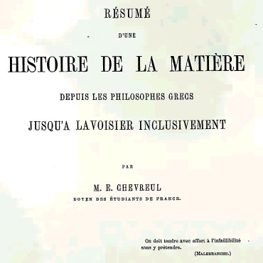
EXTRAITS
du tome XXXIX des Mémoires de l'Académie des sciences
II.Travaux historiques d'Eugène Chevreul - sous-section n°4 - suite et fin -
258. Deux découvertes recommandent le nom de J. Black à la science chimique et physique.
Joseph Black
- § I. La première est la distinction des alcalis carbonates d'avec les alcalis caustiques. [cette distinction a une importance fondamentale i l'on veut parvenir à la préparation dite canonique du dissolvant des Sages - cf. section carbonates et tartre vitriolé - cette distinction amène aussi à distinguer exactement le processus alchimique des procédés spagyriques -]
- § II. La seconde est la découverte de la chaleur thermométrique, qui devient latente, soit dans la liquéfaction d'un solide, soit dans la réduction d'un liquide en vapeur ou en gaz. [là, nous aurons besoin de quelques traits de cabale pour faire admettre que ce qui est appelé liquéfaction d'un solide en chimie, est appelé sublimation philosophique en alchimie, et ce par la voie sèche. C'est le lieu de dire qu'il revient à Fulcanelli l'honneur d'avoir montré que la voie sèche des anciens alchimistes dissimulait en fait deux phases : l'une, de liquation, dans laquelle la matière doit être portée dans un état liquide particulier ; si particulier qu'il fut baptisé par les Adeptes la « quintessence ». Puis une phase d'assation qui correspond à la période d'assèchement progressif. D'où viennent sans doute les nombreuses confusions entre la voie sèche et la voie humide. Certes, la voie humide existe, mais à l'époque où travaillaient les anciens Adeptes, elle était impratiquable en raison des conditions particulières de pression et de température requises. Nous observons d'ailleurs une différence entre la voie choisie par la Nature - la voie humide, fait bien vu par Daubrée - et la voie sèche, celle qu'enseigne Geber et la première connue -]259. L'exactitude exige que nous fassions remarquer que Black considérait l'acide uni à la potasse, à la soude, à l'ammoniaque, à la chaux et à la magnésie effervescente avec les acides faibles, comme étant l'air fixe [1, 2, 3, 4, 5,] ou fixé de l'atmosphère, gaz distinct, selon lui, de l'air pur et de l'air impropre à la combustion ; en un mot, c'est le gaz qui, plus tard, fut considéré comme le produit acide de l'union de l'oxygène avec le carbone. [il y a là coïncidence remarquable entre ce que les anciens chimistes appelaient l'esprit universel - assimilé au gaz acide carbonique, notre CO2 - et le produit de l'acide uni à la potasse : le tartre vitriolé -]
260. Black reconnut donc parfaitement que la potasse, la soude, l'ammoniaque, la chaux et la magnésie ordinaire étaient unis à cet acide, et que celui-ci se dégageait, par l'action de la chaleur, de la magnésie et de la chaux, et que la chaux dissoute dans l'eau enlevait l'acide carbonique à la potasse, à la soude, à l'ammoniaque, et enfin à la magnésie. [ce que Black reconnut n'est autre que la substance voilée sous l'épithète d'Arès - voir en recherche -]
261. La théorie de Black fut attaquée par Meyer. Il considéra que la causticité des bases ne leur appartenait pas, qu'elle résultait de la combinaison des alcalis purs avec un corps particulier, qu'il appelait acidum pingue ; mais la théorie de Black triompha de cette opinion et de quelques autres aussi hypothétiques. [les deux avaient raison ; car l'acidum pingue de Meyer est ce qui définit la ponticité particulière du dissolvant. Mais, dans le même temps, on est obligé de constater que ce dissolvant n'a aucun pouvoir caustique. La véritable nature du Mercure philosophique ne fut entrevue - sans qu'ils s'en doutassent - par les minéralogistes français du XIXe siècle - cf. Mercure -]262. La seconde découverte a une égale importance en physique et en chimie, par sa généralité, soit à l'égard de la science abstraite, soit à l'égard des applications.
Prenons de la glace réduite en poudre au centre de laquelle plonge un thermomètre. Supposons qu'on observe dans une atmosphère limitée dont la température est de + 10 degrés ; si la glace est à - 40 degrés de température, le thermomètre s'élèvera peu à peu jusqu'à zéro sans que la glace se fonde, en supposant qu'elle soit agitée ; mais à partir de zéro la glace commencera à se fondre, et, en supposant l'agitation parfaite, ce ne sera qu'après la fusion totale de la glace que l'eau liquide s'échauffera jusqu'à 10 degrés, la température de l'atmosphère. Que s'est-il passé ? c'est ce que Black a parfaitement vu ; à partir de zéro, la glace ne s'est liquéfiée que par la chaleur qu'elle a reçue du dehors, mais avec cette différence, en égard à celle qui l'a échauffée depuis - 40 degrés jusqu'à zéro, qu'elle a perdu sa puissance sur le thermomètre; de là l'expression de latente, qu'on lui a donnée pour la distinguer de celle qui fait monter le thermomètre de - 40 degrés à zéro. [on peut trouver une analogie de ce phénomène avec celle des cristallisations, dont on sait qu'elles ne se produisent pas si des conditions particulières de température et/ou de pression ne sont pas réunies -]
263. Black s'étant demandé comment on pouvait exprimer la quantité de cette chaleur latente, il s'est dit : Prenons l'unité-poids de glace à zéro, et voyons à quelle température il faudra porter une secondeunité-poids pour avoir 2 unités-poids à zéro. Aujourd'hui la science admet que la température de l'unité-poids de l'eau doit être de 80 degrés. Et on exprime en unités-calories cette température. Ondit donc que la glace à zéro, pour se fondre, exige 80 calories. Phénomène absolument analogue à celui de la réduction d'un liquide, se convertissant en vapeur par ébullition sous la pression de 0.76 mm de mercure. Supposons l'unité-poids d'eau portée à 100 degrés ; elle représente 100 calories à partir de zéro. Eh bien, depuis le commencement de l'ébullition jusqu'à ce que tout soit vaporisé, la température du liquide s'est constamment maintenue à 100 degrés. Les expériences les plus précises ont fixé à 540 calories la quantité de chaleur latente nécessaire pour convertir l'eau liquide à 100 degrés en vapeur, marquant 100 degrés au thermomètre, le volume de l'eau liquide à +4 degrés étant représenté par l'unité, celui de la vapeur à 100 degrés est représenté par 1696, en nombre rond 1700.
264. Malgré l'intervalle de temps écoulé depuis la publication des écrits de Newton et de François-Étienne Geoffroy (1716 à 1720) sur les affinités, jusqu'à celle des recherches des proportions en lesquelles les corps se combinent, de Wenzell, en 1777, et de J.-B. Richter de Berlin, de 1796 à 1798, je ne puis interrompre l'ordre des matières en ne parlant pas ici de l'importance des travaux de ces deux illustres savants allemands.
CHARLES-FRÉDÉRIC WENZELL. 1740-1793.
265. Les Leçons sur l'affinité des corps, dont il existe deux éditions (1777 et 1779), sont remarquables surtout par, l'exactitude des analyses, que Berzelius, si excellent juge en cette matière, a signalée comme extraordinaire pour le temps. Le point de départ des recherches de l'auteur a été l'observation faite avant lui que les solutions aqueuses de deux sels neutres, différents d'acide et de base, qui se décomposent mutuellement, produisent deux sels également neutres. D'où la conséquence importante que les quantités de bases nécessaires pour neutraliser un même acide, comme les quantités de divers acides pour neutraliser une même base, sont entre elles dans les mêmes rapports.
JÉRÉMIE-BENJAMIN RICHTER. 1762-1807.
266. De 1796 à 1798, il publia la Stochiométrie chimique, ouvrage des plus remarquables au point de vue de la généralité des résultats obtenus de l'application du calcul à la détermination des rapports mutuels suivant lesquels les corps se combinent. Berzelius, en appréciant la valeur de ce livre, remarque cependant que les résultats numériques n'ont pas la précision de ceux qu'on déduit des nombres, donnés par Wenzell.
ANTOINE-LAURENT LAVOISIER. 1745-1794
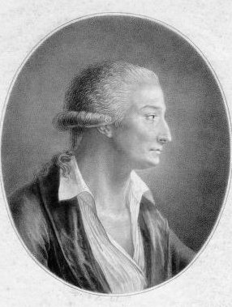
Lavoisier emprisonné à Port-Libre (1793-1794), Musée Carnavalet267. En parlant de Lavoisier,je me garderai bien d'examiner ses travaux comme s'il s'agissait d'une biographie ; une seule pensée me préoccupe, c'est de mettre en relief le génie du grand homme qui, en donnant une base à la chimie, étendit le domaine de la philosophie naturelle ; il l'étendit, dis-je, parce que son œuvre témoigne hautement, par l'esprit qui l'a accompli, que la cause la plus puissante du progrès des sciences naturelles est avant tout la définition précise de faits bien observés, et ensuite une interprétation portant à la fois sur leur coordination avec les connaissances déjà acquises et sur leurs causes prochaines ; et cela à l'exclusion de toute hypothèse reposant sur un passé qu'on ne connaît pas bien, ou se perdant dans un avenir vague qui ne se prête qu'au rêve et non à la raison qui seule affirme la vérité et consacre la science. [certes, seule la raison consacre la science. Aussi bien l'Art sacré ne peut-il être justement décrit que par la raison combinée au sentiment, voire au sens. C'est ici, véritablement, que s'inscrit le discours philosophique d'un Platon ou d'un Aristote - dont Chevreul a parlé bien avant -. Ce discours trouve évidemment son équilibre dans les Hermetica. Écrits dont nous rappelons qu'ils furent, selon toute vraisemblance, rédigés au IIe siècle après J.-C. Il faut être redevable à Festugière de nous avoir donné cette somme sur la Révélation d'Hermès Trismégiste - La lecture n'en est plus facile pour un homme du XXIe siècle, mais, en somme, il ne s'agit rien moins que d'une auto-formation roborative que nous proposons à notre lecteur...]
268. La tâche qui me reste à accomplir est de montrer ce mérite de l'oeuvre de Lavoisier, en y appliquant les propositions énoncées dans l'introduction de cet opuscule (1, 2, 3, 4, 5, 6); propositions qui m'ont servi de principes dans la revue critique des opinions que l'on s'est faites de la matière, depuis l'antiquité jusqu'à la théorie de la combustion fondée sur la combinaison de deux corps, un comburant et un combustible, à l'exclusion du phlogistique. [les termes de comburant et de combustible ont trouvé leurs correspondances alchimiques : le comburant est le patient, autrement dit l'écrin de l'or, la résine de l'or : c'est le Soufre blanc, matière qualifiée de passive et de féminine. Le combustible - ou carburant - n'est autre que l'Âme, c'est-à-dire le principe tingeant ou Soufre rouge. Nous supposons évidemment que le lecteur a déjà quelque notion de cabale. Faute de quoi, il trouverait nécessairement lettre morte -]
<>270. Nous avons vu ensuite que le plus grand nombre des alchimistes, avant Geber jusqu'à Becher, en reconnaissant les quatre éléments dans toute matière, considéraient les métaux comme immédiatement composés de trois principes immédiats : le soufre, le mercure et l'arsenic qui, dans le XVIe siècle, fut remplacé par le sel. [cf. Paracelse -]
269. Nous avons vu que, jusqu'aux alchimistes, l'opinion générale comptait quatre éléments, le feu, l'air, l'eau et la terre ; mais cette distinction, correspondant aux quatre états d'agrégation des particules matérielles, n'avait pas le même sens pour tous ceux qui l'admettaient : loin de là, Platon parle des quatre éléments dans le Timée, mais, selon lui, transmuables les uns dans les autres, on peut dire comme s'il eût prévu l'isomérisme de la science moderne. [cf. section idée alchimique II où Chevreul cite un passage du Timée qui est effectivement très curieux et qui en dit long sur sa perspicacité - ] Enfin, quelques philosophes n'admettaient qu'une matière unique, un seul élément : Thales de Milet, l'eau (500 ans av. J.-C.) ; Anaximène, l'air (543 ans av. J.-C.) ; Heraclite d'Éphèse, le feu. Il vécut de 540 à 480 av. J.-C. [au passage, cela donne une idée de savoir pourquoi la Tourbe, par exemple, cite ces philosophes qui, bien sûr, n'ont jamais rien écrit sur l'alchimie. Serait-ce une indication sur l'Elément qui entre en jeu au moment où le philosophe s'exprime ?]
271. Nous avons vu encore que Becher, croyant à la réalité de l'alchimie, avait compté deux genres d'éléments, en s'éloignant des alchimistes : le premier genre, sous la dénomination de fluide humide, comprenait l'eau et l'air; le second genre, la matière terreuse, comprenait la terre vitrifiable, la terre inflammable et la terre mercurielle. [Chevreul en fait les éléments d'une 2ème alchimie où, en somme, Becher ne change absolument rien : il se contente de remplir du même vin des bouteilles neuves -]
272. Si Stahl prit pour base de son hypothèse du phlogistique la terre inflammable de Becher, il n'adopta pas, comme je l'ai dit, toutes ses idées indistinctement. Quoi qu'il en soit, Stahl ne se fit pas illusion en pensant que son idée du phlogistique serait accueillie avec faveur ; elle était des plus simples en effet ; exclusivement physique, à la portée de toutes les intelligences, le phlogistique se montrait à l'état de particules excessivement subtiles, ni chaudes ni lumineuses dans le combustible. Recevaient-elles de l'éther ou de l'atmosphère extérieure une impulsion ? Elles devenaient chaudes, et lumineuses même, si l'impulsion avait été suffisamment forte et susceptible d'imprimer aux particules un mouvement que Stahl qualifiait de verticillaire.
273. Ces faits rappelés, parlons de Lavoisier. La conclusion finale de ses recherches est que la combustion au moyen de laquelle nous nous procurons la chaleur et la lumière n'est point due à la séparation d'un corps d'avec un autre, dans lequel, en vertu d'un mouvement verticillaire imprimé à des particules excessivement ténues, ces particules deviendraient chaudes et lumineuses. Loin que la chaleur et la lumière de la combustion proviennent de la séparation d'un corps d'avec un autre, il y a dans la combustion, au contraire, combinaison chimimique entre deux corps ; à savoir : le gaz oxygène, un des éléments de l'air atmosphérique, et le combustible. Lavoisier attribue la chaleur et la lumière de la combustion au calorique et au lumique, agents impondérables qui constituent, pensait-il, l'état gazeux de l'oxygène, duquel ils se séparent lorsque la base pondérable du gaz se combine au corps combustible.
Quant à la preuve de la combinaison de l'oxygène avec le combustible, elle est acquise bien simplement: on a déterminé de la manière la plus rigoureuse, avant l'action, le poids du gaz oxygène et le poids du combustible ; la combustion une fois accomplie, on pèse le produit, et, si le poids égale la somme des deux poids, de celui de l'oxygène et decelui du combustible, que peut-on dire contre cette conclusion, la combustion est une combinaison et non une simplification de la matière, comme le veut l'hypothèse du phlogistique ?
274. Je ne prétends pas que Lavoisier ait le premier introduit l'usage de la balance dans l'étude chimique des corps, car j'ai fait remarquer il y a longtemps qu'elle était d'usage en docimasie, ou plus généralement, dans tous les cas où il s'agissait de questions relatives aux métaux précieux ; [la balance a été employée par les alchimistes, en dehors de son contexte symbolique -] je citais encore les expériences faites par Sanctorius, qui composent l'Ars de statica medicina sectionibus aphorismorum septem comprehensa, et l'on pourrait ajouter si on le voulait l'expérience du saule de van Helmont. Je ne veux rien exagérer, mais je suis dans le vrai en disant que Lavoisier n'a reculé devant aucune difficulté pour mettre hors de toute discussion les poids des corps qu'il soumettait à ses expériences, et que personne avant lui n'avait eu recours aux procédés qu'il pratiquait en s'aidant des plus précis pour arriver exactement à ce résultat, et, estimant toute la profondeur de la découverte de la chaleur latente, de Black, il recourt à la calorimétrie. [pour Berthelot, il n'y avait point de salut en dehors du calorimètre -]
275. En mettant toutes les exagérations de côté, quelle conséquence tirer de tout ce qui précède ? C'est qu'en définitive, si la balance, dans les recherches chimiques, avait été employée, et dans des recherches d'un autre genre, avant Lavoisier, personne n'y avait recouru pour traiter des questions concernant la base d'une science telle que la question de la combustion qui, on ne peut le nier, est la mère de la chimie moderne, quand on considère la combustion comme l'exemple d'une combinaison chimique des plus énergiques, offrant tous les phénomènes qui se rattachent à cette catégorie des actions moléculaires du ressort de la chimie. Amené par la force des choses au point où nous sommes arrivé, ne voit-on pas le génie de Lavoisier dans la manière dont il envisage les choses qui, en apparence, devaient lui paraître de peu d'importance, pour ne pas dire indifférentes ? Les descriptions des appareils, la conduite des opérations, ses définitions précises des opérations les plus vulgaires, les détails dans lesquels il entre pour démêler toutes les causes auxquelles il faut avoir égard lorsqu'il s'agit d'évaluer le volume des gaz relativement à leur température, à la pression qu'ils supportent, quand il s'agit en définitive d'en évaluer les poids, justifient tout ce qu'il dit de la nécessité d'avoir des instruments de précision, tels que thermomètre, baromètre, manomètre, balances, et j'ajoute calorimètre. [cf. humide radical métallique -]
En rappelant la réflexion de Berzelius, que les analyses exactes chimiques ne remontent pas au-delà du dernier tiers du XVIIIe siècle, est-ce une exagération de demander qui a fait autant que Lavoisier pour porter la précision dans les recherches physico-chimiques ?
276. Ma tâche n'est point accomplie ; il me reste à montrer, non par des discours, la grandeur des obstacles que Lavoisier a dû surmonter. Bergmann, Scheele et Priestley ne sont pas les seuls savants du premier ordre sur lesquels les idées du phlogistique aient agi pour les éloigner de la vérité. Sans me perdre dans des détails, je vais appliquer le système de critique dont j'ai fait usage pour les chimères alchimiques, comme je m'y suis engagé, à des travaux d'un mérite réel dont les auteurs ont contribué d'une manière incontestable aux progrès de la science nouvelle. Je cite d'abord Kirwan, auteur d'un Essai sur le phlogistique et la constitution des acides (La traduction française parut en 1788.), où il soutenait l'hypothèse de Stahl contre la doctrine de Lavoisier; la traduction française parut avec des notes de Lavoisier, de Berthollet, de Fourcroy, de Monge, etc. Kirwan vint à Paris en 1787, où il répéta lui-même les expériences principales de Lavoisier, et, avec une bonne foi qui l'honore, il abandonna définitivement l'hypothèse du phlogistique. Henri Cavendish lut, le 15 de janvier 1784, à la Société royale de Londres, des expériences sur l'air; il s'en occupait déjà en 1782, elles sont d'un trop grand intérêt pour que je ne les examine pas avec quelque détail.
277. Henri Cavendish, de l'aveu de tous, a le plus contribué à faire connaître la composition de l'eau, de 1782 à 1784; s'il n'a pas dit d'une manière précise, 1 volume d'oxygène et 2 volumes d'hydrogène enflammés par l'étincelle électrique donnent de l'eau, c'est la proposition qu'on pourrait conclure avec le plus de probabilités d'un grand nombre d'expériences qu'il a décrites. En outre, il s'est plus approché de la vérité que Scheele, en reconnaissant dans l'air atmosphérique 1 volume d'air déphlogistiqué (oxygène) et 4 volumes d'air phlogistique (azote), au lieu du rapport de 1 à 3 ou 4 donné par le chimiste suédois. Il a parfaitement vu que l'air déphlogistiqué (oxygène), enflammé avec environ le double de son volume d'air inflammable (hydrogène), donne de l'eau pure, tandis que dans le cas où il y a, relativement à l'air inflammable, excès d'air déphlogistiqué et encore de l'air phlogistiqué, il se produit non-seulement de l'eau, mais encore plus ou moins d'acide nitreux. Voilà des faits. Voyons comment Cavendish les interprète. A la fin de son mémoire, il parle de la théorie de Lavoisier, en faisant remarquer que son auteur rejette l'existence du phlogistique, et que son explication de la combustion est d'une grande simplicité.- Ainsi, selon Lavoisier :
- 1° l'air phlogistiqué et l'air déphlogistiqué produisent l'air nitreux (deutoxyde d'azote) et l'acide nitreux (azotique) ;
- 2° Le soufre et des proportions diverses d'air déphlogistiqué produisent de l'esprit de soufre (acide sulfureux) et de l'acide vitriolique (acide sulfurique) ;
- 3° Le phosphore et l'air déphlogistiqué produisent l'acide phosphorique.Lavoisier considère en outre les chaux métalliques (oxydes) comme des combinaisons de l'air déphlogistiqué avec les métaux.
278. C'est après avoir reconnu la simplicité de la théorie de la combustion, expliquée par la combinaison de deux corps, que Cavendish avoue pourtant lui préférer une théorie où l'on admet à la fois l'union de l'air déphlogistiqué (oxygène) avec le combustible, et celle de l'air déphlogistiqué avec l'air inflammable (hydrogène), union qui constitue l'eau, et en cela Cavendish partage l'opinion de Scheele et de Priestley, qui, tous les deux, considèrent l'air inflammable comme le phlogistique.
- Mais où conduit cette manière de voir ? A des résultats absolument contraires à l'expérience ; et c'est ici que Cavendish, après avoir attaché son nom à une des plus grandes découvertes de la chimie moderne, va se confondre dans la catégorie de ceux qui n'ont jamais pris pour guide dans leurs travaux la méthode A POSTERIORI expérimentale.
279. Si le phlogistique existe, comme le prétend Stahl, et qu'on admette de plus la combinaison de l'oxygène avec le phlogistique-hydrogène, les choses vont devenir excessivement complexes, car, sans énumérer tous les cas qui seraient possibles en adoptant cette manière de voir, les suivants pourraient se produire :- a) L'oxygène se combinerait avec le combustible dont l'hydrogène fait partie, et celui-ci se dégagerait.
<>Les cas que je viens de supposer rentrent dans la manière dont je conçois l'analyse et la synthèse mentales procédant à des recherches expérimentales propres à résoudre une question chimique. A la place de Cavendish, avant de publier son opinion, je me serais assuré par moi-même des difficultés qu'il a supposé devoir rencontrer ; mais en me reportant à 1784, avec les connaissances du temps, je ne doute pas de la facilité que j'aurais eue de trouver parmi les faits connus des preuves pour rejeter l'intervention du phlogistique dans la combustion. Prenons pour exemple le mercure, dit précipité PER SE. [cf. Huginus à Barma -] Il est certain pour tous ceux qui en ont fait l'expérience qu'on le prépare avec du mercure et de l'air parfaitement secs, et, en outre, que la décomposition de ce précipité par la chaleur ne donne absolument que du mercure et de l'oxygène, dont les poids sont celui du précipité avant sa décomposition. Cette double expérience, synthèse et analyse, prouve donc que l'opinion que nous combattons est une pure hypothèse. Si Cavendish, en 1784, était encore partisan du phlogistique, rappelons que Berthollet ne l'abandonna que la même année.
- b) L'oxygène se combinerait avec le phlogistique-hydrogène seulement, et le corps séparé du phlogistique resterait à l'état libre.
- c) Il se dégagerait de l'eau, et il resterait un oxyde.
- d) Les deux corps oxygénés resteraient unis ensemble, etc.
280. Enfin, une dernière citation; il s'agit d'une expérience de Priestley, publiée à Philadelphie en 1796, contre la théorie de la combustion de Lavoisier. Priestley fait remarquer que si l'eau était réellement décomposée par le fer rouge de feu, qui s'emparerait de son oxygène tandis que l'hydrogène deviendrait libre, il ne pourrait se faire qu'en mettant le fer, prétendu oxydé, dans une cornue avec du charbon pur, on obtiendrait de l'air inflammable; or, disait-il, le fait est incontestable. Voilà le fait, répétai-je. Mais, ajoutai-je, l'interprétation en est inexacte. S'il eût été démontré qu'il n'existe qu'un gaz inflammable, et que ce gaz est l'hydrogène, Priestley aurait eu raison ; mais, comme il existe un grand nombre de gaz inflammables,le gaz inflammable provenant du mélange de l'oxyde de fer et du charbon n'est pas de l'hydrogène, mais de l'oxyde de carbone qui contient juste moitié moins d'oxygène que le gaz acide carbonique. L'interprétation de Priestley est fausse, et, conséquemment, son objection. Je remarque combien ce raisonnement met en évidence l'avantage de la distinction que je reconnais des faits définis par la science d'avec l'interprétation de ces faits.281. La connaissance des faits que je viens d'exposer était indispensable à tous ceux qui attachent quelque prix à n'avoir que des idées exactes de la valeur des hommes qui, comme Lavoisier, sont à la tête d'une science.
- La première conséquence à tirer de tout ce qui a été dit jusqu'à Becher, inclusivement, en partant de la philosophie grecque, c'est que l'on n'a eu aucun moyen certain de distinguer un corps simple d'avec un corps composé, au double point de vue de la synthèse et de l'analyse mentales et à fortiori de l'analyse et de la synthèse chimiques. Avant Becher, le plus grand nombre des alchimistes admettaient explicitement les quatre éléments : le feu, l'air, l'eau et la terre, comme corps simples, tandis que le soufre, le mercure et l'arsenic ou le sel, formés chacun des quatre éléments, étaient, tous les trois, les principes immédiats des métaux. [et nous ajouterons, des minéraux, ce qui est un point fondamental dans la mise en place de notre hypothèse sur la nature de la Pierre -] Or les alchimistes étaient dans l'erreur, puisque aujourd'hui l'air, l'eau et la terre sont réputés complexes, et les métaux passent pour être simples.
282. Becher, ai-je dit, a professé une autre manière de voir que les alchimistes qui l'avaient précédé : le FLUIDE HUMIDE, comprenant l'eau et l'air, et le PRINCIPE TERREUX, comprenant la terre vitrifiable, la terre inflammable et la terre mercurielle. S'il n'a pas admis les métaux comme immédiatement formés de soufre, de mercure et de sel, il ne les a pas moins considérés comme des corps composés de ses trois terres, la vitrifiable, l'inflammable et la mercurielle.
283. Stahl, qui n'était pas alchimiste, comme nous l'avons vu, a pris la terre inflammable de Becher et en a fait le phlogistique sans prendre, à l'exemple de ses prédécesseurs, en considération ni l'analyse, ni la synthèse CHIMIQUES, mais l'analyse et la synthèse MENTALES. Il s'est dit : Tous les corps inflammables ont pour élément commun le phlogistique uni à une autre matière qui n'est pas inflammable ; la combustion qui donne la chaleur et la lumière, en d'autres termes, le feu artificiel a lieu lorsque les particules excessivement ténues du phlogistique sont mises en mouvement verticillaire par l'éther ou l'atmosphère, et qu'alors elles se séparent de la matière incombustible, en vertu du choc quelles ont reçu. Évidemment, la conception du phlogistique appartient à la pure imagination ; mais je donne plus de précision au langage en disant qu'elle est l'œuvre de l'analyse et de la synthèse MENTALES.Un combustible donne du feu quand il brûle, pourquoi ? C'est que le phlogistique à l'état de repos est froid et obscur, mais dès qu'il est en mouvement il se manifeste sous la forme de chaleur et de lumière.Et c'est alors que l'éther ou l'atmosphère mettent ses particules en mouvement.Où en sont les preuves?
<>Stahl n'en donne aucune, cependant la raison peut-elle se taire? La combustion, dites-vous, est une analyse, puisque le phlogistique se sépare d'un corps que vous qualifiez de déphlogistiqué. Eh bien ! je qualifie votre assertion d'analyse ou de séparation de mentale, par la raison que la matière déphlogistiquée pèse plus que la matière phlogistiquée, et, si vous alléguez que le phlogistique ne pèse pas, je rappellerai ce que vous dites, dans vos trois cents expériences, que le charbon PUR est le phlogistique : ce raisonnement me suffit pour affirmer qu'ayant négligé la balance, je ne puis admettre qu'en prenant un corps combustible formé de deux corps, quand l'un d'eux est séparé de l'autre, celui-ci est plus pesant qu'avant sa séparation du premier; voilà la preuve de l'erreur de l'analyse que je qualifie de MENTALE.
284. Maintenant prouvons que votre synthèse est MENTALE aussi, puisqu'on prenant du plomb, de l'étain déphlogistiqués, en les chauffant avec du charbon, les métaux auxquels vous avez rendu le phlogistique qu'ils avaient perdu en brûlant pèsent moins, après l'avoir repris, qu'auparavant; voilà l'erreur de la synthèse MENTALE ; or, rappelons que l'augmentation de poids des métaux par la calcination était un fait connu depuis longtemps ; conséquemment, les objections que je fais auraient pu être faites par les contemporains de Stahl lui-même. Bayen, pharmacien français, appartenant à l'armée, porté par sa nature à l'observation, imagina de chauffer du mercure dit précipité PER SE dans une petite cornue munie d'un tube propre à conduire le gaz dans une cloche renversée et remplie d'eau. Ce précipité était du mercure déphlogistiqué ; eh bien ! par la seule chaleur, sans phlogistique, il est réduit en gaz et en mercure. Or, voilà une expérience qui confirme l'objection que nous avons faite, puisque la matière dite déphlogistiquée, en reprenant la forme métallique, aurait dû augmenter de poids; or, évidemment, elle en a perdu, puisque l'air recueilli dans la cloche est pesant, comme il l'était avant l'expérience, lors de son union avec le mercure. La distillation du précipité PER SE par Bayen remonte au commencement de l'année 1774. Après avoir montré comment, du temps où Stahl exposa son hypothèse du phlogistique, il eût été facile de juger ce qu'elle était au fond, sans cesser d'appuyer son raisonnement sur des connaissances acquises dès ce temps-là même, comment est-il arrivé pourtant que l'on ait été si longtemps à adopter la théorie de Lavoisier, bien plus simple, et reposant d'ailleurs sur des expériences précises, contrôlées par l'analyse et la synthèse chimiques, et hors de toute contestation ? Ce fait ne paraît pas facile à comprendre ; loin de le dissimuler, il faut, au contraire, chercher à se l'expliquer, et cet examen, loin d'être inutile, est au contraire plein d'intérêt pour tous ceux qui aiment à se rendre un compte exact des faits les moins vraisemblables en apparence; et les résultats de l'examen qui nous occupe ne peuvent être dénués d'intérêt, lorsqu'il s'agit d'une branche de connaissances d'une origine très-ancienne déjà, mais dont la base n'a été fixée que dans le dernier tiers du siècle passé, et que les obstacles sont venus des hommes mêmes qui semblaient appelés, par leur esprit et leurs connaissances, à devoir être les premiers à discerner la vérité de l'erreur en assurant le progrès des connaissances humaines par l'adoption même de la théorie nouvelle de la COMBUSTION.
285. L'examen dont je parle a un double intérêt :- D'abord l'étude de l'esprit humain qui, pour appartenir à la science, dans le cas dont nous nous occupons, doit tenir à l'essence même de l'esprit, et dès lors l'étude du fait particulier, ainsi envisagé, s'élève à la connaissance de la généralité.
- Ensuite, n'est-ce rien que l'examen d'une discussion prolongée des années entières, entre des esprits des plus élevés de pays divers, qui, sans s'être concertés, soutiennent l'erreur au détriment de la vérité ? Dans un sujet aussi étranger que possible aux passions humaines, n'est-ce rien pour la vérité, la morale, la justice, de montrer cette infirmité de l'esprit de l'homme-individu ? Lorsque le résultat de l'examen historique de la théorie de la combustion, fait aujourd'hui, en 1876, environ un siècle après qu'elle fut acceptée du monde savant, lorsque cet examen, dis-je, élève encore la gloire de son auteur, qu'un tribunal dit de salut public condamna à porter sa tête surl'échafaud le 8 de mai 1794 ! Lavoisier était âgé de quarante-huit ans.
frontispice du Traité Elémentaire de Chimie, Paris, 1789
[tout lecteur intéressé par la chimie en général, l'alchimie envisagée comme « proto chimie » et Lavoisier de façon spéciale se doit de lire un remarquable ouvrage : Lavoisier, Bernadette Bensaude-Vincent, préface de Michel Serres, Flammarion, 1993 ]
286. Rappelons les cinq faits suivants sans réflexions :
- Ier fait. L'hypothèse du phlogistique a été adoptée lorsqu'on savait que les métaux augmentent de poids par la calcination, que l'air est nécessaire à cette calcination, et qu'il n'y a pas de combustion possible sans air.
- 2ème fait. Quatre grands hommes : Bergmann, Scheele, Priestley et Henri Cavendish, ont été partisans de l'hypothèse du phlogistique.
- 3ème fait. Scheele et Priestley, connaissant l'augmentation de poids des métaux calcinés, ont tous les deux, avec des opinions diverses, admis que le phlogistique était l'hydrogène, et cependant Stahl avait dit, dans son dernier ouvrage des trois cents expériences, que le phlogistique est essentiellement solide et représenté par le charbon pur.
- 4ème fait. Lavoisier, membre de l'Académie des sciences, avec l'influence que lui donnait sa position sociale et une grande fortune, n'a pas eu, longtemps avant 1786, un grand nombre d'adhérents parmi les savants ses compatriotes, et un Français, dont la probité et la profondeur de l'esprit chimique étaient en lui à l'égal du courage civil et du courage du soldat, Berthollet, n'adhéra qu'en 1785 à la théorie de Lavoisier !
- 5ème fait. Henri Cavendish, qui avait passé plusieurs années à reconnaître la composition de l'eau, a discuté, en 1784, l'hypothèse au phlogistique et la théorie de la combustion, et, après avoir démontré que l'eau est formée de 1 volume d'oxygène et de 2 volumes d'hydrogène, il a conclu d'une discussion, qu'il croyait sérieuse, en faveur de l'hypothèse du phlogistique.
<>287. En commençant à parler de Lavoisier (267), j'ai rappelé les six premiers alinéas de l'introduction de cet opuscule qui présentent dans l'ordre suivant la définition du mot fait, la distinction de l'analyse et la synthèse chimiques d'avec l'analyse et la synthèse mentales, et, faisant remarquer que la définition et la distinction des analyses et synthèses ont été autant de propositions qui m'ont servi de principes dans le résumé critique des opinions alchimiques, il m'est facile en ce moment, après l'exposé des cinq faits précédents (286), conclusions de ma critique des opinions émises postérieurement à Stahl, sur son hypothèse du phlogistique et sur la théorie de la combustion de Lavoisier, de faire remarquer à mes lecteurs que toutes les objections opposées à cette dernière théorie sont les conséquences dernières de l'hypothèse au phlogistique expirante, et il me sera permis d'ajouter que le système de critique qui me guide se compose d'une critique spéciale et d'une critique générale.
La critique spéciale porte sur les faits spéciaux à la chimie ou plus généralement à la science à laquelle mon système de critique spéciale est appliqué, d'où la conséquence que le critique d'une science doit connaître cette science, et ce qui la distingue des autres sciences ; en un mot, l'histoire d'une science exige que celui qui l'écrit soit lui-même savant en matière de cette même science. La critique générale exige de son auteur une connaissance suffisamment approfondie des analogies et des différences existant entre les branches diverses de la philosophie naturelle pour avoir des idées justes des méthodes spéciales de ces branches diverses, précisément pour ne pas confondre la méthode générale avec les méthodes spéciales ; évidemment, cette connaissance exige l'étude des facultés de l'esprit humain, non d'après la simple philosophie lettrée, mais d'après la philosophie scientifique comprenant les méthodes spéciales des sciences, méthodes spéciales qui, je le reconnais, sont une conséquence de la faiblesse de l'esprit humain.
288. Or, c'est bien ce système de critique qui, après avoir été appliqué aux chimères alchimiques, l'a été à l'hypothèse du phlogistique, d'abord à son auteur, puis à ses successeurs; et c'est alors que nous avons vu ses partisans, afin de prévenir des objections, se mettre en contradiction évidente avec Stahl lui-même. Tandis que ce même système de critique citait la nouvelle doctrine de la combustion comme évidemment fidèle à la balance, lorsqu'au nom de la synthèse chimique elle démontrait que le poids du produit de la combustion était exactement la somme du poids du combustible et de l'oxygène, aussi bien qu'elle l'était à l'analyse chimique lorsqu'elle démontrait que le poids du mercure et le poids du gaz oxygène, provenant de la distillation du précipité PER SE, représentaient exactement le poids de la matière distillée. Qui a établi cette vérité ? C'est Lavoisier. Et plus de quinze années se sont écoulées avant que le monde savant l'ait reconnue !
289. Avant le triomphe de la vérité, quelques critiques prétendaient avec assurance que tous les faits sur lesquels repose la nouvelle doctrine avaient été découverts par d'autres que Lavoisier, proposition aussi injuste pour le grand homme qu'elle blesse la vérité. Je m'estime heureux que mes derniers travaux m'aient permis de formuler une proposition, aussi vraie dans la science que dans tout ce qui est du ressort de l'esprit, c'est qu'en tout raisonnement il y a deux choses distinctes : Des faits et une interprétation de ces faits :
<>- 1° Les faits, objets du raisonnement, doivent être définis, et ceux du domaine de la science ne peuvent l'être que par elle en recourant à l'analyse mentale ;
- 2° L'interprétation de ces faits, lorsqu'ils sont scientifiques, constitue la théorie même de la science à laquelle ils se rapportent.<>Eh bien ! d'après tout ce qui précède, à qui appartient l'exactitude de cette interprétation ? A Lavoisier, sans contredit. Et qu'est-ce qui relève son mérite, que dis-je, sa gloire ? C'est précisément les interprétations des faits contraires aux siennes, données par ces hommes éminents, qui se nomment Scheele, Priestley et H. Cavendish ! <>290. Quelle est la grandeur de l'oeuvre chimique de Lavoisier ? J'ose dire qu'elle ne pouvait être appréciée qu'après un examen analogue à celui qu'on vient de lire des idées qu'on s'est faites de la matière depuis l'antiquité jusqu'à Lavoisier inclusivement. Tout ce qu'on a dit d'elle est erroné jusqu'à lui exclusivement. Évidemment, il n'y a ni analyse ni synthèse chimiques possibles, si le savant n'a pas recours à la balance. Les conséquences rigoureuses que Lavoisier a tirées de ses études, ne l'ont point été de son esprit seulement, mais de son esprit observant, et conduit d'après ses observations à instituer des expériences en recourant à la balance, pour savoir si son esprit avait vu la vérité ou si l'erreur l'avait égaré. Telle est la marche qui le conduisit à ce principe, que personne n'avait formulé avant lui : Une matière composée est celle dont l'analyse chimique sépare plusieurs corps, tandis qu'elle ne le peut lorsque la matière est simple. Mais Lavoisier, homme de génie, avait senti que dans la science naissante, fille de son esprit, de l'observation et de l'expérience, il fallait la laisser libre de se développer en disant d'avance que son principe était vrai en soi, mais non absolu sans avoir égard au temps quant aux corps qu'il qualifiait de SIMPLES; par la raison qu'avec le progrès des connaissances on pourrait décomposer un jour des corpsqui, jusque-là, avaient résisté à l'analyse.
Conclusion d'une sagesse parfaite ; car, douze ans après sa mort, 1806, H. Davy démontrait que les alcalis et les terres, considérés avant lui comme des corps simples, sont en réalité complexes; progrès immense, mais qui, loin d'être en contradiction avec la théorie de la combustion, en était au contraire une confirmation éclatante, et, si Lavoisier eût été témoin de la découverte, il n'en aurait point été surpris, puisqu'il écrivait dans son Traité élémentaire de chimie (3ème édition, tome Ier, page 180) :« Cette considération semblerait appuyer ce que j'ai précédemment avancé à l'article des terres, que ces substances pourraient bien n'être autre chose que des métaux oxydés, avec lesquels l'oxygène a plus d'affinité qu'il n'en a avec le charbon, et qui, par cette circonstance, sont irréductibles. » [cf. section humide radical métallique où ce thème est spécialement développé -]
<>291. Je ne puis trop insister sur l'excellence de l'esprit de Lavoisier formulant le principe vrai en soi de la définition du corps simple, définition conforme à l'esprit de l'analyse mentale; mais il se gardera bien de ne pas rester fidèle à l'expérience. Malgré la probabilité de la nature complexe des terres, il reconnaîtra le fait de leur résistance à l'action du carbone, des corps connus celui qui a le plus d'énergiepour enlever l'oxygène aux corps oxygénés, mais, loin de taire la probabilité, il l'exprimera au contraire. Certes, voilà un grand exemple donné, et, à mon sens, il est applicable à l'étude des êtres les plus complexes au point de vue des connaissances propres à expliquer les phénomènes que présentent les êtres vivants à l'observation du savant; mais, en parlant d'eux et de Lavoisier, en montrant la sévérité de ses écrits pour distinguer ce que l'on démontre d'avec ce qu'on ne démontre pas, quel que soit le degré de probabilité, n'est-ce pas une bonne fortune pour moi, critique, de montrer l'étendue de ce vaste esprit en citant les paroles mêmes que lui suscite l'étude de la respiration à laquelle Armand Séguin coopéra ? Quel sujet lui inspire les réflexions que je vais reproduire ? Il est complexe; car il s'agit des animaux et de l'homme même. La vie n'existe pas sans air. Elle s'éteint dès que cet air cesse de pénétrer en eux, et, fait remarquable : l'air expiré, son action accomplie, renferme du gaz acide carbonique, parce que, sans-doute, il a enlevé du carbone à l'animal en vertu de son affinité pour ce combustible ; mais cette union ne se fait pas sans un dégagement de chaleur, il est donc vraisemblable que le phénomène de la respiration est en partie chimique. Au point de vue où se place l'auteur de la nouvelle théorie de la combustion, une relation intime ne peut ne point exister entre le carbone brûlant par l'oxygène atmosphérique et le carbone du sang brûlant par ce même oxygène. Une expérience précise pour reconnaître la chaleur représentée par le carbone indique qu'elle est insuffisante pour représenter la chaleur produite par l'acte respiratoire ; il admet en conséquence qu'une portion d'hydrogène du sang est elle-même brûlée. Mais, après avoir remarqué que la chaleur développée par l'acte respiratoire varie dans le même individu selon l'état de veille, de la digestion, de l'exercice musculaire, etc., l'esprit du grand observateur fait les réflexions suivantes :« Ce genre d'observations conduit à comparer des emplois de force entre lesquels il semblerait n'y avoir aucun rapport. On peut connaître, par exemple, à combien de livres, en poids, répondent les efforts d'un homme qui récite un discours, d'un musicien qui joue d'un instrument. On pourrait même évaluer ce qu'il y a de mécanique dans le travail du philosophe qui réfléchit, de l'homme de lettres qui écrit, du musicien qui compose. Ces efforts, considérés comme purement moraux, ont quelque chose de physique et de matériel qui permet sous ce rapport de les comparer avec ceux que fait l'homme de peine. Ce n'est donc pas sans quelque justesse que la langue française a confondu sous la dénomination de travail les efforts de l'esprit comme ceux du corps, le travail du cabinet et le travail du mercenaire. »
292. Ces considérations émanent de l'homme de génie. La généralité des phénomènes le frappe, mais le bon sens, qui en est le compagnon inséparable, le préserve de se laisser aller à des rapprochements qui ne s'adresseraient qu'à la faiblesse d'esprit de lecteurs dont la curiosité ne cherche dans un livre quelconque que ce qui peut leur donner l'occasion de distractions près des gens du monde ou d'auditeurs incapables de discerner le faux du vrai. Autant la curiosité de l'esprit élevé est fructueuse pour la science, autant celle dont nous parlons est stérile et souvent dangereuse pour la vérité, par le contraste qu'elle est si disposée à établir entre quelques faits donnés comme principaux, tandis que l'importance n'en est qu'apparente, parce qu'il y a une omission de faits essentiels à la question qu'on a posée, omission, il faut le reconnaître, dont la cause est l'ignorance plutôt que l'intention. Rien ne correspond mieux à la pensée que les paroles de Lavoisier m'ont suggérée, que la pensée de Pascal que je reproduis (Elle est extraite de l'édition de P. Faugère, tome II, page 85) :
« Il est dangereux de trop faire voir à l'homme combien il est égal aux bêtes, sans lui montrer sa grandeur. Il est encore dangereux de lui trop faire voir sa grandeur sans sa bassesse. II est encore plus dangereux de lui laisser ignorer l'un et l'autre, mais il est très-avantageux de lui représenter l'un et l'autre. »
REMARQUES SUR LES MOTS FERMENTATION ET FERMENT USITES EN ALCHIMIE.
293. Je ne puis me dispenser, en terminant ce Résumé, de rappeler en dernier lieu quelques remarques sur les mots fermentation et ferment, au moyen desquels les alchimistes ont donné une idée claire, à la portée de tous les esprits vulgaires, de leur prétention absolument chimérique de transformer les métaux communs en métaux précieux. [mais leur prétention de pouvoir transformer les pierres communes en pierres précieuses est un fait réel, tant de synthèse mentale qu'expérimentale -]
En effet, pas une bonne ménagère n'ignore que la pâte de froment, abandonnée à elle-même, dans un lieu chaud, lève après un certain nombre de jours, et qu'en mélangeant de la farine de froment avec de l'eau et y ajoutant de la farine déjà levée qu'on appelle levain, ce mélange lèvera au bout de quelques heures seulement.
Les anciens alchimistes ont dit que le levain de pâte ajouté à de la pâte récente la change en sa propre substance. Eh bien ! l'art alchimique, en prenant des métaux communs et les mettant avec notre pierre philosophale, [ce pluriel est, dirions-nous, singulier... Est-ce de l'humour ?] les change en or ou en argent, selon que la pierre philosophale renferme de l'or ou de l'argent. La pierre philosophale est donc un ferment qui, ajouté aux métaux communs, les transforme en or ou en argent, comme le levain de pâte change la pâte récente en pâte susceptible de lever en quelques heures. Plus tard des alchimistes ont dit explicitement que l'or ou l'argent de la pierre philosophale, convenablement préparée, différaient de l'or et de l'argent commun en ce que ceux-ci étaient morts, tandis que l'art alchimique avait donné la vie à ceux de la pierre (Voir le tableau n° 2 de l'atlas.).
TRAVAUX CHIMIQUES DE JEAN REY, DE JEAN MAYOW ET D'ÉTIENNE HALES.
294. Le complément de cet opuscule se partage en deux sections.
- La première est consacrée à l'exposé des écrits chimiques de Jean Rey, de Jean Mayow et d'Étienne Hales.
- La deuxième section concerne la question de savoir si l'on peut démontrer que les trois savants précités ont fondé la théorie de la combustion telle qu'elle ressort des travaux de Lavoisier.295. Malgré tout mon désir de suivre l'ordre chronologique des auteurs qui ont écrit sur la matière, je n'ai point parlé de Jean Rey, né dans la dernière moitié du XVIe siècle, et qui mourut en 1645, ni de Jean Mayow, né en 1645, mort en 1679, ni enfin d'Étienne Hales, né en 1677, mort en 1761. Ces trois auteurs ont parlé de l'air, mais à des époques où ils ne furent pas compris de leurs contemporains, les deux premiers surtout ; dès lors, pour apprécier la juste valeur de leurs découvertes, j'ai préféré ne parler d'eux qu'après les travaux de Lavoisier, qui permettent d'estimer ce qu'ils sont en réalité. J'avais d'abord pensé satisfaire à toutes les exigences en parlant successivement de leurs recherches dans l'ordre suivant, de celles de Jean Rey et d'Étienne Hales d'abord, puis de celles de Mayow, par la raison que les deux premiers ont parlé de l'air comme s'il était de nature simple, tandis que Mayow a parlé de sa nature complexe; mais, en y réfléchissant davantage, j'ai vu que l'ordre chronologique était préférable en tout au but que je me propose, but qui est à la fois de montrer par l'histoire même combien la vérité rencontre d'obstacles avant d'être reconnue, et cela est aussi vrai pour l'histoire des sociétés humaines que pour l'histoire des sciences ; mais il faut reconnaître que la faiblesse de l'esprit humain dans l'individu-homme a bien plus d'influence que les passions quand il s'agit de recherches scientifiques, tandis que le contraire a lieu lorsqu'il s'agit de l'histoire des sociétés humaines.
TRAVAUX DE JEAN REY, DE JEAN MAYOW, D'ETIENNE HALES.
JEAN REY (NÉ A IA FIN DU XVIe SIÈCLE, MORT EN 1645).
<>296. Jean Rey à un esprit positif joignait l'esprit d'observation et d'invention, comme en témoigne un livre qu'il publia en 1630, sous le titre d'ESSAYS, à l'occasion d'une question que lui avait adressée Brun, apothicaire de Bergerac, sur la cause pour laquelle l'étain et le plomb augmentent de poids par la calcination, et cependant Brun avait observé qu'une fumée, exhalée pendant la calcination, avait dû diminuer le poids de la matière pesée après la calcination. Jean Rey répondit que l'air est pesant, et qu'en s'épaississant sur le métal calciné, il était la cause du phénomène. Il ne se contenta pas de vérifier le fait, en tenant compte de toutes les causes auxquelles on pouvait attribuer le phénomène, mais il exposa les raisons qu'on pouvait avoir de croire que les choses devaient se passer comme il le disait. Par exemple, selon lui, l'air était pesant comme l'est l'eau ; mais une fraction de ces corps examinés dans leurs masses respectives semblent ne pas l'être, et cependant, quand on pèse dans la masse d'un de ces fluides un corps solide plus dense qu'elle, ce corps semble perdre une partie de son poids qui égale précisément le poids du volume d'eau ou d'air qu'il déplace. C'est une proposition que Jean Rey met en avant, et qu'Archimède avait prouvée par l'expérience; mais il ne s'en tient pas là, il reconnaît que l'air insufflé dans un ballon en augmente le poids. L'expérience est donc positive.
297. Le père Mersenne écrivit à Jean Rey une longue lettre dans laquelle il lui faisait toutes les objections imaginables contre l'apesanteur de l'air; et c'est merveille de lire la réponse de Jean Rey à cette lettre ; on voit que des objections très-fortes en apparence sont en réalité des preuves de la pesanteur de l'air, par exemple, le père Mersenne objecte que si l'air n'était pas léger, quand on perce un trou dans la poutre d'un plancher, il ne devrait pas y monter ; et Jean Rey lui répond : C'est précisément parce que l'air voisin de la poutre est pesant que la pression de l'air, supérieure à celle qu'éprouve la tranche d'air qui affleure l'orifice du trou de la poutre, y monte.
298. Quarante-quatre ans après la publication des Essays de Jean Rey, et cinquante-trois ans avant la publication de la Statique des végétaux de Hales, parurent cinq Traités de Jean Mayow, dont les deux premiers sont des plus remarquables au point de vue de l'histoire de la matière. L'un concerne le sel-nitre et l'esprit nitro-aérien, l'autre la respiration.
299. J. Mayow établît clairement la corrélativité de deux corps ; pour que les corps connus antérieurement sous la dénomination de combustibles, comme le bois, le charbon, etc., donnassent du feu, il fallait qu'ils s'unissent à un second corps qui se trouvait dans l'air. Il nommait ce corps esprit nitro-aérien; c'était l'oxygène, que les modernes disent appartenir à l'ordre des comburants. Pourquoi la dénomination à l'esprit nitro-aérien ? C'est que Mayow eut l'idée vraie que ce corps était un des principes du sel-nitre (azotate de potasse, salpêtre) et il expliqua la nitrification des terres en disant que l'esprit nitro-aérien, après avoir pénétré dans les interstices de la terre, s'unissait à un alcali (qui pouvait être la potasse, la chaux, l'ammoniaque) et à un autre corps ; mais, quoiqu'il soit vrai qu'il faille un troisième corps avec l'oxygène et l'alcali pour constituer le sel-nitre, et que ce troisième corps est le gaz désigné aujourd'hui par le nom d'azote, Mayow n'eut point une idée nette de son existence; aussi ne le reconnut-il pas comme un des principes de l'air atmosphérique, et méconnut-il la propriété élastique du résidu de l'air qui, après avoir servi à la combustion ou à la respiration, est impropre à la combustion ou à entretenir la vie d'un animal. Ce résidu gazeux lui parut différer de l'esprit nitro-aérien par son défaut de pureté ; conséquemment il est inexact de dire qu'il eut une idée nette de la composition de l'air et du nitre, mais ce qui est vrai, c'est qu'il reconnut dans l'air une partie (comburante) et élastique et un air moins pur ou beaucoup moins élastique.
Mais la combustion attribuée à deux corps, un combustible et un comburant qui était dans l'air, la nécessité de la pénétration de ce comburant dans l'intérieur des animaux pour entretenir la vie par le fait de la respiration, étaient deux grandes vérités ! [nous avons déjà eu l'occasion de dire dans l'une de ces sections ce qu'au plan alchimique, il fallait entendre par comburant et carburant. Notons que, de façon générale, les réactions d'oxydo-réduction jouent un rôle absolument majeur en alchimie -]
300. Une conséquence sur laquelle il faut insister, c'est la justesse du raisonnement de Mayow pour réfuter l'opinion que soutint plus tard Georges-Ernest Stahl, à savoir que l'acide sulfurique était tout formé dans le soufre, tandis que cet acide, selon Mayow, était le résultat de l'union du soufre avec l'esprit nitro-aérien; mais, tout en émettant une proposition vraie, dans d'autres passages de ses écrits, il se sert du mot soufre comme synonyme de principe combustible. Une autre conséquence non moins remarquable, c'est que le sel nitre n'était point inflammable, comme on le prétendait, et qu'il était faux qu'il renfermât du soufre ; que le sel nitre ne donnait du feu, quand il était chauffé jusqu'à la liquéfaction, qu'à la condition expresse d'être en contact avec un combustible, soufre, charbon, etc., etc.
301. J. Mayow constate lui-même le fait que l'antimoine calciné ou brûlé par l'acide azotique augmente beaucoup de poids par le fait de l'addition de l'esprit nitro-aérien qui s'y unit.
302. Enfin, je dois louer Mayow de la manière ingénieuse dont il institua ses expériences, soit pour faire brûler des combustibles dans des volumes d'air que renfermaient des vases transparents placés au centre d'un plus grand vase contenant de l'eau, soit pour y faire respirer des animaux ; et n'oublions pas que les grands esprits que comptent les sciences progressives proprement dites ont toujours fait preuve d'invention dans la manière dont ils ont institué leurs expériences ; et c'est un de leurs caractères qui ne peut être apprécié à sa juste valeur que par les savants expérimentateurs eux-mêmes, et j'ajoute que Pascal le grand possédait le génie expérimental à un haut degré.
303. Enfin, je ne manquerai pas d'insister encore sur l'idée si juste, et pourtant si peu remarquée de ses lecteurs et de ses critiques, c'est qu'il combattit explicitement l'opinion si répandue de son temps, et qui compte encore plus d'un partisan, à savoir, une sorte d'opposition admise entre les acides et les alcalis. Je reproduis les paroles que l'un de ses traducteurs lui attribue :« La lutte et la chaleur que l'on observe lorsqu'on les mêle ensemble (les acides et les alcalis) ne doivent point être attribuées à leur inimitié commune ; ce sont plutôt les résultats de leur union CONJUGALE. Cette lutte ne tend qu'à diviser ces corps afin que leur intimité soit plus intime (Voir le texte de l'édition latine de 1674, pages 44 et 45, de Mayow.). » [cela rappelle les allégories des alchimistes sur la nécessité de marier deux principes que tout oppose, sur la lutte du fixe et du volatil, etc.]
Certes, à l'époque où cette pensée fut exprimée, elle ne put l'être que par une intelligence aussi juste que pénétrante ; car les personnesqui étudient les sciences et qui réfléchissent à la manière dont elles sont généralement professées, voient que l'enseignement est en beaucoup de choses donné au point de vue de l'absolu plutôt qu'au point de vue du relatif et surtout du corrélatif. [j'espère que le lecteur est sensible au style de Chevreul...] Or, les choses qui se présentent à notre observation offrent bien plus de phénomènes de relation et de corrélation que de phénomènes isolés ressortissant de l'absolu. [voilà certainement une phrase que l'auteur du Timée n'eut point désavouée. On sait que chevreul était un grand admirateur de Platon ; Aristote semblait lui poser plus de problèmes -]
304. L'auteur de la Statique des végétaux, publiée en 1727, et qui fut traduite en français par Buffon en 1785, mérite une mention spéciale, quoique l'auteur ait confondu sous le nom d'air fixé tous les gaz que la chaleur dégage de matières quelconques par la distillation, avec ceux qui le sont par des acides versés sur des métaux, sur des carbonates, etc., avec ceux que des matières sucrées produisent spontanément par la fermentation ; mais, s'il ne fut pas le premier à recueillir des gaz dans des cloches remplies d'eau, il le fut à faire usage de ce moyen dans des recherches suivies, et de cet exemple résultait l'emploi du mercure pour recevoir les gaz solubles dans l'eau qui, d'ailleurs, n'attaquait pas ce métal. Avant 1719, un ingénieurde Paris, du nom de Moitrel d'Élément [1, 2], savait le moyen de rendre l'air visible dans l'eau et de le mesurer par pinte ou par toute autre mesure (Voir les Essays de Jean Rey, publiés par Gobet en 1777, page 183.). On voit qu'il s'était écoulé près d'un siècle (quatre-vingt-dix-sept ans) depuis la publication des Essays de Jean Rey jusqu'à la publication de la Statique des végétaux, et que les deux auteurs confondaient l'air avec un élément ; en effet; J. Rey d'abord avait commis l'erreur d'attribuer à l'air entier ce qui ne concernait que l'union avec les métaux d'une portion de l'air, l'oxygène, parfaitement distincte de l'autre, l'azote, et Hales ensuite avait commis une erreur bien plus grande en croyant dégager de l'air atmosphérique fixé, tandis qu'en réalité il avait dégagé des gaz tout différents de l'air, et qu'on ne pouvait citer aucun corps solide ou liquide qui, à cette époque, donnât comme les éléments 21 d'oxygène et 79 d'azote, ou, en d'autres termes, de l'air atmosphérique.
305. Si Hales n'eut pas la pensée de soumettre à des expériences comparatives les gaz qu'il recueillait, et l'air atmosphérique, et si à cet égard il se montrait dénué de toute initiative chimique, sachons-lui gré d'avoir démontré le premier, par la voie expérimentale, la force avec laquelle, aux premiers jours du printemps, les plantes à feuilles caduques puisent l'eau dans le sol, la quantité prodigieuse de vapeur aqueuse que les plantes garnies de leurs feuilles répandent dans l'atmosphère, enfin d'avoir montré la puissante influence de l'eau pour mettre toutes les parties des plantes en communication les unes avec les autres, et satisfaire ainsi à tous les besoins de la vie végétale.ON N'EST POINT FONDÉ A DIRE QUE JEAN REY ET JEAN MAYOW ONT FONDÉ UNE BASE DE LA THÉORIE DE LAVOISIER.
306. N'ayant pas parlé à dessein ni de Jean Rey, ni de Mayow, ni de Hales aux époques respectives où ils vécurent, j'ai eu l'intention de relever leur mérite, surtout à l'égard des deux premiers, car le mérite de Hales fut mieux apprécié de ses contemporains que ne le furent les travaux de J. Rey et de Mayow ; mais mon intention, en ne parlant d'eux qu'après Lavoisier, était dictée par l'intérêt de l'extrême justice, non par la pensée de sacrifier le contemporain à J. Rey, d'abord, expliquant si bien l'augmentation de poids des métaux par la calcination, puis à J. Mayow, qui avait aperçu, par des expériences comparatives, l'influence d'une portion de l'air atmosphérique dans la combustion et la respiration ; mon intention a été de reconnaître tous les mérites, et cela est si vrai, qu'avant d'aller plus loin, j'ose dire que jamais des hommes capables de juger les écrits que j'examine ne prendront au sérieux un livre de S.-J.-A. Scherer, écrit en allemand, intitulé : Preuves que Jean Mayow a posé depuis cent ans les bases de la chimie antiphlogistique et physiologique, ni le passage suivant, extrait de la médecine de Joseph Franck :
« Baumes, J. Rollo, Reich, Ackermann crurent trouver une voie plus sûre pour l'étude de la médecine dans les principes de la chimie renouvelée par Lavoisier, Fourcroy et quelques autres. »
De telles allégations réfutées par une critique froide et sérieuse seraient peu favorables à l'opinion des deux auteurs cités ; il y a plus, je pense qu'en lisant la réfutation le lecteur pourrait croire que, dans l'appréciation que j'ai faite des travaux de J. Mayow, j'en ai exagéré le mérite.
307. La première conséquence à déduire de ma dérogation à l'ordre chronologique dans l'exposé des travaux de J. Rey, de J. Mayow et de Hales, a été mon intention de mettre leurs travaux en relief précisément à cause de leur originalité, que leurs contemporains n'ont point appréciée. J. Rey a parfaitement démontré par l'expérience que l'air est pesant. Le fait prouvé, il a montré que le métal calciné n'avait pu recevoir aucune augmentation de poids que de la part de l'air, cet air pesant s'étant épaissi sur le métal. A cette époque on ne pouvait rien désirer de mieux, surtout après les raisonnements si remarquables par lesquels il répondait aux objections du père Mersenne. [nous rappelons que dans tous les récits de pseudo transmutations, il y a toujours eu un accroissement de la masse. Cette accroissement ne peut s'expliquer que de la façon dont J. Rey l'a faite -] Evidemment J. Rey fut plus physicien que chimiste, car, en réalité, ce n'était pas l'air qui était fixé, mais un de ses éléments représentant le cinquième de son volume. En définitive, au point de vue chimique, la question n'était pas résolue. Elle demandait l'intervention de l'analyse de l'air et sa synthèse, et le recours à la balance conséquemment.
308. Je ne répéterai pas les louanges que j'ai données à J. Mayow, mais mon intention n'est pas de les atténuer en faisant remarquer qu'il n'a pas démontré que l'air est formé de deux fluides élastiques absolument distincts par les propriétés : le gaz oxygène et le gaz azote. S'il a parfaitement vu la nécessité de l'air pour la combustion et la respiration, il n'a eu aucune idée précise de l'azote ; ce qu'il a vu, c'est l'esprit nitro-aérien, qu'il considère comme une partie plus pure qu'une autre, sans expliquer d'aucune manière pourquoi cette autre partie est impropre à la combustion et à la respiration. Il y a plus, en disant que l'esprit-nitro-aérien existe dans l'air, il n'explique pas la formation du nitre; en disant que l'esprit nitro-aérien, s'infiltrant dans le sol, y trouve deux corps auxquels i! s'unit, il signale une base alcaline ; mais ce n'est pas dans le sol qu'il trouve le troisième corps, puisque c'est l'azote, qui existe dans l'air. [cf. section salpêtre -] Il n'y a donc là ni analyse ni synthèse chimiques, mais une assertion tout à fait inexacte à l'égard de l'azote. Il y a plus, après avoir dit, ce qui est vrai, que le soufre en brûlant produit l'acide sulfurique, c'est-à-dire en s'unissant à l'esprit nitro-aérien de l'atmosphère, il parle (Tractatus quinqus medico-physici. Oxonii, 1774, page 48.) du soufre, principe combustible opposé à l'esprit nitro-aérien, comme pourrait en parler un alchimiste ou, ce qui revient au même, un partisan du phlogistique. [Chevreul est ici en contradiction avec lui-même. Car il a dit plus haut que Stahl n'était pas un alchimiste. Remarquez qu'en ouvrant le dictionnaire Larousse, il est écrit que Stahl était alchimiste...] Enfin, pour confirmer cela, quel que soit le mérite qu'on reconnaisse à Mayow, quand on réfléchira aux idées qu'il émet sur l'élasticité des gaz en parlant de l'esprit nitro-aérien et du résidu de l'air qui a servi à la combustion et à la respiration, et, en outre, qu'on lira son chapitre V de la Fermentation, on pensera, comme je le crois, qu'il n'a rien écrit qui ressemble à la base d'une doctrine quelconque.
309. Je passe à Hales. Quel est le caractère neuf de sa Statique des végétaux au point de vue chimique ? C'est d'avoir retiré des fluides élastiques quelconques par des moyens divers d'un grand nombre de corps, et de croire avoir prouvé le premier l'existence de l'air dans les composés naturels, existence qui avait été sans doute admiseavant lui par les alchimistes et que ceux-ci avaient reconnue comme vérité, mais que plusieurs considéraient comme impossible à prouver par l'expérience au moyen de l'alchimie ou de la chimie, tant est grande l'union des éléments des corps, sauf la terre qui restait après la destruction de beaucoup de composés. [il est probable que Chevreul fait référence au Caput mortuum que l'on retrouve lors de la préparation de l'eau-forte ou dans d'autres opérations du domaine de la distillation -]
Les expériences de Hales étaient donc nouvelles pour les alchimistes qui professaient cette manière de voir. Elles avaient un caractère de nouveauté bien plus prononcé pour les partisans des doctrines de van Helmont et de Stahl, puisque ces deux auteurs admettaient en principe que l'air ne s'unissait à aucun corps. [c'est implicitement dire que les alchimistes avaient eu, avant les chimistes des vues, et peut-être des idées, plus étendues. Newton ne fut-il pas l'un des plus grands alchimistes ?]
310. Mais quel était en réalité le résultat des expériences de Hales ? C'est que, absolument étranger à la science chimique, mais non à ses manipulations et à ses appareils, il appelait air fixé tout fluide élastique qu'il obtenait par la distillation, par l'action des acides, par desréactions spontanées de corps abandonnés à eux-mêmes,etc., etc., etc. Or, comme en définitive l'air est un mélange de 21 volumes d'oxygène et de 79 volumes d'azote, et qu'on ne connaît pas de corps qui s'unirait à l'air intégralement, il s'ensuit que les fluides élastiques obtenus par Hales étaient tout autre chose que de l'air, par exemple, les matières organiques distillées donnaient des carbures d'hydrogène, les carbonates de chaux, etc., du gaz acide carbonique; des carbonates quelconques, décomposés par les acides sulfurique, chlorhydrique, etc., donnaient le même produit; l'acide sulfurique réagissant sur le fer, sur le zinc, donnait du gaz hydrogène, etc., etc. [c'est un domaine de recherche passionnant qui, semble-t-il n'a pas été pris à sa juste mesure par les historiens. Le fait de savoir ou de supputer quels produits nouveaux les alchimistes avaient bien pu trouver - malgré eux - dans leurs cornues, leurs récipients ou dans leurs creusets... Il y aurait là un ouvrage à écrire. Mais pour cela il faudrait être chimiste.]Les recherches de Hales, considérées au point de vue de la science, n'étaient donc que des faits mal interprétés.
311. S'il est vrai que j'ai parlé avec réflexion de J. Rey, de J. Mayow et de Hales, après avoir montré la grandeur de l'oeuvre de Lavoisier, je déclare qu'il serait absolument faux de m'attribuer l'intention de l'avoir fait pour amoindrir le mérite des trois premiers savants dont je viens de rappeler les noms, mais j'avoue sans peine que c'est après avoir lu de nouveau les jugements portés par les deux étrangers que j'ai nommés, et m'être rappelé les exagérations de Beddoës sur J. Mayow, que j'ai éprouvé une vive satisfaction de pouvoir dire à mes lecteurs : Voyez les allégations, et voyez en réponse des réflexions pleines d'une bienveillante justice pour des hommes dont on reconnaît le mérite, mais auxquels on refuse positivement, par des raisons précises, d'avoir formulé des principes déduits de faits assez nombreux et assez bien définis sur lesquels une science ou une branche des connaissances humaines pourrait être assise.312. Le système de critique sur lequel reposent les opinions émises dans cet ouvrage est fondé :
<>- 1° Sur ma définition du mot fait, donnée en 1856, dans mes lettres à M. Villemain ;
- 2° Sur ma définition de l'analyse et de la synthèse chimiques ;
- 3° Sur ma définition de l'analyse et de la synthèse mentales, pratiquées dans les sciences d'observations et d'expériences.
Ce système de critique m'a conduit à trois conclusions relatives à la théorie de la combustion de Lavoisier, mise en opposition avec les recherches antérieures aux siennes, concernant les actions moléculaires des corps mis au contact apparent.
- Les deux premières conclusions ont trait aux hypothèses où l'existence du phlogistique est admise.
- La troisième concerne des opinions et des faits énoncés par des savants étrangers à l'hypothèse du phlogistique, opinions et faits conformes à la théorie de la combustion de Lavoisier.313. Elle est relative aux opinions des alchimistes et à l'hypothèse du phlogistique de Stahl, fondée sur l'existence d'un principe combustible solide, identique dans tous les corps combustibles, lequel, sous la forme de chaleur et de lumière, ne se manifeste que dans le cas où un choc met ses particules en mouvement. Ce moteur des particules du phlogistique, qui sont excessivement déliées, est l'éther ou l'atmosphère. Si le mouvement est faible, la chaleur produite est obscure; si le mouvement est rapide et verticillaire, dit Stahl, la lumière se manifeste avec la chaleur.
<>- 1° Une combinaison chimique entre deux corps, le gaz oxygène atmosphérique et un combustible. La chaleur et la lumière dégagées proviennent, selon lui, de deux agents impondérables qui tenaient l'oxygène à l'état gazeux ;
Tout est donc mécanique ou physique : le choc qui sépare les particules du phlogistique, lesquelles ne sont chaudes et lumineuses que par le mouvement qu'elles ont reçu.
314. Lavoisier, à l'aide de l'analyse et de la synthèse chimiques et des instruments les plus précis pour mesurer le poids des corps réagissant, leur volume s'ils sont gazeux, et mesurant la chaleur même dégagée, prouve deux choses absolument contraires à l'hypothèse du phlogistiquedans ce qu'on appelle la combustion :
- 2° En outre, la théorie est le contraire de l'hypothèse de Stahl, puisqu'il n'existe, selon lui, qu'un combustible, le phlogistique, tandis que Lavoisier admet autant d'espèces de combustibles qu'il existe d'espèces de corps susceptibles de s'unir fortement à l'oxygène.315. D'après la théorie de Lavoisier, deux corps au moins prennent part à toute combustion, le combustible appartient à des espèces très-nombreuses, comme je viens de le dire, tandis que l'autre corps nécessaire à la combustion, l'antagoniste du combustible, le comburant est l'oxygène de l'air, et, en effet, du temps de Lavoisier, il était le seulcomburant connu.
<>316. Trois hommes du plus grand mérite : Priestley, Scheele, Cavendish, admettent le phlogistique, mais ce n'est plus celui de Stahl, le leur est fluide élastique; de tous ces fluides il a le plus d'expansion comme le plus de légèreté, mais il est pesant, en un mot, tous les trois savants s'accordent pour dire qu'il est le gaz hydrogène. Si Scheele et Cavendish sont d'accord pour admettre l'intervention de l'oxygène dans la combustion et sa combinaison avec le combustible, le phlogistique, tel que Stahl l'a conçu, n'a plus de raison d'être, et si, conformément à leur opinion, l'hydrogène était le phlogistique, il faudrait que dans toute combustion il y eût production d'eau.
- Lorsque Stahl dit : Le mercure chauffé dans un ballon perd son phlogistique, - Lavoisier répond : Non, le mercure s'unit à l'oxygène, et le corps brûlé, le précipité PER SE, représente en poids ceux du mercure et de l'oxygène qui se sont unis. Voilà une synthèse exacte.
- Lavoisier ajoute : En élevant convenablement la température du précipité PER SE dans une petite cornue de verre, sans phlogistique, on obtient le poids de mercure et le poids d'oxygène qui s'étaient unis à une température moindre pour produire le précipité PER SE ; voilà l'analyse exacte qui sert de contrôle à la synthèse.
Or, la production du mercure précipité PER SE, telle que Lavoisier l'a opérée dans l'air sec, prouve qu'il se compose uniquement d'oxygène et de mercure, SANS EAU, conséquemment ; et que ce même produit se décompose par la chaleur seule, en mercure et gaz oxygène secs, comme nous l'avons vu précédemment. L'analyse et la synthèse se contrôlent actuellement comme dans la conclusion précédente, pour faire rejeter l'hypothèse du phlogistique, modifiée par Priestley, Scheele et Cavendish.
[il y a longtemps que j'ai fait une objection à l'existence du phlogistique, si forte, à mon sens, que je ne comprends pas comment elle n'a pas été faite à l'époque où cette hypothèse fut émise et lorsqu'on discuta la théorie de Lavoisier. La voici :Stahl ne s'explique pas sur le mode d'union du phlogistique avec les corps appelés combustibles de tout temps. Dès lors, selon lui, tout est mécanique dans la production du feu par l'homme. Un mouvement émané de l'extérieur, soit de l'air ou de l'éther, choque le combustible, et, si le choc est assez fort, les particules du phlogistique, de froides et obscures qu'elles étaient avant le choc, deviennent chaleur et lumière. Stahl ne dit pas pourquoi le corps déphlogistiqué ne participe pas au mouvement du phlogistique; on peut répondre qu'il a sous-entendu que les particules du corps unies au phlogistique étaient trop grossières pour participer an mouvement. Mais, puisque tout est mécanique, pourquoi Stahl affirme-t-il qu'il n'y a qu'un seul phlogistique, et que ce, phlogistique est le charbon pur de cendre? Puisqu'il n'y a qu'un phlogistîque, c'est affirmer qu'on ne trouvera jamais un combustible dont la partie non phlogistique aurait des particules aussi déliées que celles du phlogistique. Enfin, pourquoi Scheele, Priestley, Cavendish, n'ont-ils pas prévu l'objection lorsqu'ils ont dit, contrairement à Stahl: « Le gaz le plus mobile qu'on connaisse, l'hydrogène, est le phlogistique », lorsque Stahl, dans ses Trois cents expériences, dit que c'est le charbon pur de cendre ? - nous avons eu l'occasion de relever que Fulcanelli lui apposait l'expression de « poussier de charbon » dans ses Mystères des Cathédrales -]
317. On ne peut attribuer ni à J. Rey, ni à Hales, d'avoir donné aucune base à la théorie de la combustion, car tous les deux ont considéré l'air comme un être simple.
318. Quant à J. Mayow, s'il a distingué dans l'air un principe servant à la fois à la combustion et à la respiration, découvertes incontestablement très-belles, il n'en a pas conclu la composition de l'air d'une manière précise; l'esprit nitro-aérien était, selon lui, d'une élasticité exagérée, et s'il avait parfaitement vu, dans l'azotate de potasse, l'oxygène et la potasse, l'azote lui avait absolument échappé comme principe du nitre. S'il l'admettait dans l'air, il ne le distinguait de l'esprit nitro-aérien que parce qu'il était incapable d'entretenir la combustion et la respiration, et qu'il lui refusait, sinon toute élasticité, du moins il ne lui en reconnaissait qu'une bien inférieure à celle de l'esprit nitro-aérien ; en outre, il se bornait à le considérer comme de l'air impur, sans s'expliquer sur la cause de l'impureté. En définitive, quelque mérite qu'on attribue à J. Mayow, aucun esprit éclairé et sérieux ne verra dans son œuvre la base d'une science, comparable à la théorie de la combustion de Lavoisier.[...] suit une section sur Lavoisier que nous passerons bien qu'elle renferme des jugements forts intéressants et qu'elle montre la grandeur d'âme de Chevreul. Elle va du § 319 au § 338. Nous allons donner la dernière partie qui comporte les planches de l'Atlas des connaissances humaines.
¯
¯¯
HISTOIRE DES PRINCIPALES OPINIONS QUE L'ON A EUES DE LA NATURE CHIMIQUE DES CORPS, DE L'ESPÈCE CHIMIQUE ET DE L'ESPÈCE VIVANTE
PAR
E. CHEVREUL
MEMBRE DE L'INSTITUT, DOYEN DES ETUDIANTS DE FRANCE.
Cet atlas devait paraître dans le tome XXXVIIIe des Mémoires de l'Académie. Un tirage à part fut distribué aux membres de l'Académie des sciences ; j'ignore comment il arriva qu'il ne fut pas compris dans ce volume. Quoi qu'il en soit, il paraît dans le XXXIXe volume, précédé d'un texte de 390 pages, intitulé : Résumé de l'histoire de la matière depuis les philososophes grecs Jusqu'à Lavoisier inclusivement.
[c'est de ce texte dont nous avons donné quelques passages. Il fait voir que l'idée alchimique - tel est le titre de la section dans laquelle il est incorporé - est vivace jusqu'à la 2ème moitié du XVIIIe siècle ; qu'elle s'estompe jusqu'à la moitié du XIXe siècle, où deux savants, Chevreul et Berthelot, montrent son importance dans l'histoire des sciences et de la chimie en particulier. Hélas, d'un côté, Chevreul a ignoré les travaux alchimiques de Newton, et, de l'autre côté, Berthelot a manqué de critique historique et n'a eu en main que des textes dont la traduction laissait à désirer. Le XXe siècle voit resurgir l'idée alchimique, essentiellement par les travaux psychanalytiques de Jung, par la continuation de la tradition hermétique, assurée par des Français : Fulcanelli, E. Canseliet, etc. Au début du XXIe siècle, Internet permet aux chercheurs d'avoir accès à un ensemble de textes importants, notamment grâce au précieux fonds numérisé de la bnf - Gallica -.]
L'atlas se compose de 12 tableaux simples et de 2 tableaux doubles, accompagnés de légendes que j'ai conservées intégralement pour montrer à mes lecteurs qu'aujourd'hui, à la fin de l'année 1877, loin d'avoir à y changer quoi que ce soit, j'ai la satisfaction, en respectant le texte, d'ajouter quelques considérations propres à donner plus d'extension et de certitude ou de probabilité à une première rédaction.[notez que l'Atlas est mis hors pagination dans la numérisation de ce tome par Gallica. On y accède par la pagination, et encore, par approximations successives...]
<>1. PLATON, dans le Timée, a envisagé les quatre éléments au point de vue à posteriori et au point de vue à priori. Au point de vue à posteriori il les a reconnus par les raisons les plus spécieuses eu égard à son temps, comme transmuables les uns dans les autres. Au point de vue à priori, eu égard au concret et relativement à la cohésion de leurs particules, il leur a attribué des formes géométriques en harmonie avecl'état respectif de leur cohésion, et ces formes se prêtaient à leur transmutation naturelle.
2. J'ai donc insisté sur l'opinion de la transmutation des éléments admise par Platon, à posteriori et à priori, puisqu'elle conduisait les partisans de ses doctrines à admettre comme une de leurs conséquences la transmutation des métaux. Il n'est donc point étonnant que l'alchimie ait compté tant d'adhérents parmi les platoniciens et les néoplatoniciens surtout.
3. ATHÉNÉE, qui vécut dans le dernier siècle avant l'ère chrétienne ou dans le premier de cetle ère, remplaça les quatre éléments par une seule propriété de chacun d'eux qu'il considéra comme caractéristique, de sorte que cette propriété, cette qualité, devint un substantif abstrait; de là, le sec, l'humide, le froid, le chaud correspondant à la terre, à l'eau, à l'air et au feu.
4. GALIEN (de 131 à 200 ou 210), en admettant les quatre qualités d'Athénée, leur donna, à mon sens, une existence plus rapprochée de la substance que ne l'était la manière dont Athénée les avait envisagées. C'est ce que j'ai voula exprimer par le mot Entité. En effet, lorsque Galien dit que le tempérament correspondant à la bile jaune est formé de sec et de chaud, et ainsi des trois autres, il me semble lire la composition chimique d'un corps formé de deux éléments, ainsi que semblent l'indiquer les expressions le sec et le chaud, l'humide et le froid, le froid et le sec, le chaud et l'humide.
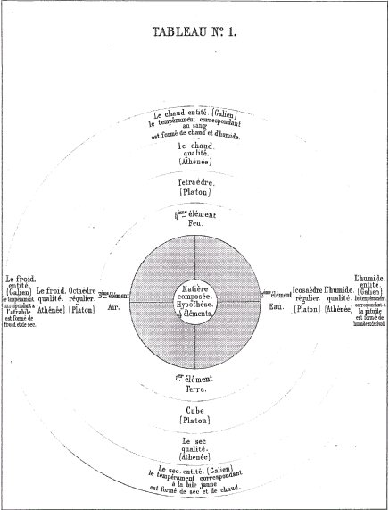
[Nous notons tout de suite cette forme en quasi « mandala » prise par Chevreul pour l'illustration de son propos. Nous verrons que cette figure n'est pas isolée. Des Quatre Éléments, voici ce qu'on peut, très sommairement dire :
1)- la Terre s'inscrit comme le 1er. Sa figure géométrique est le cube ou octaèdre régulier, ce qui sous entend la notion, non seulement de surface, mais aussi et surtout, de volume. En effet : l'eau s'écoule entre les doigts, l'Air était réputé impondérable, le Feu était brûlant et insaisissable. A la terre, Athénée attribue le substantif propre sec. Nous ne parlerons pas ici des propriétés organoleptiques que Galien attribue aux Éléments et qui ne servent pas directement notre propos. Le cube fut engendré à partir du triangle isocèle, soit 24 triangles isocèles. Chaque carré de base est constitué de 4 triangles, le sommet de chaque triangle constituant le centre du carré. - voir Timée, 55d - 56b
2)- l'Eau s'inscrit comme le 2ème. Sa figure est l'icosaèdre régulier. Pourquoi ? Autant la cube apparaît naturellement comme la figure de la terre, autant ici, la perception « sensitive » n'est pas d'une telle évidence. L'explication n'est pourtant pas si absconde qu'on le croirait, à première vue. Car autant le cube paraît être l'élément fixe par excellence, autant l'icosaèdre, formé de 120 triangles scalènes, déterminant eux-mêmes 20 triangles équilatéraux, apparaît comme la structure la plus mobile. Le substantif propre d'humide lui est évidemment attaché- voir Timée, 55 b
remarque 1: Si nous considérons ces deux éléments, il est évident qu'ils sont liés. Car, qu'est-ce que le sec, si ce n'est la privation d'eau ? - Or, les équations décrivant la transmutation des Quatre Éléments ne font intervenir que le feu, l'air et l'eau. La terre est hors d'oeuvre, si l'on peut dire. Ce n'est point si difficile à saisir : que l'on songe simplement que la terre est l'élément fixe par excellence. Elle est donc formée d'éléments - les 24 isocèles - rectangles dont 2 côtés sur 3 sont égaux. Les trois autres éléments ont comme caractère fondamental la mobilité ou la volatilité. Tel est le cas de l'eau qui ne peut se transformer en terre que sous des conditions particulières, inaccessibles à l'homme, à l'époque où vivait Platon. En revanche, l'eau est soit liquide, soit sous forme de vapeur où elle participe de l'air. Quant au feu, il n'est jamais isolé mais participe des trois autres éléments : on le trouve sous forme volatile s'il embrase un élément aérien de la terre - un arbre, par exemple. Notez qu'aérien est utilisé dans le sens d'un substantif propre. On le trouve encore sous forme ardente, lorsqu'il embrase de la terre qui se dégage des volcans : c'est la lave. Et la lave participe à la fois de l'eau - elle est mobile en fonction de sa température -, du feu - elle est ardente - et enfin de la terre, élément qu'elle finit par devenir en fonction de sa température. Ce caractère hybride de la lave est qu'elle se trouve sous la forme d'un état visqueux. C'est là un autre substantif propre que Chevreul ne nomme pas dans son Résumé de la matière. En latin, glutinosus conduit à glutinum : gomme, glu, mots évoqués par les alchimistes quand ils parlent de leur Mercure. Mais, glutinum, c'est aussi le « lien de l'amitié », ce qui ne sera pas indifférent à l'hermétiste. En grec, gliscroV se montre plus bavard : visqueux, gluant, voila la première acception. Ergoteur, chicaneur, voila bien le propre des Philosophes de la Tourbe, et l'une des épithètes du Mercure : qui s'attache à son bien, qui est sordide. Nous sommes menés ainsi à attacher l'idée de viscosité à celle de chicane spirituelle et sordide, en même temps que fort tenace. Ne retrouve-t-on pas, là encore, et indiqués de façon lumineuse, des substantifs propres du Mercure des philosophes. Et le sordide renvoie aussi à la corruption. Or, cet état n'est-il pas celui de l'âme dans la phase de putréfaction, lors du régime de Saturne, l'oeuvre au noir en somme ?
3)- l'Air est le 3ème élément. C'est l'octaèdre régulier qui le définit, c'est-à-dire l'union de 48 triangles scalènes en 8 triangles équilatéraux. C'est donc l'union aussi de deux pyramides ayant même base. C'est le froid qui lui est associé, autrement dit la privation de feu. Nous venons d'observer que la lave réunit temporairement sous une forme exprimée trois éléments sur quatre : l'Eau, le Feu et la Terre. L'air, avons-nous noté, n'intervient pas dans ce mélange si étrange et si naturel à la fois. Étrange pour nous, éternel pour la terre qui n'est formée sous cette forme visqueuse...L'air intervient, mais de façon passive. Sous la forme des exhalaisons d'Aristote d'abord - les mêmes que celles d'Elie de Beaumont. Puis par son action de tempérance : c'est au contact de l'Air que ce magma informe, ce chaos en miniature qu'est la lave, va peu à peu se transformer en Terre, au détriment des deux autres composantes, le Feu et l'Eau. Nous ferons remarquer que l'Eau est employée comme Élément primordial dans l'idée que nous avons développée ; car la lave ne contient pas d'eau et, bien sûr, sa liquidité, sa fluidité ne sont pas assurées par l'eau. Mais c'est, pour ainsi dire la Terre changée en Eau par le moyen du Feu.
4)- le Feu est le 4ème élément de cette tétralogie spirituelle. Il est symbolisé par la forme du tétraèdre, c'est-à-dire de 24 triangles scalènes, formant 4 triangles équilatéraux. Il a donc la forme d'un Air auquel il manque la moitié de lui-même. Ce n'est pas faux si l'on tient compte que le Feu génère - de façon générale - des produits qui privent l'Air de son principe vital. Rien n'est plus dangereux, par exemple, qu'un feu qui couve. Cela, bien sûr, Platon ne pouvait pas en avoir eu l'expérience directe mais il est certain que le Feu prive l'Air d'une partie de lui-même. Considéré comme un tétraèdre, un octaèdre diminué de sa moitié - sur tout ce qui concerne le feu, voir Timée, 55 b- d - Platon associe d'abord le feu-lumière au Dieu et permet ainsi, pour l'alchimiste, d'identifier le principe Âme dans son parcours aérien - cf. Festugière, voir section réincrudation - Que le chaud soit le substantif propre associé au Feu n'étonnera personne. Mais la glace brûle aussi - qui est de l'Eau transformée en Terre - ce que Platon ne pouvait savoir d'expérience. Et de fait, le froid associé à l'humide produit une Terre douée du pouvoir de brûler aussi sûrement qu'une flamme...
remarque 2 : Il nous reste à parler de la sphère centrale, censée être composée des Quatre Éléments. C'est la Matière idéalisée telle que la conçoit Chevreul. Pour l'alchimiste, elle peut représenter la Pierre, du moins en tenant compte de la version réformée de l'alchimie telle que nous la proposons. Formée d'un Corps, assimilé à la Terre ; d'une Âme, assimilée au Feu et d'un Esprit qui tient à la fois de l'Eau et de l'Air. Mais le propre de la Pierre est ceci. Que sa genèse n'a pu se faire que par perte de l'Esprit, par détriment progressif de celui-ci à mesure que le Corps ou, plutôt, que l'Âme incarnée, prenait à la fois masse et forme. Masse par accroissement résultant d'un processus d'accrétion. Forme par la nature de l'Âme, assimilée au Soufre rouge. cf. sections Mercure et Soufre pour de nécessaires explications -
conclusion : Au-delà de ces réflexions, il y a plus à noter. C'est la manière d'intercaler les éléments cristallins - permettant de « faire » la Pierre dans le schéma proposé par Chevreul. Nous ne pouvons ici que renvoyer aux nombreuses sections où ce sujet est développé. Nous ferons ici les remarques suivantes.
a)- que l'alun se place entre le cube et l'octaèdre, c'est-à-dire entre Terre et Air, entre sec et froid ;
b)- que le spinelle cristallise en forme d'octaèdre. De même que le rubis...;
c)- que le spath calcaire, la marcassite cristallisent en forme de tétraèdre : c'est affirmer leur intervention dans la préparation du feu secret. De même que le spath fusible, le spath étincelant, la pyrite arsenicale, le grès cristallisé dont nous avons parlé dans la section des blasons alchimiques -
d)- le grenat se distingue par sa forme de pyramides en doubles octaèdres, apparentées à l'icosaèdre. Cette forme cristalline s'apparente tout simplement à celle du cristal et montre la vraie nature de la Pierre philosophale. Invention géniale de la scolastique médiévale, rappelons que son invention permet de faire la synthèse entre les éléments issus de la cabale hermétique et d'autres éléments issus du christianisme dans ce qu'il a de plus conforme aux écritures les moins déformées - l'un des chapitres terminant la trilogie fulcanellienne se déroule à Edimbourg, au palais Holyrood, où trône un cadran solaire en forme d'icosaèdre. Est-il besoin d'en dire plus ? Il faut alors faire comparaître l'autorité scientifique, et ce, en la personne de Dufrenoy :
Il est cependant nécessaire d'entrer dans quelques détails sur le cristal désigné sous le nom d'icosaédre, fig. 40, parce qu'on n'en voit pas au premier abord la génération;Or, nous ferons remarquer ceci, dans le Timée :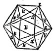
icosaèdre de Platon, fig. 40de plus, son nom pourrait induire en erreur: il indique, en effet, que ce cristal est composé de 10 faces; mais ces faces ne sont pas toutes égales, d'où il suit que ce n'est point l'icosaèdre régulier de la géométrie. Il est le résultat de la réunion de deux formes connues, savoir : de douze faces appartenant au dodécaèdre pentagonal, et de huit faces de l'octaèdre. Pour rendre cette disposition évidente, nous remarquerons que le dodécaèdre pentagonal, fig. 41, possède 20 angles solides, savoir :
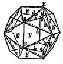
icosaèdre naturel, fig. 41douze E irréguliers et huit O réguliers, c'est-à-dire composés de trois angles plans égaux. Les trois arêtes b qui s'y réunissent sont en outre égales. Il en résulte que si l'on fait passer un plan par les trois angles E, il coupera les faces du dodécaèdre penlagonal suivant trois lignes EE égales entre elles, et formant les bases de triangles isocèles égaux EOE. Ce plan enlèvera donc une pyramide triangulaire, et donnera naissance à sa place à une face qui sera un triangle equilatéral. Si l'on fait la même opération sur chaque angle O, on ajoutera huit faces au solide, et comme il en contenait déjà douze, le cristal nouveau en contiendra vingt, savoir : douze anciennes appartenant au dodécaèdre pentagonal, et huit nouvelles représentant l'octaèdre régulier. Les huit nouvelles faces sont, comme nous venons de l'indiquer, des triangles équilatéraux égaux entre eux; les 12 anciennes sont des triangles isocèles, formés de deux arêtes d, communes avec les faces de l'octaèdre, et d'une arête appartenant au dodécaèdre pentagonal : cette arête, ainsi qu'on l'a déjà dit, est unique de son genre dans chaque pentagone du cristal primitif. Les différentes formes hémiédriques se combinent entre elles et donnent lieu à des cristaux composés analogues à ceux que nous venons d'indiquer; le cuivre gris en présente de nombreux exemples. Une remarque intéressante et dont on ne voit pas à priori la raison, c'est qu'on ne connaît pas de combinaisons d'une forme hémiédrique à faces parallèles avec une forme hémiédrique à faces inclinées. Les deux genres de cristaux hémiédriques se combinent au contraire avec des formes homoédriques.
« Il restait une seule construction, la cinquième ; le dieu s'en est servi pour l'univers, lorsqu'il y peignit des figures animales »
- cf. Timée, 55 b- d. Luc Brisson - dans la traduction du Timée, GF, 2001 - remarque qu'il ne peut s'agir que du dodécaèdre, le cinquième des polyèdres inscriptibles dans la sphère, et celui qui s'en rapproche le plus -p. 254, note 419 - Ne pourrait-on voir là des prémisses de la quintessence ? Voyons à présent le sentiment de Pierre Duhem sur Platon et sa cosmologie.
LA COSMOLOGIE DE PLATON
1 LES QUATRE ÉLÉMENTS ET LEURS IDÉES
Au moment d'aborder l'étude de la Cosmologie de Platon, on ne saurait se défendre d'un sentiment de crainte ; on est également effrayé et par la hauteur de la pensée qu'il s'agit d'interpréter et par les obscurités qui, trop souvent, en embrument les contours.Il montre l'idée que se faisait Platon des quatre éléments en leur imposant une forme géométrique qui avait quelque rapport avec la propriété caractéristique de chacun d'eux ; et cette forme, d'accord avec la simplicité de la matière, se prêtait merveilleusement à l'idée de la transmutation des éléments l'un dans l'autre. La partie du tableau, relative à Athénée et à Galien, est conforme à la médecine d'Hippocrate ; elle en indique l'origine, il ne peut y avoir de doute, les propriétés caractéristiques des quatre éléments se retrouvent dans les quatre humeurs d'Athénée, et Galien a fait de chacune d'elles une sorte d'entité binaire, en réunissant ensemble deux propriétés caractéristiques. <>5. Les personnes qui verront ce tableau sans connaître mes écrits sur l'alchimie, et qui auront d'ailleurs quelque idée juste de la composition chimique des corps, en se reportant aux temps antérieurs à l'époque alchimique, seront étonnées de la distinction faite par les alchimistes, lorsqu'ils ont parlé de la composition immédiate et de la composition élémentaire des corps, mais cette distinction n'avait pas pour conséquence des définitions précises de la combinaison et du simple mélange.
Platon a écrit un dialogue, le Timée, dont l'objet est d'exposer en détail la doctrine qu'il professait sur la composition du Monde ; mais des allusions à la Physique et à l'Astronomie se retrouvent en d'autres dialogues, au Phédon, dans la République, dans les Lois ; et, parfois, l'accord entre ces allusions et les enseignements du Timée ne se manifeste pas avec une entière évidence. Constamment inspirées par la plus haute Métaphysique, les théories physiques et astronomiques de Platon sont, en outre, liées de la manière la plus intime à des analogies géométriques et arithmétiques où se retrouvent les tendances de l'École pythagoricienne ; et ce symbolisme mathématique est singulièrement propre à faire hésiter les commentateurs modernes à qui la Philosophie pythagoricienne apparaît comme un mystère. En outre, la pensée de Platon s'exprime bien souvent sous la forme d'allégories dont les voiles poétiques laissent malaisément deviner les contours précis des propositions astronomiques. Telles sont les difficultés que présente l'interprétation des doctrines platoniciennes ; elles sont si grandes que le sens de tel passage du Timée n'a cessé, depuis le temps d'Aristote, de provoquer des débats entre les commentateurs. Donner, comme nous allons essayer de le faire, un exposé systématique et résumé de la Cosmologie platonicienne, c'est courir le très grand risque de fausser et de forcer la pensée du Maître en la fixant dans un cadre trop rigide et trop étroit ; nous espérons, toutefois, n'en pas défigurer à l'excès les lignes essentielles. C'est au Timée que nous demanderons ce que Platon enseignait au sujet des éléments. Dieu est bon ; sa bonté exclut tout sentiment d'envie ; cette bonté le pousse à créer toutes choses de telle sorte qu'elles lui ressemblent autant que possible. Il a donc voulu, à sa propre ressemblance, créer un être animé (zyon) qui comprit en lui tous les êtres animés et qui fût l'Univers. Comme Dieu, qui est l'être animé absolu, est unique, l'Univers, fait à l'image de Dieu, imite l'unité divine ; il n'y a donc ni une infinité de mondes ni plusieurs mondes ; il n'y a, il n'y aura jamais qu'un seul Monde. Ce Monde créé doit être de nature corporelle (swmatoeideV) ; il doit donc être visible et tangible. Or, en l'absence du feu, rien n'est visible ; rien n'est tangible qui ne soit solide, et sans terre, rien ne saurait être solide. Dieu a donc, au commencement, formé de feu et de terre le corps de l'Univers. Mais la beauté de l'Univers veut qu'entre ces deux éléments extrêmes, le feu et la terre, un lien soit établi. Quel sera ce lien ? Par quels intermédiaires sera-t-il assuré ? A cette question, Platon donnera une réponse que lui suggéreront des comparaisons géométriques. Entre deux grandeurs f et t, un intermédiaire est fourni par la moyenne proportionnelle x que définit, pour les algébristes modernes, l'égalité
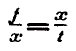
f et t étant donnés, x est déterminé par l'égalité
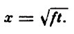
Cette égalité, les Grecs la concevaient et l'énonçaient sous forme géométrique : x est le côté du carré équivalent au rectangle dont f et t sont les côtés. La détermination de la longueur x est un problème de Géométrie plane dont la solution était assurément familière aux Pythagoriciens. Ce carré x2, équivalent au rectangle dont f et t sont les côtés, est l'intermédiaire entre les deux carrés f2, t2, qui ont respectivement f et t pour côtés. Si l'Univers était une figure plane sans épaisseur, il suffirait ainsi, entre le feu et la terre, d'un seul intermédiaire qui jouerait entre eux le rôle de la moyenne proportionnelle entre deux grandeurs ; mais l'Univers est un corps étendu selon les trois dimensions; ce n'est pas aux problèmes de Géométrie plane qu'il faut comparer les questions dont il est l'objet ; c'est parmi les problèmes relatifs aux solides qu'il faut chercher des analogies. Formons donc une question de Géométrie à trois dimensions qui soit comme l'extension du problème de la moyenne proportionnelle. Nous y parviendrons en cherchant, entre deux quantités données, f et t, deux autres quantités intermédiaires, a et e, telles que l'on ait
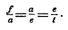
Ces deux quantités a et e seront données par les formules
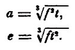
Énoncées, à la mode des Grecs, en langage géométrique, ces deux formules correspondent bien à deux problèmes solides : a est l'arête d'un cube équivalent à un prisme droit dont la hauteur est t et dont la base est un carré de côté f ; e est l'arête d'un cube dont la hauteur est f et dont la base est un carré de côté t ; ces deux cubes a3, e3 sont eux-mêmes intermédiaires entre les deux cubes f3, t3. C'est par analogie avec ce problème que Platon adjoint au feu et à la terre deux éléments intermédiaires, l'air et l'eau ; le feu, l'air, l'eau, la terre seront les uns à l'égard des autres ce que sont les quatre grandeurs f, a, e, t.
« C'est pour cette raison qu'entre l'air et la terre, Dieu a mis deux éléments intermédiaires ; il a établi entre eux, autant que faire se pouvait, un même rapport, afin que l'air soit à l'eau comme le feu est à l'air, et que l'eau soit à la terre comme l'air est à l'eau...» [...]
L'Univers est donc maintenant visible grâce au feu, tangible grâce à la terre, uni par le ministère des deux éléments intermédiaires, l'air et l'eau [Timée, 49]. Ces quatre éléments, d'ailleurs, nous les voyons constamment se transformer les uns dans les autres.
« Ce qu'en ce moment nous nommons eau se transforme par concrétion, nous le constatons, et devient terre et pierres ; lorsqu'au contraire, elle devient plus fluide et se dissocie, l'eau se transforme en vapeur et en air ; l'air brûlant devient du feu ; inversement, le feu comprimé et éteint reprend la forme d'air ; l'air resserré et condensé devient nuage et brouillard ; le nuage et le brouillard, rendus plus compacts, s'écoulent en eau, et de cette eau s'engendrent de nouveau de la terre et des pierres. » [on se souvient que ce passage a été cité in extenso par Chevreul lorsqu'il analyse les analogies entre la conception des Quatre éléments et la conception de l'idée alchimique.]
Sans cesse, l'espèce d'un élément se transforme en une autre espèce ; nous n'avons donc pas le droit, prenant une partie d'un élément, de dire c'est cela(touto) et point autre chose ; car le mot: cela implique, en ce que nous montrons, l'idée d'un objet persistant et stable ; pour exprimer cet état perpétuellement fuyant des éléments, nous devons user de mots qui désignent non pas la substance, mais la manière d'être ; nous ne devons pas dire c'est cela (touto), mais c'est de telle façon (toiouton), c'est tel que de l'eau, c'est tel que du feu.
[dans nos études alchimiques, nous avons fait très attention, et comme d'instinct, à ce fait que les alchimistes, dans leurs traités et leurs allégories parlaient de phénomènes transitoires, instables. C'est exactement comme cela que Duhem considère la « ronde » des éléments. ]
Ce sentiment de l'état de transformation perpétuelle où se trouvent les éléments, sentiment si vif que pour désigner le feu, l'air, l'eau et la terre, Platon ne voudrait plus user de substantifs, mais seulement de qualificatifs, ce sentiment, disons-nous, paraît inspiré de la philosophie d'Héraclite. Mais voici que, tout aussitôt, nous entendrons Timée développer des pensées qui semblent apparentées aux doctrines de Démocrite. Ce corps particulier [Timée, 51], que nous voyons et touchons, qui a maintenant l'aspect de l'eau, mais qui, tout à l'heure, sera de la terre ou de l'air, est-il la seule eau qui existe, ou bien au contraire, existe-t-il une eau en soi, de telle sorte que ce mot : eau désigne une réalité ?
« Y a-t-il quelque chose qui soit le feu lui-même et par soi [...] ? Toutes ces substances, dont nous parlons toujours comme si elles étaient en soi et par soi, sont-elles ainsi en réalité ? Ou bien, au contraire, les corps que nous voyons de nos yeux, que nous percevons par l'intermédiaire de notre corps, sont-ils les seules choses qui aient une telle réalité ? Faut-il penser que hors d'eux, rien n'existe d'aucune manière ? Est-ce à tort que nous disons de chacun d'eux qu'il est d'une certaine espèce (eidoV) que l'esprit conçoit ? Cette espèce n'est-elle rien d'autre qu'un mot ? »
[ces remarques de Duhem et ce passage de Platon sont en droit fil de ce qu'exprime Chevreul lorsqu'il sépare la synthèse mentale de l'analyse chimique. Voyez aussi ce qu'il dit à propos des « substantifs propres » qui ne désignent pas des objets réels, mais de pures virtualités spirituelles... Il y a de quoi faire réfléchir l'hermétiste et l'Artiste. Quel degré de réalité peut-on accorder à l'objet alchimique ? Aux matières qui le composent ? A sa préparation ? On conçoit sans peine l'évidence que de nombreux alchimistes ont été platoniciens ou néo-platoniciens.]
On a dit, parfois, que le problème du Réalisme et du Nominalisme avait été posé par Porphyre ; il est difficile, cependant, d'en imaginer un énoncé plus net et plus formel que celui que nous venons d'entendre de la bouche de Platon.
[le Timée conserve d'ailleurs toute sa modernité, quand on le confronte aux données de la science et surtout à l'expérience quantique. Peut-on concevoir un atome, une particule en tant que sujet ou en tant qu'objet ? En tant que substantif propre ou de corps ayant une réalité matérielle ?]
La réponse [Timée, 52], d'ailleurs, ne sera pas moins nette que la question :
« L'espèce existe, se comportant toujours de la même manière, exempte de toute génération et de toute corruption, absolument incapable de recevoir en elle aucune autre espèce, incapable aussi de pénétrer en une espèce différente ; elle ne peut être perçue ni par les yeux ni par aucun sens ; elle n'est accessible qu'à la contemplation intellectuelle. Il existe aussi une seconde chose que l'on désigne par le même nom, qui est faite à la ressemblance de l'eidoV ; cette chose tombe sous les sens, elle a commencement, elle est sans cesse en mouvement, elle vient occuper un certain lieu, puis elle en est chassée. »
[quel équivalent matériel, chimiquement palpable pour ainsi dire, peut-on trouver en alchimie de cette espèce à propriétés éternelles ? Il s'agit évidemment de la quintessence. Mais alors, il faut lui trouver son existence. Et c'est alors, nous l'avons déjà dit, que s'opère, en une synthèse géniale, les deux mouvements de l'hermétisme et du christianisme ; synthèse qui fut le fait des scolastiques médiévaux, inventeurs de la Pierre philosophale, dans les rangs desquels figurait certainement le pseudo-Lulle - ]
Ce mouvement continuel des choses concrètes qui sont susceptibles de génération et de corruption suppose une troisième réalité, l'espace, capable de fournir à ces choses le lieu que le mouvement leur fait occuper puis délaisser. Voyons donc ce que Platon enseignait au sujet de cet espace, et comparons-le à ce que ses prédécesseurs avaient dit du même sujet. [...]
[Duhem aborde ici, par la médiation de l'espace le concept de l'Être et du non Être. S'il s'agit d'un problème crucial de la philosophie, ce n'en est pas moins un problème tout spécial de l'alchimie. On l'a vu, le grand oeuvre passe par des époques troublées d'une instabilité importante, où rien n'est acquis, où le Rebis, tel un radeau que fait dériver la tempête, menace de se dissoudre - de couler - ou au contraire d'accréter prématurément - d'accoster ou de s'échouer -. C'est parler de la conduite du calorique : les expériences de synthèses minéralogiques d'Ebelmen, de Sainte Claire Deville, de Hautefeuille, de Frémy, etc. ont bien fait voir qu'à trop pousser le feu, on brûlait les fleurs, et qu'à laisser le froid s'installer prématurément, l'Artiste se trouvait frustré du résultat qu'il aurait dû obtenir. S'il était besoin, nous montrerions que la relation incessante aux fables, aux allégories, à la mythologie, sont les signes distinctifs, chez nos Artistes, de la recherche d'un espace que l'on croit vide ou d'une durée que l'on croit incommensurable. ]
A la vérité, si Platon ne reçoit pas en son Monde le vide des Atomistes, on ne peut pas dire non plus qu'il y mette ce que ces philosophes nommaient le plein, c'est-à-dire cette substance non définie, mais rigide et impénétrable, dont ils formaient les corps ; dans l'espace, dans la cwra, Platon n'admet d'autres corps réels que des assemblages de figures géométriques. Ce raisonnement hybride qu'est le raisonnement géométrique va, en effet, conduire Timée à figurer, dans l'espace, intermédiaire entre l'être et les apparences changeantes, les essences spécifiques du feu, de l'air, de l'eau et de la terre. La théorie des polyèdres réguliers lui découvrira ce que sont ces essences. Timée décrit [Timée, 54-56] d'abord les trois polyèdres réguliers dont les faces sont des triangles, savoir le tétraèdre, l'octaèdre et l'icosaèdre ; puis il définit le cube; il est trop géomètre, sans doute, pour ignorer qu'il existe un cinquième polyèdre régulier, le dodécaèdre pentagonal, et c'est à celui-ci qu'il fait allusion lorsqu'il dit :
« II existe une cinquième combinaison dont Dieu a usé pour dessiner l'Univers ». [c'est cette cinquième combinaison que les alchimistes font allusion quand ils parlent de la quintessence.]
Mais les quatre premiers polyèdres représentent seuls les essences spécifiques des éléments.
« A la terre, nous donnerons l'espèce cubique ; entre les quatre genres d'éléments, en effet, là terre est la plus immobile ; parmi les corps, elle est la plus apte à se fixer ; il est donc nécessaire qu'elle ait les bases les plus fermes ».
Or les bases carrées du cube assurent à la figure qui les présente une plus grande stabilité que les bases triangulaires des autres polyèdres. Au feu, au contraire, nous attribuerons le polyèdre qui est le plus mobile parce que ses bases sont les moins nombreuses, qui est le plus aigu, le plus apte à diviser et à couper, en un mot le tétraèdre. A l'air et à l'eau qui sont, par leur mobilité décroissante, les intermédiaires entre le feu et la terre, nous donnerons l'octaèdre et l'icosaèdre. [ce sont de pures considérations analogiques qui ont dicté Platon. Autant, on peut le suivre pour la représentation de la Terre, autant il nous semble que l'élément le plus mobile n'est pas représenté par la bonne figure. Par exemple, l'icosaèdre est plus mobile que l'octaèdre ; la logique ne paraît pas avoir été respectée absolument dans ces attributions ; cf. supra -]
Comment faut-il entendre cette correspondance entre les quatre éléments et les polyèdres réguliers ? Faut-il simplement regarder le cube, l'icosaèdre, l'octaèdre et le tétraèdre comme des symboles des essences spécifiques de la terre, de l'eau, de l'air et du feu ? Faut-il, au contraire, à l'imitation des sectateurs de Démocrite, imaginer que les corps élémentaires visibles et tangibles sont réellement des assemblages de telles particules polyédriques ? Que cette seconde opinion soit celle de Platon, il ne semble pas que l'on en puisse douter, lorsqu'on lit ce passage :
« II est donc juste et vraisemblable de regarder la figure du solide tétraédrique comme étant l'élément et la semence du feu, la seconde figure comme étant l'élément de l'air, la troisième comme étant l'élément de l'eau, [la figure cubique, enfin, comme étant l'élément de la terre]. Ces solides, il nous les faut concevoir si petits qu'il nous soit impossible de discerner isolément aucun d'eux en chaque espèce d'éléments ; mais lorsque ces solides se trouvent réunis en très grand nombre, nous voyons la masse qu'ils forment par leur ensemble. »
[ces considérations prendront de l'importance au XIXe siècle quand on s'avisera d'exprimer une image physique des molécules. Il semble que Marc-Antoine Gaudin puisse être considéré comme le premier pionnier de cette quête hardie de la forme des molécules. On n'a oublié, semble-t-il, que Gaudin avait prévu, avant Kékulé, que la formule du benzène devait être circulaire...Voyez la section du Soufre pour un approfondissement. Gaudin écrivait que : « l'essence de térébenthine, la benzine, etc.,...n'ont pas d'atome central ». Gaudin allait jusqu'à dire que la morphogénie atomique et la cristallogénie moléculaire n'étaient que des résultats de Mécanique céleste...Si cette hypothèse - que Gaudin avait l'air de considérer comme un axiome - est fausse, d'après les règles de la Mécanique quantique, seule valable pour les très petits objets, il n'en reste pas moins qu'à notre connaissance aucun scientifique postérieur au XVIIIe siècle n'ait allé aussi loin que Gaudin dans la relation aux polyèdres réguliers de Platon, repris ensuite par Kepler...cf. section Soufre -]
Comment cette opinion peut-elle être reçue sans contradiction ? Contre Leucippe et Démocrite, nous avons entendu Platon affirmer qu'il n'y avait pas de vide, que tout mouvement se produisait dans le plein absolu et prenait, partant, la forme tourbillonnaire ; il s'est expliqué, à cet égard, avec une netteté que Descartes ne surpassera pas.
Croyait-il donc que des icosaèdres, que des octaèdres pussent se juxtaposer les uns aux autres de manière à former, sans laisser entre eux aucun intervalle vide, des masses continues d'air ou d'eau ? Assurément, il était bien trop géomètre pour le penser.
Qu'en faut-il conclure ? Que les diverses parties de sa doctrine présentent entre elles d'irréductibles contradictions. Si l'on s'en devait étonner et scandaliser, nous rapprocherions de l'incohérence de Platon l'incohérence de Descartes. Descartes, lui aussi, admet qu'il n'existe pas de vide ; lui aussi, il admet des matières élémentaires dont chacune est formée de petits corps d'une figure déterminée ; s'est-il jamais demandé, cependant, comment les spires rigides de sa matière subtile pouvaient remplir, au point de ne laisser aucun espace vide, les interstices des sphères qui forment la matière grossière ? Il semble bien que Platon (et c'est encore une des analogies que l'on peut relever entre sa pensée et celle que concevra Descartes) n'ait mis en ces figures dont les éléments sont composés aucun principe réel et permanent autre que l'étendue même qu'elles occupent. C'est pourquoi Aristote nous dit fort justement [ARISTOTE, Physique, 1. IV, ch. II (IV)] que Platon, dans le Timée, identifie l'étendue occupée par un corps, la cwra, avec le principe qui subsiste en tous les changements de ce corps, avec ce qu'Aristote nomme ulh et ses commentateurs latins materia.« Platon donc, dans le Timée, dit que l'étendue et la matière sont une même chose.»
A une semblable identification entre l'étendue occupée, le lieu, et le principe de permanence qu'est la matière, Aristote s'opposera avec grand sens ;
« la matière, dira-t-il, ne se sépare pas de la chose réelle ; le lieu, au contraire, en peut être séparé ;[...] »
C'est par là, en effet, que le mouvement local est possible ; pour qu'il y ait mouvement local, il faut qu'une même matière quitte un lieu pour acquérir un autre lieu, donc que la matière soit autre chose que le lieu. Cette étendue dont Platon fait la matière permanente des éléments capables de changement et qu'il nomme, pour cette raison, « la nourrice de la génération, h genesiwV tiqenh », cette étendue, disons-nous, reçoit les formes diverses qui constituent le feu, l'air, l'eau et la terre ; chacune de ces formes (morjh) est, en même temps, source de puissance (dunamiV) ; dès lors, la cwra perd son homogénéité.
« Les puissances qui la remplissent ne sont plus partout semblables, elles ne s'équilibrent plus en tout point ; par conséquent, l'étendue elle-même n'est plus en équilibre nulle part ; ébranlée par chacune de ces puissances, elle oscille partout d'une manière irrégulière ; réciproquement, une fois mise en mouvement, elle ébranle à son tour chacune de ces formes. Toutes ces formes agitées en tout sens, elle les meut de telle manière qu'elles soient toujours de mieux en mieux distinguées les unes des autres, comme le sont les objets qui tombent, après avoir été secoués et vannés, sous les cribles ou sous les instruments propres à épurer le froment ; celles qui sont compactes et lourdes sont entraînées dans un sens, celles qui sont fluides et légères sont portées vers un autre lieu ; elle donne ainsi à chacune d'elles sa place [...] »
Par cette opération, semblable à celle qui, à l'aide du van, sépare le blé de la balle, les quatre éléments, mélangés d'abord et confondus en un désordre extrême, se séparent les uns des autres, et chacun d'eux vient occuper, dans le Monde, la région qui lui est propre.
II est clair qu'en ce passage, Platon ne laisse plus à la cora l'indifférence et l'inactivité qui conviendraient seules à l'espace vide ; peu à peu, il est arrivé à assimiler cette cwra à un fluide qui baigne les ligures polyédriques dont les éléments sont formés; ce fluide lui a paru susceptible de se mouvoir sous l'action de forces exercées par les éléments et, à son tour, de communiquer son mouvement aux corps qui sont plongés en lui. La notion d'espace géométrique, que le mot cwra exprimait tout d'abord, s'est graduellement matérialisée ; la cwra est devenue, premièrement, ce qu'il y a de permanent dans les éléments, l'analogue de la ulh d'Aristote ; elle est devenue, ensuite, le principe qui a ordonné le chaos primitif et qui, à chaque élément, a assigné son lieu naturel. On serait donc singulièrement déçu si l'on cherchait une suite logique rigoureuse en la théorie de l'espace et du lieu que le Timée nous propose. Cette théorie, cependant, mérite attention, car Platon, en la formulant, a cherché le premier, au dire d'Aristote, à résoudre le grand problème du lieu et du mouvement.« Tous déclarent que le lieu est quelque chose ; mais lui seul a tenté de dire ce qu'il était. »
Si nous reprenons les travaux de Marc-Antoine Gaudin sur la cristallogénie, on voit que le système cubique est généré par des octaèdres à base carrée. La Terre a donc, selon ce système, l'Air pour origine. Tel est le cas de l'alun qui cristallise en cubo-octaèdres, cf. section Fontenay et qui peut permettre de trouver une explication logique de la pierre cubique des Franc-Maçons. Nous ajoutons immédiatement que ce qui compte ici, c'est avant tout la molécule intégrante, qui détermine directement l'arrangement en cristaux. Ainsi trouve-t-on dans la nature des molécules quadrangulaires, plus en rapport avec l'élément Terre de Platon. Tel est le cas de l'épidote, et surtout du grenat. Ceci est d'autant plus remarquable que nous avons montré dans la section du Mercure de Nature, que le grenat était en quelque sorte une pierre de transition entre celles qui sont trop riches en éléments mercuriels, et les autres, qui sont les gemmes orientales. Pour d'autres considérations sur la transmutation des Éléments de Platon, et le rôle en particulier de la TERRE, voyez la section Cristallogénie - ]
6. Je maintiens toujours la proposition qu'on ne peut appeler la chimie la fille de l'alchimie ; car elle est en réalité la fille des opérations qu'on exécuta d'abord dans les ateliers d'arts chimiques, et plus tard dans les laboratoires mêmes des alchimistes, et non la fille des théories alchimiques qui appartiennent aux sciences occultes.
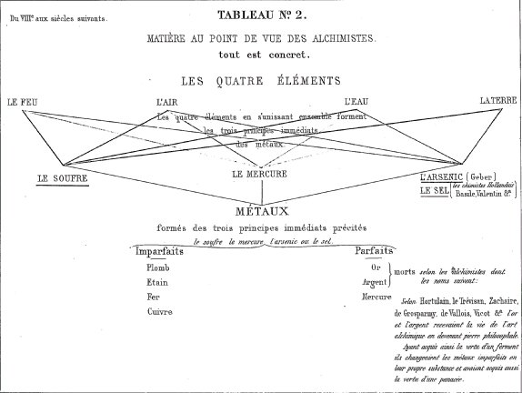
Sa légende est si claire, surtout avec le texte de l'ouvrage, que je n'ai rien à y ajouter. [ce tableau est limpide pour l'hermétiste et l'alchimiste. Dire que tout est concret va très au-delà de toutes les affirmations des Artistes ou des Adeptes qui n'ont eu de cesse d'accumuler dans leurs écrits les pièges, les chausse-trappes, etc. Nous voyons que des quatre éléments, conformément à la doctrine, l'Air est plus près de l'Eau, tandis que les plus éloignés sont la Terre et le Feu. Admirable résumé qui en dit long sur ce qu'avait pu comprendre Chevreul sur les alchimistes et qu'il n'a sans doute point dit ou voulu dire...Revoyez à cet égard le § 89 du Résumé de l'histoire de la Matière qui en dit plus long que la trilogie fulcanellienne ! Ce tableau montre évidemment que le Mercure participe de l'Air et de l'Eau. En douterions-nous ? Mais il faut s'étendre là-dessus. L'Eau pontique, c'est d'abord l'eau ignée ou le feu aqueux. Cette Eau est donc bien spéciale. Nous admettons qu'il est bien difficile de faire comprendre à un apprenti que l'Air des Sages est tout entier contenu dans cette Eau, qui est le véhicule du Soufre sublimé, c'est-à-dire de l'Âme. L'impétrant, ici, sera bien tenté de cesser la lecture et de considérer nos propos comme des égarements de la Raison. Peu importe...Fidèle à l'expérience A POSTERIORI de Chevreul, et de la méthode expérimentale de façon générale, les expériences de synthèse minérale sont là pour nous dire que le schéma hermétique n'est pas faux. Qu'on s'y égare un peu est le propre même de l'hermétisme et nous n'en disconviendrons pas. Qu'en revanche, on vienne nous dire qu'il s'agit d'une pure expérience de pensée...Nous révoquerons en doute cet avis. Considérez donc que l'Air des Sages est aussi leur Chaos, et qu'il véhicule en son sein à la fois la quintessence et la corruption. Quintessence, parce que le 5ème élément de Platon, ou dodécaèdre pentagonal, exprime symboliquement la chaux d'un métal dissous. Il est difficile d'exprimer ce qui est au-delà de la Raison, et qui devient davantage de l'ordre du sens et du sentiment, c'est-à-dire ce qui ressortit à un objet spirituel capable de provoquer un sentiment de l'ordre de l'esthétique. Et pourtant ! S'il le fallait, ce serait peut-être le seul et unique message que nous souhaiterions faire passer...L'idée alchimique est du ressort de l'art et de l'imaginaire. En elle s'expriment quantités de concepts qui n'ont sans doute pas livré encore tous leurs secrets. Mais en lesquels se reconnaissent des personnes, issues de conditions très différentes, qui affichent avant tout l'absence d'agressivité, la tolérance, le besoin du partage des connaissance,...en même temps d'ailleurs qu'une grande naïveté...Mais reprenons notre sujet. Chevreul, dans son tableau n°2, ne s'exprime que dans le cadre de l'alchimie orthodoxe, et non de l'alchimie réformée que nous proposons en forme d'alternative : la préparation des gemmes précieuses orientales, au premier rang desquels, peut-être, la topaze. La partie supérieure du tableau, où sont notés les Quatre Éléments, est bâti au nom des métaux et non à celui des minéraux. Glauber, pourtant, consacre des pages très intéressantes aux minéraux et se demande s'ils ne contiennent pas certains principes des métaux...C'est l'occasion de rappeler toutes les erreurs passées dues au fait, principal mais souvent négligé, que les métaux des Artistes n'étaient pas dans un grand état de pureté, et qu'ils étaient accompagnés d'une certaine partie de leur gangue minérale, plus fusibles qu'eux, de façon générale. Le seul exemple que nous citerons, mais il est éloquent, est celui du sulfate de baryte [16 occurrences sur le site - cf. recherche -]. Cela pourrait expliquer, comme on l'a montré dans d'autres sections, que les alchimistes auraient cru découvrir dans les métaux qu'ils soumettaient au creuset - à la Passion - le principe mercuriel, fusible par excellence, dont seul le serpent - et le dragon - permettent de rendre compte en tant que substantifs propres relatifs à la viscosité et à la fluidité alliées au caractère igné, résultats de la conjugaison des éléments Eau, Terre et Feu -. De ce tryptique, l'Air est exclu et ce n'est pas la seule fois où nous observons que l'Air semble être un Élément « anomal ». Ceci est une indication sur le fait que, des Quatre Éléments, l'Air semble constituer un mélange plus ou moins irréductible des trois autres. Que l'on prenne de l'Eau et du Feu : nous aurons de l'Air, sous la forme de vapeurs, c'est-à-dire d'Eau aérienne. Que l'on prenne de la Terre et du Feu : nous aurons une partie d'Air. Mais au lieu que l'Air résultant soit dû exclusivement à la sublimation de l'Eau, la nature de l'Air dépendra de la nature de la Terre. Si, par exemple, nous faisons réagir du nitre et de l'acide vitriolique, tout porte à croire que le Caput obtenu sera de l'Arcanum duplicatum, tandis que l'Air - qu'il ne faudra pas confondre avec le phlegme - sera d'une nature sui generis, en rapport avec les éléments élémentaires - nous ne disons pas immédiats au sens où l'entend Chevreul - de la Terre constituante. Dans le cas qui nous occupe, l'Air sera constitué d'eau forte - aqua fortis, esprit de nitre, acide nitrique en somme - qui se résoudra à son tour en Eau. Mais, c'est d'une Eau bien corrosive qu'il s'agit et non de l'Eau prise en tant que principe. Cette Eau dépend de la nature de l'une des Terres mises en contact mutuel - ici, l'acide vitriolique et le nitre - en l'occurrence, nous aurons formé l'acide nitrique à mesure que la température aura chuté. Et nous voila rendu à la cause première de la transformation spontanée de l'Elément Air en Élément Eau : la survenue de l'absence de chaleur, due au Feu, autrement dit le froid. Pour triviales que paraissent ces remarques, elles n'en ont pas moins une importance primordiale quant à la manière qu'avaient les premiers chimistes d'appréhender des phénomènes qui les rendaient, en l'absence du concept de corps simple tel que nous l'entendons, incompréhensibles tout autant, sans doute, que nous paraissent, à notre époque - à la fois si élevée et si corrompue - les raisonnements des anciens alchimistes, où même, comme Geber, des premiers chimistes...Il ressort de ces réflexions que le Feu peut constituer seulement un élément MOYEN permettant d'établir la liaison entre l'Eau et l'Air. En poursuivant notre exemple de l'action de l'acide vitriolique sur le nitre, il n'aura échappé à personne l'absence du quatrième élément : la Terre. Nous le trouvons cependant. Et cet Élément n'est autre que ce que les anciens chimistes avaient coutume de nommer le Caput mortuum. C'est-à-dire la tête morte. Et voila sous quelle forme - méprisée, rejetée, méprisée - se retrouve la terre, qui contient l'élément fondamental de la future Eau, et en conséquence, de l'Air des philosophes. Mais cet Air ne peut être obtenu sans la participation de l'Âme, substantif exprimé par le Feu. Comment alors, résoudre ce problème ? L'oeuvre requiert, par la médiation de l'Esprit, la réunion du Corps - Terre - et de l'Âme - Feu. Mais nous savons que le Feu n'est jamais qu'un agent. Revoyez ce que nous disons des deux gnomes de la cheminée alchimique du château de Terre-Neuve. Établissez la relation entre ces gnomes, l'agent et le patient. Il vous apparaîtra alors que l'agent ne fait jamais que véhiculer le patient. Or, cet agent étant forcément le Mercure, son rôle est de véhiculer le Soufre, ou plutôt devrions-nous dire les Soufres. En résumé : le Mercure sert à conjoindre les extrémités du vaisseau de nature : le Soufre - rouge - et le Sel - blanc-. A partir de là, voyez le tableau de Chevreul. Vous comprendrez d'autant plus aisément la place centrale occupée par les Éléments Eau et Air - principes du Mercure - et la place opposite du Soufre et du Sel, les deux matières qui résument le grand oeuvre, en ce qu'il consiste à les unir de manière radicale. Ce qui est l'objet, précisément, du Mercure. Dès lors, ne nous étonnons pas, si Chevreul cite les métaux comme formés des trois éléments - que l'on ne peut pas considérer comme principes immédiats - des MÉTAUX, en vertu même des postulats de Chevreul, c'est-à-dire de l'expérience A POSTERIORI considérée comme une fin en soi. En face des Quatre Éléments, qui déterminent les trois principes immédiats des métaux, nous trouvons, à la partie inférieure du tableau, les métaux réunis en imparfaits et en parfaits. Le mercure semble hors d'oeuvre mais il est du côté des métaux parfaits. Chevreul cite Hortulain - qui a écrit un commentaire de la Table d'Emeraude dont nous avons vu qu'il était imparfait, sinon trompeur, ayant confondu le mot mediatione avec le mot meditatione... Le Trévisan est ensuite cité ; rappelons qu'on lui doit des traités comme le Verbum dimissum, une Fontaine qui a quelque rapport avec le texte de Jean de Meung ; enfin le Songe verd qui rappelle des passages de l'île du Cosmopolite. Nous avons ensuite Zachaire qui a écrit sur les pierres précieuses - 26 occurrences : cf. section Cambriel et Artephius. Enfin, une place de choix est réservée au trio d'alchimistes de la région de Caen, Grosparmy, Valois et Vicot qui ont écrit des traités non imprimés, desquels Chevreul et Fulcanelli font grand cas - cf. Philalèthe, VI et Nouvelle Lumière Chymique - L'idée qui régit ce tableau est que l'or ou l'argent agissent comme des ferments disposés dans la pierre philosophale pour agir à l'instar de la pâte de levain. Il faut donc que ces métaux aient été disposés selon l'art dans la matière qui compose le Lapis philosophorum. Ce tableau est un résumé absolument complet de l'alchimie, envisagée de manière orthodoxe.]
<>7. Ce tableau retrace un fait bien remarquable, puisqu'il est la restitution à son véritable auteur d'une œuvre qui, depuis plus de cinq siècles, a été attribuée à Alphonse X, roi de Castille et de Léon, le promoteur des tables astronomiques dites Alphonsines, que dressèrent par son ordre des Juifs de Tolède. [Chevreul se réfère aux articles qu'il a écrits dans le Journal des Savants - cf. section Artephius - au sujet de la Clavis Majori Sapientiae, restituée à Artephius... alchimiste qui n'a sans doute pas existé.]
8. Certes, il n'est pas sans intérêt de faire remarquer que le livre Artephii antiquissimi philosophi de arte occulta, atque lapide philosophorum liber secretus, imprimé avec une traduction française, en 1612, réimprimé en 1689 et 1682, et qui l'a été de nouveau dans l'édition de la Bibliothèque chimique de 1741 [il s'agit du recueil de traités édité par Jean Maugin de Richebourg, cf. bibliographie en alchimie], est un traité pratique, tandis que le tableau n° 3 résume un livre du même auteur qui a pour titre Artefii clavis maioris sapientiae. Ce livre, tout théorique, se trouve dans le tome IV du Theatrum chemicum, p. 198, sous le titre Artefii incipit liber qui clavis maioris sapientiae dicitur, et dans le tome V du même recueil, page 766, sous le titre de Sapientissimi Arabum philosophi, Alphonsi régis Castellae, etc., liber philosophiae occultioris (praecipus metallorum) profundissimus cui titulum fuit clavis sapientiae. La preuve de la légèreté avec laquelle on a écrit l'histoire de la chimie se trouve dans la courte préface du traité où on lit que l'ouvrage même fut traduit de l'arabe en langue castillane par un écuyer du roi Alphonse.
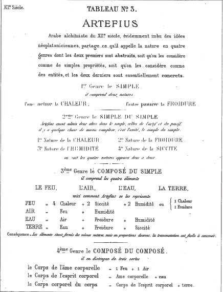
S'il existe un écrit alchimique propre à démontrer la disposition que le néo-platonisme donnait à ses partisans d'adopter les chimères alchimiques, c'est celui d'Artefius dont ce tableau résume la théorie. Il comprend deux genres abstraits et deux genres concrets.
- Premier genre : le simple. Deux natures, l'une active, l'autre passive.
- Deuxième genre : le simple du simple. II compte quatre natures, qui sont les propriétés caractéristiques des quatre éléments ; il les dispose deux à deux, conformément à l'idée d activité et de passivité :- Première nature, chaleur;
- Deuxième nature, froidure;
- Troisième nature, humidité;
- Quatrième nature, sécheresse.
On peut considérer les natures passives, relativement aux natures actives, comme des natures affectées du signe -, tandis que les actives le sont du signe +.
- Premier genre concret : Il nous montre les quatre éléments matériels formés chacun des quatre propriétés caractéristiques des quatre éléments, mais en proportions diverses, et, dès lors, ils sont transmuables les uns dans les autres. [il faut ici distinguer ce qui revient à Platon et à Artéphius. Platon n'envisageait que la transmutation des trois Eléments : AIR, EAU et FEU. La TERRE était, pour ainsi dire, hors d'oeuvre. Voyez la section Cristallogénie où ce point est directement abordé - ]
- Deuxième genre concret : Nous montre le composé du composé.On voit que la conception de l'écrit d'Artefius : Clavis majoris sapientiae, est bien digne de l'Analyse et synthèse alchimiques.
[Nous renvoyons le lecteur à la série d'articles publiés par Chevreul en 1868, consacrés au Traité alchimique intitulé Artefii Clavis Majoris Sapientiae ; cf. section Artephius. Il manquait dans cette section le troisième article et la 1ère suite du troisième article. Nous les avons donné depuis et le lecteur pourra s'y référer s'il veut approfondir les doctrines d'Artephius, selon le schéma platonicien . Notons enfin que ce traité a été traduit par le trio des alchimistes de Flers qui ont été évoqués supra - Grosparmy, Valois, Vicot - et que le Trésor des Trésors de Nicolas Grosparmy serait une traduction assez grossière de cet Artefii Clavis Majoris Sapientiae. Ce tableau complète ce que dit Platon, dans son Timée, sur les Quatre Éléments. Il permet, en effet, de dépasser les équations décrivant la transmutation du feu, de l'air et de l'eau. Artephius prend en compte un élément actif, la chaleur, et un autre, passif, la froidure qui n'est, somme toute, que l'absence de chaleur. C'est le genre SIMPLE. Ce n'est pas si irrationnel que cela, tant s'en faut. Et on peut même dire que la chaleur -Feu - est l'élément qui, des Quatre, en mobilise les Trois autres. Le second genre est dit SIMPLE du SIMPLE. Là, il faut admettre quatre natures : la chaleur, la froidure, l'humidité et la siccité. Là, les choses ne sont pas aussi simples que pour le 1er genre. Considérons ce qui se passe dans les entrailles de la terre. N'est-il pas évident que la lave, que nous voyons surgir du cratère des volcans, combine la chaleur et une certaine forme d'humidité. Car c'est, selon Artephius, la seule façon logique d'obtenir une substance qui se déplace à l'instar de l'eau. Nous voyons apparaître là les limitations évidentes du système d'Artephius. Ce système, toutefois, a le mérite de prendre en compte - mais Artephius s'en doutait-il ? - le caractère dynamique d'un processus. Reprenons notre exemple de la lave : chaleur + forme d'humidité. Puis la lave se durcit : froidure + siccité. Mais l'élément froidure est en trop : la redondance apparaît. Car la froidure n'est jamais que la privation de la chaleur. C'est d'ailleurs ce qu'exprime l'épithète « passive » attribuée à ce substantif propre. On voit aussi de quelle espèce d'humidité relève la lave : c'est le SENS qui sert de jugement et non la RAISON. La contradiction du système d'Artephius semble donc proclamée. Pourtant, le 3ème genre permet de mieux comprendre le système d'Artephius. Que le Feu soit tributaire de la chaleur et de la siccité, quoi de plus logique. Mais qu'on y voit apparaître l'humidité, opposée à la chaleur, cela peut rendre perplexe. Nullement. Car le Feu exercé sur l'Eau produit de la vapeur, c'est-à-dire de l'Air. Il existe donc 1 part d'Air dans le Feu, ce qui est conforme aux équations de Platon - ou qui dérivent du système de Platon. Prenons à présent l'Air : Feu + humidité, quoi de plus logique. Pour l'Eau, le substantif froidure est en trop. Il aurait suffi de lier l'Air et l'humidité. L'élément qui pose le problème le plus important est la Terre : Mixte d'Eau, de froidure et de siccité. C'est pourtant ainsi que nous avons qualifié la lave refroidie, qui se transforme en Terre. Les équations d'Artephius sont donc intéressantes, en ce qu'elles mettent en jeu - mais de façon sans doute inconsciente chez Artephius - un élément dynamique, c'est-à-dire le temps. Il est remarquable qu'on voit ainsi jouer - mais, nous le répétons, de façon sans doute inconsciente, le temps, dans le schéma conceptuel proposé par Artephius -. Ces réflexions sont développées en dehors, cela est nécessaire à dire, du fait qu'Artéphius n'a sans doute jamais existé, tout comme Fulcanelli et tant d'autres, et qu'il s'agit donc de textes pseudépigraphes dont, en somme, nous n'avons pas la plus petite idée de celui qui a écrit, in manu propria, le texte ! Cet élément temporel, qui ressort, à l'évidence, de nombreux traités d'alchimie, n'a jamais été pris en compte par les érudits qui professaient sur les doctrines de l'Art sacré. Nous en venons maintenant à ce que, trivialement, nous serions en droit d'appeler « la cerise sur le gâteau » : le 4ème genre ou le Composé des Composés. D'où il vient que le Corps de l'âme corporelle est bâti à partir d'une mesure de Feu et d'Air. Or, qu'est-ce que l'âme corporelle ? Le Soufre rouge, réincrudé et « accrété » au Soufre blanc. C'est donc l'âme incarnée. Cette opération nécessite une sublimation préalable puis une réincrudation : dans un premier temps, le Soufre rouge doit être dissous, il est donc sublimé, c'est-à-dire incorporé à l'Esprit. Puis, dans un second temps, l'âme se corporifie, lors de la diminution subséquente de la température. Quoi d'étonnant de trouver alors l'équation : corps de l'âme corporelle = Feu + Air. L'Air est le moteur de la sublimation et le Feu est l'Âme essentielle. Poursuivons. Le Corps de l'Esprit corporel. Si l'on tient compte de nos observations, il ne peut pas échapper que l'Esprit corporel est précisément la portion terreuse de l'Air des Sages, c'est-à-dire le Soufre rouge, l'Âme en un mot. Le Corps de l'Esprit Corporel ne peut donc désigner autre chose que le « bouton de retour » dont parle si fréquemment E. Canseliet. Notez que ce bouton de retour est appelé « coeur » par les hermétistes. Il reste à envisager le Corps corporel du Corps. Selon Artephius, il serait composé du Corps de l'Esprit corporel, que l'on vient d'examiner et de la Terre. Saluons ici la logique d'Artephius : car son système permet donc d'unir le Soufre rouge - le bouton de retour - et la Terre, ou soufre blanc. Loin de constituer une tautologie, le Corps corporel du Corps exprime donc le résultat de l'union des deux Soufres : le résultat de la réincrudation des Soufres corporifiés, autrement dit la pierre gemme. Ainsi, pour abscons que puissent paraître le 4ème genre - Composé des composés - il n'en exprime pas moins la logique du système des Quatre éléments, poussée en ces derniers retranchements. Le mot gemme a lui seul pourrait valoir un traité. Nous poserons seulement quelques jalons : la gemme renvoie à oruktoV, c'est-à-dire « tiré de la terre, minéral ». Désireux de pousser la logique du système jusqu'au bout, nous trouvons le terme orussw : creuser, fouiller, i.e. caver littéralement ; une autre occurrence renvoie à : faire sortir en creusant, expression qu'un hermétiste reprendrait sans sourciller. L'alchimiste, en effet, fait sortir de la Terre, d'abord, des substances séparées, formant une manière de chaos-matière ; c'est à l'Art que revient la méthode d'assembler ces matières pour en former la Pierre. Et cette méthode, les alchimistes, depuis longtemps, l'ont synthétisée en un mot, ou devrions-nous dire, un acronyme : V.I.T.R.I.O.L. dont le sens exact est donné dans ces sections : 1, 2, 3, 4, 5, - Enfin, une autre occurrence renvoie à « percer un isthme ». Voit-on le rapport avec l'isthme de Suez ? Le rapport avec Ferdinand de Lesseps - 1, 2, 3, 4, ? Avec Berthelot, présent lors de l'inauguration ? Faut-il en dire plus, et observer le frontispice du Mystère des Cathédrales avec, en arrière-fond, un sphinx blanc - 1, 2, ...? Nous avons eu l'occasion, à de multiples reprises, de nous attarder sur ces arcanes qui, semble-t-il, n'ont intéressé personne. Tant est importante la distance qui sépare le Verbe de l'Esprit.]
<>9. Ce tableau, en montrant, sur six catégories des êtres et des qualités définies par van Helmont, les quatre premières tracées en caractères rouges, témoigne de l'importance qu'il attachait aux conceptions abstraites relativement au concret. La cinquième catégorie ne comprenant que deux matières, l'air et l'eau,dénuées de toute activité, et van Helmont ne reconnaissant qu'à l'eau la propriété de constituer des corps doués de propriétés spéciales, non en s'unissant à des corps pondérables, mais à des êtres qu'il appelait archées, a imaginé un système auquel je ne connais pas d'analogue.
10. Selon lui, l'air n'était point élastique; s'il paraissait l'être, c'est qu'il
obéissait à un être imaginaire qu'il appelait magnale. Ce défaut d'élasticité, ou plutôt cette passivité, s'opposait à ce qu'il le reconnût comme gaz; car pour lui le gaz, esprit sauvage, ne pouvait, à l'instar de l'air, être coercé dans des vaisseaux. Si van Helmont. croyait à la puissance de l'alchimie, la transmutation d'un métal imparfait en or ne pouvait se faire, selon lui, qu'en substituant l'archée spécifique de l'or à celle du plomb.
<> 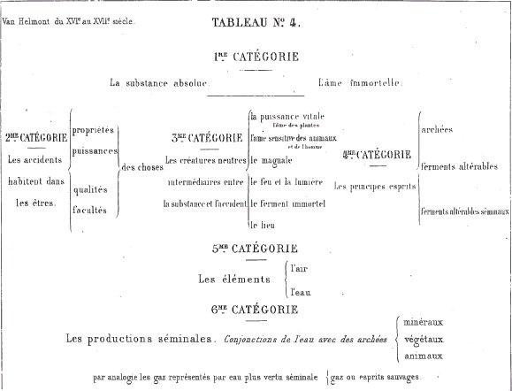
TABLEAU N°4.Il est, je crois, la peinture la plus fidèle qu'on puisse se faire du monde de van Helmont; je ne mets pas en doute qu'il ne facilite beacoup au lecteur la conception du chapitre consacré à ce savantdans le Résumé de l'histoire de la matière. [ce tableau intéresse moins l'étudiant en alchimie. Il retiendra avec intérêt, néanmoins, la notion de magnale, équivalent pour Van Helmont de la notion d'élasticité de l'air - La substance absolue, l'équivalent de la quintessence, est l'âme immortelle. Deux éléments sont retenus par Van Helmont, l'Eau et l'Air, contre un seul - l'Eau - pour Becher. On retrouve les éléments qui forment le Mercure. ]
11. S'il semble exister une ressemblance entre le système de Stahl et celui de van Helmont relativement à l'air, qui, suivant les deux auteurs, n'est susceptible de s'unir à aucun corps, il y a cependant cette différence que Stahl, en mettant l'air au nombre des corps, lui refuse une nature spécifique, car, selon lui, c'est un mélange de l'éther, fluide éminemment rare, répandu dans l'espace, de vapeur d'eau et de toutes les vapeurs qui s'exhalent de la terre. En fait de matière pesante, il ne compte que l'eau et les terres. L'éther mis en mouvement vibratoire nous affecte comme lumière et chaleur, et lui-même, en communiquant le mouvement qui l'anime aux particules matérielles, les rend lumineuses et chaudes. Si le mouvement est suffisamment rapide, et l'air absent, le mouvement des particules ne produit qu'une simple incandescence. Qu'est donc la combustion ? c'est la séparation du phlogistique, terre douée d'une extrême mobilité, séparée par le choc de l'air contre le combustible, et le phlogistique, mis ainsi en mouvement, produit à la fois chaleur et lumière. La combustion pour Stahl est donc une analyse à ce point de vue, une simplification de la matière, à savoir la séparation du phlogistique de la matière combustible à laquelle il était uni. Le mouvement, dit Stahl, est l'instrument de la chimie.
<>12. La théorie de la combustion de Lavoisier est l'inverse de celle de Stahl; mais, pour en apprécier exactement la valeur respective, il faut distinguer, après la combustion, des phénomènes permanents dans la matière brûlée d'avec les phénomènes passagers sensibles seulement pendant l'acte de la combustion. Les phénomènes permanents, résultant de l'union de deux corps d'un comburant, le gaz oxygène de l'atmosphère avec un corps combustible, et expliqués par Lavoisier, sont la base de la chimie moderne, ou, pour prévenir toute équivoque, c'est la base de la véritable chimie. La théorie de la combustion de Lavoisier est donc l'inverse de la première théorie chimique, celle de Stahl, puisqu'elle repose sur la synthèse et non sur l'analyse, comme celle du chimiste allemand. A Lavoisier la gloire d'avoir substitué à l'idée des quatre éléments appartenant à l'a priori le plus absolu, l'idée que l'on se fait aujourd'hui des corps simples dans la méthode à posteriori expérimentale.
13. La théorie de la combustion de Lavoisier perd sa supériorité sur la théorie de Stahl, quand il s'agit des phénomènes passagers, la manifestation de la chaleur et de la lumière ; car les idées nouvelles relatives à la manifestation du feu attribuée à un mouvement vibratoire, soit de l'éther, soit des particules matérielles, et non à des corps dits impondérables devenus libres par l'union de l'oxygène avec le corps combustible, sont réellement celles de Stahl.
<> 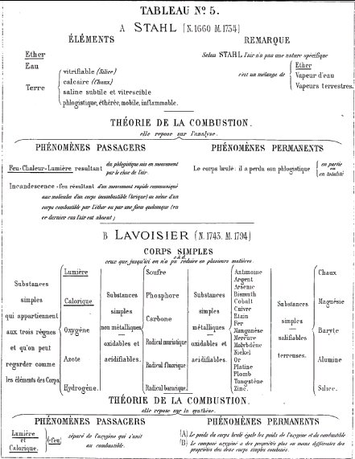
TABLEAU N° 5.Loin de revenir sur la manière dont j'ai envisagé dans ce tableau l'hypothèse du phlogistique avec la théorie de la combustion, base de la première théorie chimique posée par Lavoisier, pour rapprocher le mérite des deux hommes au point de vue de la chimie, j'y reviens avec une intention contraire, fruit de mes dernières études. Je l'avoue, si cette phrase de l'alinéa 13 :
« La théorie de la combustion de Lavoisier perd sa supériorité sur la théorie de Stahl »,
était à composer de nouveau, je ne l'écrirais pas en ces termes, quoiqu'il soit vrai que, dans les idées actuelles, l'explication de lalumière et de la chaleur attribuées à un mouvement de l'éther et de particules matérielles compte plus de partisans que l'opinion contraire, qui recourt à la mise en liberté de deux fluides impondérables, le calorique et le lumique. Ma restriction porte uniquement sur le mérite que mes paroles écrites semblent attribuer à Stahl ; évidemment, alors, je n'ai pas pris en considération que la base des idées de Stahl était cartésienne, et que son phlogistique représentait parfaitement la matière subtile, comme on peut le voir en lisant les pages 553, 554 et 555 de mon examen de l'ouvrage de Rouvière sur la Fermentation et la nature du feu. J'ai donc commis la faute de ne pas avoir pris en considération le rapprochement que je fais ici entre l'hypothèse de Stahl et le cartésianisme. Dans tous les cas, la distinction des phénomènes chimiques en passagers et permanents a des avantages incontestables, et la remarque précédente a pour conséquence de relever le mérite de Lavoisier, quoi qu'on puisse penser de la manière dont il a expliqué ledégagement de la chaleur et de la lumière, quand on tient compte de l'heureuse idée qu'il a eue de mesurer par le calorimètre la chaleur dégagée dans les actions chimiques. [la théorie du phlogistique de Stahl marque un progrès par rapport à celle de Van Helmont et à celle de Becher, en dépit de ses insuffisances. Stahl ne retient, comme Becher que l'élément Eau des Quatre Éléments de Platon. Il substitue à la terre mercurielle de Becher une terre mixte, calcaire et vitrescible. Et il ajoute le phlogistique qui est l'expression d'un processus dynamique résultant de substances mises en présence. Stahl a compris que l'Air résultait d'un mélange complexe : l'éther, la vapeur d'eau et des vapeurs terrestres. Nous ne dirons rien de Lavoisier, non pas que nous n'ayons rien à dire sur lui, mais que la révolution conceptuelle qu'il provoque devient incompatible avec les idées hermétiques, et partant, avec l'idée alchimique. Nous n'en avons pas moins parlé dans la section de l'humide radical métallique, quand on évoque les agents de liaison entre les planètes et les déités qui en forment la base.]
<>14. Lorsque Platon, après avoir montré les changements subis par la terre, l'eau, l'air et le feu, ou, en termes plus exacts, les modifications qu'ils semblent éprouver en plusieurs cas, leur assigna des formes géométriques diverses en harmonie avec l'état d'agrégation de leurs particules, il y avait là une idée philosophique tellement élevée, qu'il a fallu arriver au dix-neuvième siècle pour la bien comprendre. Incontestablement, si le cube attribué à la terre, l'icosaèdre régulier à l'eau, l'octaèdre régulier à l'air, et le tétraèdre au feu, étaient de pures émanations à priori, il y avait là une intuition précise de ce que devait être l'espèce chimique, lorsqu'on chercherait à réduire la matière en des types exactement définis par l'ensemble de leurs propriétés respectives ; et c'est après avoir lu l'écrit de Dolomieu [1, 2,] sur l'espèce minéralogique qui est identique à l'espèce chimique sans avoir jamais perdu de vue cette partie des sciences naturelles, enfin c'est après avoir relu le Timée dans la traduction de M. H. Martin que, sans hésitation, je consacre le tableau 6 représentant l'espèce chimique conformément à la manière dont Platon envisage selon moi les quatre éléments.
15. Et c'est parce que Platon ne connaissait et ne pouvait connaître que des propriétés physiques dans le concret que je représente l'espèce par un cercle dont la plus grande partie, teintée de jaune, est divisée par des lignes censées parties du centre et représentant chacune une propriété physique que l'on peut reconnaître à l'espèce. Si toutes les propriétés physiques étaient connues, chacune d'elles serait indiquée par une ligne, et cette ligne touchant aux deux courbes circulaires signifierait que chaque propriété serait parfaitement connue.
<> <>16. Ce tableau représente la part qui revient à Newton dans l'histoire de la notion précise de l'espèce chimique. Après avoir ramené la mécanique céleste à la loi de la gravitation, il attribua à une force pareillement attractive, qui manifeste ses effets au contact apparent des corps, les phénomènes du ressort de la chimie. Sans prétendre définir la nature de cette force, il y rattacha la cause qui unit les molécules matérielles, de manière à en faire des agrégats solides, lorsqu'elles sont homogènes, et des combinaisons fort différentes des mélanges, lorsqu'elles sont de nature diverse.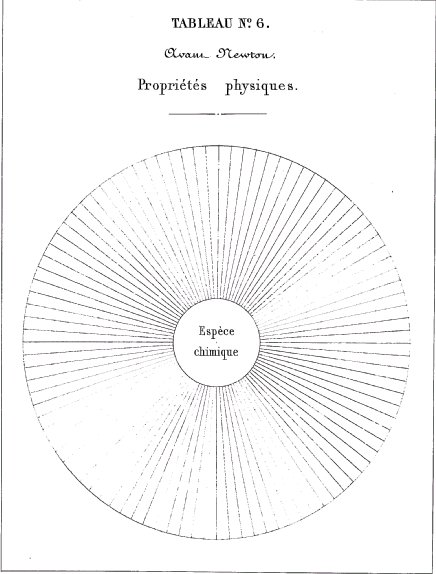
TABLEAU N°6
Si les alchimistes, comme Geber, par exemple, n'avaient pas confondu dans leur esprit la combinaison et le mélange, aucun d'eux, avant Newton, n'avait parlé d'une force attractive capable de confondre deux corps différents en un seul, doué de propriétés fort différentes de celles des corps unis. Les couleurs différentes représentent donc les propriétés physiques et les propriétés chimiques. [sur Newton, cf. Newton et l'idée A POSTERIORI - mss alchimiques de Newton]
17. Après Newton, l'histoire ne peut omettre les noms de Bergmann, de Romé de Lisle et surtout de Haüy pour des travaux qui donnèrent à la propriété physique de la forme cristalline une importance que le temps a confirmée.
18. Haüy rendit un service immense en ramenant les formes si variées des cristaux, naturels et artificiels, à six formes qu'il appela primitives, et en montrant que, dans le groupement des formes diverses d'une même espèce, la composition chimique de tous les cristaux, supposés purs, était définie et identique pour toutes les formes. Si cet accord parut troublé pour certaines espèces différentes de propriétés,quoique d'une même composition élémentaire, on expliqua plus tard le désaccord par le fait de l'isomérie, principe d'après lequel on sait que les mêmes éléments unis en même proportion peuvent donner des composés doués de propriétés différentes. Il en fut de même pour des cristaux de même forme, présentant des compositions différentes, et souvent indéfinies quant aux proportions; cette anomalie disparut encore devant le principe de l'isomorphisme dû à Mitscherlich. On sut que des corps d'une même forme pouvaient cristalliser en s'unissant en proportion indéfinie. Enfin rappelons l'écrit de Dolomieu, encore si remarquable, sur l'espèce minéralogique, qui aujourd'hui se confond avec l'espèce chimique.
<> <>19. Le tableau n° 8 représente l'idée que je me fais depuis 1824 de l'espèce chimique, en distinguant trois groupes de propriétés ; les propriétés physiques, les propriétés chimiques et les propriétés organoleptiques ainsi nommées parce que nous ne pouvons nous en représenter l'existence à l'exclusion de celle de nos propres organes. Si nous entrons toujours en relation avec le monde extérieur par nos organes, il existe une grande différence entre les propriétés organoleptiques, d'une part, et, d'une autre part, les propriétés physiques et les propriétés chimiques, car, contrairement aux premières, nous reconnaissons que les propriétés physiques et les propriétés chimiques existent hors de nous indépendamment des organes qui nous mettent en relation avec elles.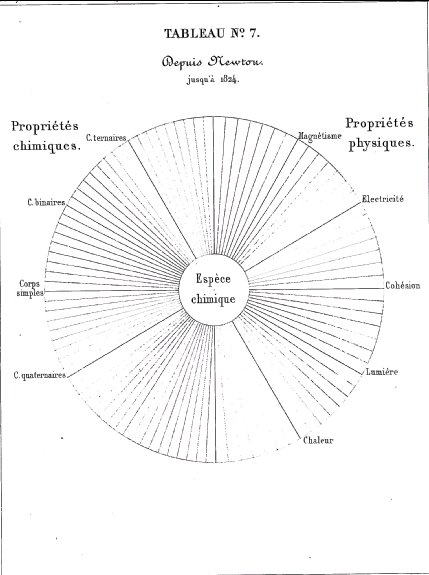
TABLEAU N°7
20. Prenons le sucre pour exemple. Mis dans la bouche, il nous affecte de la saveur douce que nous nommons sucrée ; mais évidemment si le sucre est cause, la saveur, effet, est en nous, et nous ne la rattachons au sucre que parce que celui-ci la fait naître.
21. Si la vue et le toucher nous donnent l'idée d'un pain de sucre et celle des cristaux de sucre candi, nous attribuons à un corps, le sucre, ces propriétés physiques, la forme limitée et l'impénétrabilité, que nous jugeons exister hors de nous et être absolument indépendantes de notre personne.<>
22. Si nous mettons un morceau de sucre dans l'eau, il disparaît en vertu d'une propriété chimique, et là encore nous jugeons que cette propriété appartient à l'eau et au sucre, et est absolument indépendante de nous. Il est donc impossible de rejeter la distinction que j'ai faite des propriétés organoleptiques d'avec les propriétés physiques et les propriétés chimiques.
23. La figure représente les propriétés organoleptiques comme convergeant au moi; elle ne nomme que les propriétés qui sont perçues par les cinq sens, mais les autres lignes représentent celles que nous connaissons et qui sont relatives à des effets produits par des aliments, des purgatifs, des toxiques, etc., des venins, des miasmes, des virus. Enfin, par extension, les propriétés organoleptiques sont étendues à tous les êtres vivants, végétaux compris.
<> 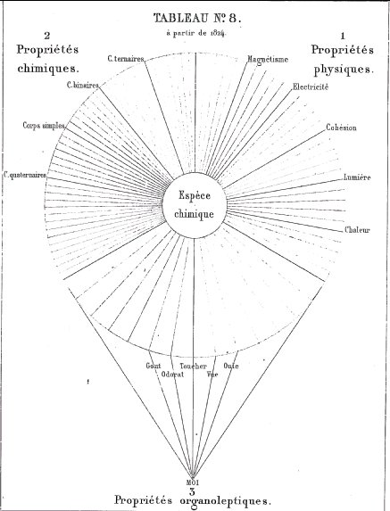
TABLEAU N°8
24. J'ai représenté, dans les tableaux n° 6, 7, 8, par des lignes égales, les propriétés de l'espèce chimique. Ces lignes représentent ce que serait chaque propriété particulière, qui est censée y correspondre, si elle était parfaitement connue; mais, dans l'impossibilité d'affirmer que nous en connaissons une seule parfaitement, j'ai imaginé la figure 9 dont aucune ligne n'atteignant la circonférence du cercle, indique l'opinion dont je parle; j'ajoute que les longueurs respectives de toutes ces lignes sont absolument arbitraires.
<> 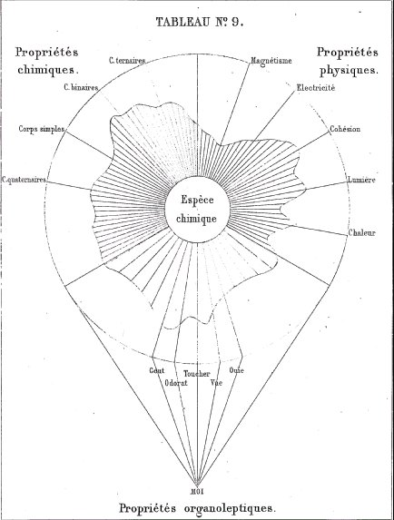
TABLEAU N°9<>25. Le tableau n° 10 se compose de 25 zones dont les extrêmes ne présentent qu'une seule couleur, le n° 1 du jaune et le n° 28 du bleu; les n°2 jusqu'au n°12 inclusivement renferment des quantités croissantes de bleu, et les n° 24 et 14 inclusivement, des quantités croissantes de jaune ; enfin le n° 13 présente le vert proprement dit. Quelle est la signification de ce tableau ? Elle est fort simple. Supposons que l'écran blanc laisse apercevoir les huit zones extrêmes, 1, 2, 3 et 4 et 25, 24, 23 et 22, l'œil les réunira sans peine en deux groupes extrêmes. Eh bien, je dis que si l'on se reporte à l'époque où l'on a distingué des objets quelconques analogues mais en très-petit nombre, cette distinction était facile comme le montrent les deux groupes extrêmes où dominent dans l'un le jaune et dans l'autre le bleu.
Mais, avec le temps, des objets intermédiaires ont été reconnus et venant se placer entre les n°4 et 22, comme le montrent les 17 zones que l'on découvre en enlevant l'écran, on voit alors l'impossibilité de maintenir la distinction que l'on avait faite antérieurement des huit extrêmes en deux groupes. La conception de ce tableau une fois acquise, on en fera des applications fréquentes, non-seulement aux sciences, mais encore à des distinctions de toute sorte concernant des lois, des règlements, des classifications d'objets quelconques.
26. Prenons dans les sciences quelques exemples applicables aux propriétés corrélatives, telles que les propriétés électro-positive et électro-négative, les propriétés comburante et combustible, les propriétés acide et alcaline.
27. Tant qu'on n'a connu que quelques corps non conducteurs de l'électricité, électrisables par le frottement, il a été facile de les distinguer en électro-positifs ou vitreux, et en électro-négatifs ou résineux. Mais le nombre des corps électriques s'étant multiplié, la distinction absolue de deux groupes isolés a cessé d'être, et dès lors on a rangé ces corps dans une série de termes corrélatifs, de manière qu'encommençant par celui qui était toujours électro-positif, on a placé en second celui qui était électro-négatif avec le premier et électro-positif avec tous les autres. Voici l'exemple de corps électrisables par le frottement :
<>Évidemment la distinction absolue des corps non conducteurs et électriques par le frottement en deux groupes distincts n'est plus possible après cet exemple, et la disposition en série que je présente a le double avantage de la clarté et de la vérité. 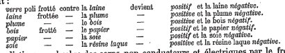
28. Un second exemple est applicable à la chimie, il est impossible de faire deux groupes distincts de corps simples comburants ou électro-négatifs et de corps simples combustibles ou électro-positifs, ainsi que deux groupes distincts de corps composés acides ou électro-négatifs et de corps composés alcalins ou électro-positifs, comme on l'a fait autrefois, et il est bon de remarquer que c'est dès 1829 que, dans mon cours de la chimie appliquée à la teinture, j'ai donné les exemples des 28 zones que le tableau n° 10 reproduit.
29. Les exemples précédents suffisent, je pense, pour montrer l'impossibilité de maintenir des distinctions d'objets quelconques, remontant à l'époque première où ces distinctions furent faites, alors qu'on ne connaissait qu'un très-petit nombre d'objets. Non seulement les premières distinctions faites par les naturalistes en donnent des preuves incontestables, mais dans les sciences économiques et dans toutes les circonstances les plus ordinaires de la vie, il est cent exemples que je pourrais citer auxquels le tableau n°10 est applicable.
<> 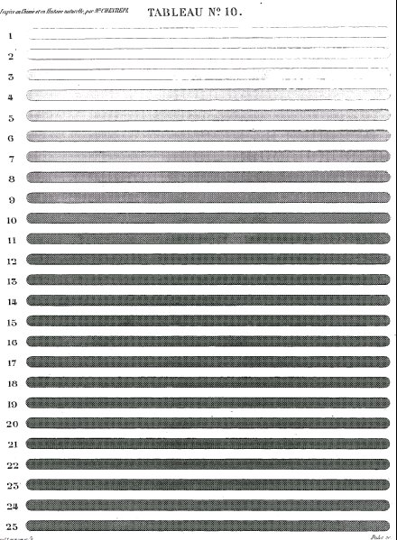
TABLEAU N°10
LÉGENDE DES TABLEAUX N° 11 ET N° 11 bis.
30. J'ai dit avoir publié en 1824 (19) la distinction des propriétés organoleptiques d'avec les propriétés physiques et les propriétés chimiques. Le tableau n° 8 représentant la distinction des propriétés de l'espèce chimique en trois groupes, dont chacun est coloré par une des trois couleurs simples des artistes, exprime les différences, telles que je les ai conçues ; mais des études faites depuis, et surtout dans ces derniers temps, m'ont donné à penser que si la distinction des trois groupes ne cessera jamais d'être maintenue par les raisons énoncées plus haut (19, 20, 21, 22), les études ultérieures établiront entre elles des rapprochements de plus en plus grands, et c'est cette idée de l'influence des travaux futurs qui m'a fait représenter, dans les tableaux n° 11 et n° 11 bis, les premiers groupes de propriétés non plus avec les trois couleurs primitives, mais toutes les trois par trois nuances résultant de mélanges différents de rouge et de jaune.
31. Le tableau n° 11 bis représente les trois groupes de propriétés ainsi modifiées dans leurs couleurs respectives, conformément à la conception du tableau n° 9 représentant l'espèce chimique eu égard à l'état actuel de la connaissance imparfaite et incomplète que nous avons de ses propriétés.
[Nous n'avons pas repris ces planches, car l'édition numérisée de Gallica est en noir et blanc. Le lecteur voudra donc bien se référer aux planches n° 8 et n° 9 -]
TABLEAUX N° 6, 7, 8, 9, 10, 11 ET 11 bis.
Ces tableaux, consacrés à l'espèce chimique, montrent à l'œil ce quelle a été en différents temps.
<>- Le tableau n° 7 expose l'observation fondamentale due au génie de Newton, en 1717, des effets d'une force attractive inhérenteaux parties les plus ténues de la matière et qu'il considère comme cause des actions chimiques ; — et je répète qu'il est de toute justice de citer, immédiatement après Newton, Etienne-François Geoffroy.
- Les philosophes grecs, en n'admettant qu'une matière, ne pouvaient concevoir ni les propriétés chimiques, ni les propriétés organoleptiques, et je n'oserais dire qu'ils avaient une idée nette des propriétés physiques. Évidemment, selon moi, les actions mécaniques auxquels les corps étaient exposés, et qu'ils subissaient, s'opposaient à ce que les philosophes grecs eussent des idées précises des effets que les corps recevaient des agents que nous nommons chaleur, lumière, électricité, magnétisme, etc.; je ne voudrais donc pas que la couleur jaune que présente le tableau n° 6 pût donner à penser que j'attribue aux philosophes grecs des idées des propriétés physiques telles que nous les définissons aujourd'hui.
- Le tableau n° 8 représente les propriétés organoleptiques qui ont été généralement adoptées depuis 1824.Les trois tableaux n° 6, 7, 8, sont insuffisants pour donner sans commentaire au lecteur l'idée réelle que j'attache à l'espèce chimique, telle que je me la représente à l'époque actuelle, sous les rapports que je vais énumérer.
<>- 1° De la connaissance de tous les attributs ou propriétés que comprend chacun des trois groupes de propriétés ; et, par la raison que tous les jours de nouvelles propriétés peuvent être reconnues, il faut concevoir, pour maintenir le tableau d'une espèce au degré du progrès, l'intercalation de nouveaux rayons entre ceux qui existent.
- 2° Les rayons représentant les propriétés connues aujourd'hui dans les trois tableaux, et partant d'un point de la petite circonférence inscrite à la circonférence extérieure, indiquent que la propriété que représente chaque rayon serait parfaitement connue, mais il n'est pas une seule propriété que l'on soit fondé à considérer comme telle dans la réalité ; dès lors il faut se représenter l'espèce par le tableau n° 9, où chaque propriété est représentée par des fragments de rayons, et aucun ne partant de la circonférence intérieure et n'arrivant à la circonférence extérieure, on voit par la courbe sinueuse limitant les fragments de rayons combien les connaissances actuelles que nous avons d'une seule propriété laissent à désirer.- 3° Nous avons représenté les trois groupes de propriétés par les trois couleurs simples afin de les montrer de la manière la plusdistincte ; et c'est bien ainsi que, dans toutes les circonstances oùnous sentons le besoin de distinguer entre eux des objets quelconques d'une même catégorie, nous les distinguons par des différences plus ou moins marquées ; mais, avec le temps, de nouveaux objetssont reconnus et viennent se placer entre ceux que l'on distinguait aisément alors qu'on ne leur connaissait pas d'intermédiaire. Eh bien, voilà ce que le tableau n° 10 met en évidence, tel qu'il seprésente dans l'atlas, avec un papier épais qui ne laisse apercevoir que les quatre zones jaunes, n° 1, 2, 3, 4 et les quatre zones bleues : 25, 24, 23, 22, qu'on distingue sans peine en deux groupes.
<>Voilà ce que sont bien nos connaissances à l'origine d'études que nous faisons d'objets quelconques, soit d'espèces chimiques, soitde plantes, soit d'animaux, etc., etc. Les observations se multiplient, et bientôt des objets intermédiaires viennent se placer entre les zones jaunes et les zones bleues, et alors vous pouvez avoir une série commençant par le jaune pur n° 1, et finissant par le bleu pur n° 25. En levant le papier écran qui isolait les quatre zones extrêmes, vous en découvrez dix-sept nouvelles formant une série continue, de sorte que vous comptez, en partant du jaune n°1 jusqu'à la treizième zone, représentée par du vert, onze zones qui contiennent de moins en moins de jaune en prenant du bleu, et, en partant du bleu, vous allez à la zone verte n° 13, avec des zones qui, en perdant graduellement du bleu, prennent de plus en plus du jaune. La conséquence de cet état de choses, c'est que vous ne pouvez plus distinguer avec certitude, comme vous le faisiez en commençant, deux groupes de zones, l'un comprenant les jaunes, l'autre les bleues. La légende du tableau n° 10 mentionne de nombreuses applications qu'il a dans les sciences naturelles, et encore dans bien des choses étrangères à ces sciences. L'application que j'en fais maintenant est relative à l'usage des trois couleurs simples, pour montrer les trois groupes de propriétés de l'espèce chimique. En les représentant par les couleurs simples, les propriétés se montrent trop différentes; évidemment, dès à présent, il est des propriétés intermédiaires entre deux groupes qui conduisent à prévoir que plus on étudiera et plus l'on découvrira de propriétés tendant à effacer les extrêmes. Afin de rendre cet état futur de choses facile à comprendre, j'ai imaginé le tableau n° 11, où chaque groupe de propriétés est représenté par une même couleur binaire, mais la couleur de chaque groupe diffère par la proportion des deux couleurs simples mélangées. Enfin le tableau n° 11 bis représente l'état d'une espèce dont la connaissance est incomplète.
LÉGENDE DES TABLEAUX N° 12 ET N° 13.
32. Le chapitre II de mes Considérations générales sur l'analyse organique, publiées en 1824, témoigne des études comparatives que j'ai faites du mot espèce envisagé dans toutes les sciences où il est usité ; l'examen de l'ampélographie [science de la vigne] du comte Odart, auquel je me livrai en 1846, témoigne de l'attention que j'ai donnée à l'espèce étudiée dans les êtres vivants ; dès lors, aucun de mes lecteurs ne doit s'étonner que les tableaux dont il me reste à parler présentent des vues conformes à celles que résument les tableaux précédents, consacrés à retracer l'histoire de la matière et celle de l'espèce chimique.
<> <>33. Le tableau n° 12 représente une zone circulaire radiée, dont une raie correspond à un attribut de l'espace vivante. La connaissance de l'espèce se compose de tous les attributs; mais, ne les connaissant pas tous, il faut admettre avant tout que l'avenir en intercalera entre celles que nous connaissons aujourd'hui.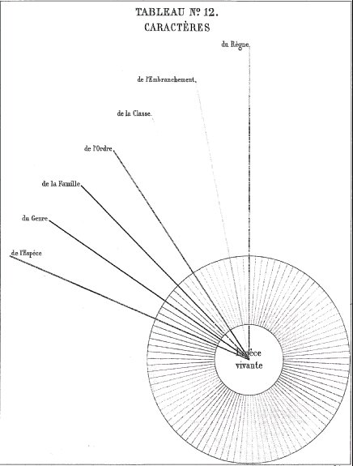
TABLEAU N° 12
34. Si les plantes ont été étudiées d'abord relativement à leurs usages, et principalement aux vertus qu'on leur attribuait pour la guérison des maladies, plus tard elles l'ont été par le naturaliste dans leurs rapports mutuels avec l'intention de les classer en groupes de divers ordres. Les classifications ont varié selon l'importance que l'on accordait à certains attributs plutôt qu'à d'autres. Sans me livrer à aucune discussion, il me suffit de comparer, au moyen des tableaux n° 12 et 13, l'étude de l'espèce végétale, Convolvulus arvensis, faite par Linné dans son système sexuel avec l'étude faite par un naturaliste désireux de connaître tout l'ensemble des attributs de la plante correspondant aux raies radiées de la zone circulaire.
<> 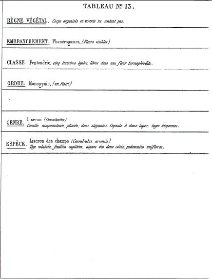
TABLEAU N° 1335. Le tableau n° 12 représente 7 lignes de diverses couleurs, rouge, orangée, jaune, verte, bleue, violette et grise, partant du centre du cercle représentant l'espèce. Ces lignes correspondent chacune à un ordre de caractères; la ligne rouge représente en général le règne, et les autres couleurs, disposées comme elles le sont dans le spectre solaire, correspondent à des groupes de plus en plus restreints par le nombre des espèces qu'ils comprennent respectivement : l'orangé correspond à l'embranchement, le jaune à la classe, le vert à l'ordre, le bleu à la famille, le violet au genre, le gris enfin à l'espèce. Chacune de ces lignes correspond aux lignes horizontales du tableau n° 13 de mêmes couleurs, et au-dessus de ces lignes horizontales on lit les caractères des divers ordres de classification. Conséquemment, chacune des lignes ou couleurs du tableau n° 12 représente les attributs qu'on lit sur chacune des lignes horizontales du tableau n° 13. De là on tire la conséquence que l'histoire du Convolvulus arvensis, dans le système sexuel de Linné, ne comprend que les attributs énoncés dans le tableau n° 13. Or, si ces attributs suffisent pour distinguer le Convolvulus arvensis de toutes autres espèces, il s'en faut de beaucoup que leur connaissance suffise pour représenter tous les faits dont l'histoire de cette plante se compose.
LÉGENDE DES TABLEAUX N° 12 ET N° 14.
36. Ces tableaux tout à fait analogues aux deux précédents concernent une espèce animale. J'ai pris l'Ursus maritimus, tel qu'il est défini dans le système de Linné; les 12 et 13, et 12 et 14, sont muets sur la famille, parce qu'en effet ce groupe n'est pas compris dans la classification de Linné.
<> <>37. Les tableaux n° 12 et 14 donnent lieu aux mêmes remarques que les tableaux n° 12 et 13, relativement au petit nombre des attributs énoncés par Linné, comparé au grand nombre des attributs que représente la zone circulaire à raies radiées.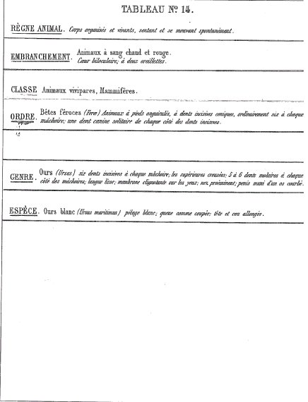
TABLEAU N° 14
38. Je crois ajouter quelque chose à l'intérêt du sujet en reproduisant des passages du discours que je prononçai à Montbard, lors de l'inauguration de la statue de Buffon, le 8 d'octobre 1868. Ils montreront, j'espère, que, dès cette époque, j'exposai par le langage des idées que ces tableaux rendent sensibles à la vue.« ... La vocation de Linné pour l'histoire naturelle se révéla par la passion des plantes, et bientôt elle embrassa du même amour les deux autres règnes de la nature. Le but de la vie intellectuelle du grand naturaliste suédois fut non pas de DÉCRIRE tous les produits de la nature, mais de DÉFINIR chaque espèce par une phrase brève et pittoresque, autant que possible, et d'ordonner l'ensemble des espèces de chaque règne en groupes de divers ordres, de manière qu'en descendant successivement du règne à l'espèce on arrive au NOM de celle-ci, lequel, par un heureux artifice, se compose d'un nom générique et d'un nom spécifique. Tel a été Linné. Buffon ne lui ressemble en rien... Appelé à l'intendance du Jardin du roi (1739), il considéra comme un devoir impérieux de cette position de consacrer désormais tous ses efforts aux progrès de l'histoire naturelle. Ainsi, Messieurs, riche de la fortune de son père, d'intelligence et de science acquise, Buffon devint naturaliste par devoir à l'âge de trente-deux ans, et le pauvre Linné l'était devenu par vocation dès l'âge de dix ans. Lorsque Buffon voulut être naturaliste, la science lui apparut sous un aspect bien différent qu'à Linné ; il était dans la puissance de l'âge et d'un esprit fortifié par des études aussi profondes que variées ; maître de ses loisirs, il les consacrait à l'étude ; s'il sentait sa force, s'il savait que la vue de l'esprit est rapide, il connaissait et l'insuffisance de l'improvisation pour une production littéraire vraiment sérieuse et la nécessité du temps dans la coordination de toute idée nouvelle avec d'autres. La mauvaise organisation de ses yeux lui interdisant d'ailleurs l'observation microscopique prolongée et toute dissection soignée, il pouvait consacrer à la méditation un temps dont, avec des organes meilleurs, il eût pu disposer autrement. Mais on s'abuserait étrangement de croire que ce temps ne servit à Buffon qu'à l'arrangement de paroles harmonieuses pour le plaisir de l'oreille ; sans doute son style brillant, coloré, et quelquefois pompeux, a contribué à la gloire du naturaliste à l'égard des gens du monde et des simples lettrés ; mais ce style a bien d'autres mérites pour les juges capables d'en apprécier toute la valeur, parce que, en réalité, il est un produit du concours des qualités les plus rares et les plus variées de l'érudit, du philosophe, du savant et d'un lettré doué à la fois du goût le plus pur et de l'éloquence la plus élevée. C'est donc grâce au temps que Buffon a pu fondre ensemble ces éléments divers en un tout unique, d'une forme si pure et si belle, qu'elle empêche certains lecteurs d'apercevoir la richesse des éléments précieux qui la constituent. La distinction des éléments du style de Buffon explique, avec quelques moments de réflexion, la différence extrême qui distingue l'oeuvre du naturaliste français de l'œuvre de Linné. Le talent d'observer la nature est commun aux deux naturalistes, mais la différence des deux œuvres est grande. Le Système de la nature réduit la connaissance de chaque espèce d'un règne à un petit nombre d'attributs dont l'ensemble n'appartient qu'à elle. Cet ensemble est le caractère de l'espèce ; il est commun à tous les individus qu'elle comprend. Le genre, l'ordre, la classe, sont chacun caractérisés d'une manière analogue. La conséquence est donc de trouver le nom d'une espèce, en constatant dans un individu de cette espèce le caractère de la classe, le caractère de l'ordre, le caractère du genre, enfin le caractère de l'espèce. Le Système de la nature ne comprend donc essentiellement qu'un très-petit nombre des qualités, des attributs, appartenant à un être vivant. Dès lors, on peut dire que cet être n'est que définie c'est-à-dire distingué de tout autre analogue.
<>Ces citations, d'un écrit presque improvisé, tant la composition en fut rapide, ne paraîtront pas superflues au lecteur, s'il voit en elles un exemple de l'accord d'opinions, remontant déjà à quelques années écoulées, avec des généralités dont la publication m'occupe aujourd'hui. C'est l'accord de ces généralités avec les recherches spéciales et les méditations de toute ma vie scientifique qui me donne l'espoir d'échapper au reproche de témérité qu'un juge sévère m'adresserait peut-être s'il n'apercevait pas l'intimité du lien qui rattache au passé mes publications actuelles.
Le but que s'est proposé Buffon est absolument différent. Sa prétention n'est pas de définir l'être vivant, mais bien de le décrire. On conçoit dès lors le reproche d'imperfection qu'il adresse aux méthodes de classification en général et au Système de la nature de Linné en particulier, puisqu'elles se bornent, dit-il, à faire connaître une seule partie de l'être. Buffon aspire sinon à tout décrire, du moins à faire connaître les attributs, les rapports les pins importants, les plus intéressants des êtres vivants. S'agit-il de l'étude des animaux, il les étudie au point de vue de la forme et de leur structure intérieure ; et c'est pour cela qu'il associe Daubenton à ses travaux, il veut connaître les fonctions des organes, les mœurs et les instincts...»
En relisant les légendes des deux tableaux doubles n° 12 et 13, et n° 13 et 14, je n'ai rien à y changer. Ils montrent comment le système de Linné satisfait au besoin de l'étudiant en histoire naturelle, désireux de trouver le nom d'une espèce de plante ou d'animal qu'il ne connaît pas. Mais en même temps qu'il voit le petit nombre d'attributs nécessaires à connaître pour arriver à son but, il apprécie en même temps combien il en resterait à étudier pour connaître à fond l'espèce dont il cherche le nom. Ces derniers attributs, représentés par des rayons noirs, libres de toute ligne colorée, sont loin de représenter tous les attributs de l'espèce. Le système de Linné correspond à ce qu'on nomme une méthode artificielle. La méthode naturelle en diffère par l'étude d'attributs bien plus nombreux que ceux mis en œuvre par le système de Linné; dès lors, pour que les tableaux représentassent les attributs à connaître, il faudrait un nombre de lignes colorées plus considérable que celles que les tableaux offrent à la vue. Je ferai remarquer que les lignes rayonnées noires des deux tableaux simples n° 12représentent assez bien l'espèce vivante telle que Buffon la concevait, car ces lignes représentent l'ensemble des attributs. Je ne puis mieux terminer cet atlas qu'en énonçant la conclusion finale à laquelle m'a conduit l'étude comparative de l'espèce chimique complexe et de l'espèce vivante. Afin que l'expression de ma pensée ne donne lieu à aucune interprétation inexacte, je rappellerai que l'histoire d'une espèce chimique complexe comprend deux genres de phénomènes : a) des phénomènes passagers, et b) des phénomènes permanents.
<>a) Phénomènes passagers. — Lorsqu'il existe une affinité énergique entre les corps qui s'unissent, il y a entre autres phénomènes un vif dégagement de chaleur et de lumière, etc., etc.
b) Phénomènes permanents. — Ce sont les propriétés résultant de l'union des corps ; elles diffèrent tout à fait de celles qu'ils possédaient avant la combinaison.Toutes les espèces chimiques que nous connaissons sont représentées par une molécule, mais si ténue, qu'elle échappe à tous nos instruments microscopiques, de sorte qu'une espèce chimique perceptible à nos sens est un agrégat de molécules homogènes toutesidentiques. En définitive, un agrégat de 'molécules perceptibles à nos sens comprend donc autant d'individus qu'il compte de molécules. La différence est grande entre l'espèce chimique et l'espèce vivante, soit un végétal, soit un animal. En effet, l'un et l'autre sont immédiatement formés d'un certain nombre d'espèces chimiques complexes ; chacune est dite principe immédiat de l'être vivant dont elle fait partie. On distingue des principes immédiats dits inorganiques, parce que le monde inorganique nous les présente ; tels sont l'eau, le phosphate de chaux, le sous-carbonate de chaux, etc., etc. ; Et des principes immédiats dits organiques, parce que leurs éléments ont été unis sous l'influence de la vie ; exemples le sucre, l'amidon. Une première différence qu'une espèce chimique pure de toute autre présente à l'observateur, c'est l'unité d'individualité dans tous les échantillons d'agrégat de molécules uniques; elles sont identiques dans les mêmes conditions ; et, de l'identité de propriétés des échantillons d'une même espèce, nous concluons l'identité des molécules constituant l'échantillon, molécules, je le répète, trop ténues pour être perceptibles à nos sens. Nous avons distingué dans l'histoire d'une espèce chimique complexe deux genres de phénomènes ; des phénomènes passagers, d'autant plus frappants que les corps qui entrent en combinaison ont une affinité mutuelle plus forte, et ces phénomènes n'ont que peu de durée quand on ne les rend pas continus, ainsi que cela arrive dans l'éclairage en rendant la combustion successive. Les individus vivants d'une même espèce, plante ou animal, n'ont jamais entre eux la ressemblance existant entre les molécules chimiques agrégées d'échantillons purs portant un nom unique, celui de l'espèce à laquelle ils appartiennent. Les individus vivants d'une même espèce peuvent différer entre eux par le sexe, l'âge, la taille, etc., etc., etc.; conséquemment un individu ne représente jamais l'espèce à l'égal d'une molécule chimique d'une espèce déterminée. Considérons maintenant un individu vivant, et choisissons une espèce d'une organisation plutôt supérieure qu'inférieure, soit qu'ils'agisse d'un animal ou même d'une plante ; considérons-le sous lerapport de la distinction des phénomènes passagers d'avec les phénomènes permanents, et nous verrons des différences bien grandesentre l'espèce chimique et l'espèce vivante. Aussitôt que le germe fécondé d'une graine ou d'un œuf commence à vivre, il va nous présenter une série de phénomènes passagers jusqu'à un dernier terme qui est celui de sa vie. Il pourra y avoir des interruptions dans les phénomènes, résultat de causes diverses telles que les saisons, par exemple, et de causes accidentelles ; mais, tant que la vie ne sera pas détruite, les phénomènes passagers apparaîtront de nouveau. L'être vivant étant mort, s'il reste exposé à l'action libre des eaux naturelles et de l'atmosphère, ses parties se dissocieront, et ses principes immédiats organiques tendront à faire retour au monde minéral en se transformant en composés binaires plus stables que ces principes, s'ils ne se dégagent pas à l'état de corps simples comme cela arrive à l'azote. La différence est donc grande, d'une part, entre l'espèce chimique
représentée, soit idéalement par la molécule, soit réellement par un agrégat homogène de molécules perceptible à nos sens, et, d'une autre part, l'espèce vivante tout à fait abstraite qui ne peut être représentée, pour peu que l'organisation en soit quelque peu complexe, que par des individus dont chacun présente des successions de formes selon son sexe, son âge, son idiosyncrase, etc., etc. ;mais cette succession d'attributs, loin d'être accidentelle, est toujours le résultat d'une cause constituant l'état que j'appelle antérieur relativement à celui qui est l'objet de l'observation que j'appelle état ultérieur ou postérieur. Je n'ai jamais mieux compris que dans ces derniers temps le désir que Georges Cuvier, d'après la lecture du chapitre II de mes Considérations générales sur l'analyse organique, avait exprimé à son frère, que je changeasse le mot espèce en un autre qui ne rappelât pas l'espèce vivante.
JOURNAL DES SAVANTS. MARS 1865.
CONSIDÉRATIONS sur l'histoire de la partie de la médecine qui concerne la prescription des remèdes, à propos d'une communication faite à l'Académie des sciences, dans sa séance du 29 d'août 1861, par Claude Bernard, sur les propriétés organoleptiques des six principes immédiats de l'opium; précédées d'un examen des Archidoxa de Paracelse et du livre de Phytognomonica de J. B. Porta.
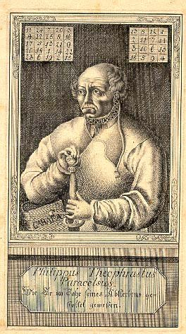
Théophraste Paracelse
Malgré le titre de docteur en médecine et en chirurgie, dont la Faculté de médecine de l'Université royale de Berlin a bien voulu m'honorer, dans sa séance du 16 d'octobre de l'année 1860, jour de son cinquantième anniversaire, je ne voudrais pas que les lecteurs de l'écrit suivant m'attribuassent la prétention de résumer l'histoire de la médecine; et, pour prévenir tout prétexte qu'on aurait de me la prêter, je vais distinguer quatre parties dans cette branche de nos connaissances.
- La première comprend les moyens d'entretenir la santé, d'après des principes d'hygiène démontrés ;
- La deuxième, les moyens de traiter une maladie conformément à la diététique, c'est-à-dire en aidant le retour à l'état normal des organes troublés par la maladie.
- La troisième indique les moyens de combattre une maladie par l'action de remèdes matériels, ou par des agents physiques tels que l'électricité, etc.
- La quatrième comprend les opérations du ressort de la chirurgie, soit pour retrancher ou faire disparaître dés parties anomales,du corps vivant, ou des parties; altérées au point de ne pas exercer les fonctions qu'elles remplissaient à l'état normal, soit pour réparer des organes lésés par une cause quelconque.L'écrit qu'on va lire a trait à la troisième partie que je distingue dans la médecine et que je restreins aux seuls remèdes matériels. Il porte à la fois sur la matière médicale, la pharmacopée et la thérapeutique, qui me présentent des faits que j'accepte comme vrais, mais que j'examine relativement :
- 1° A la manière dont j'ai toujours considéré l'analyse organique immédiate;
- 2° A ma manière d'envisager les propriétés organoleptiques ;
- 3° A ma définition des expressions, fait et méthode a posteriori expérimentale;
- 4° A la manière dont l'esprit humain étudie, selon moi, le concret
et l'abstrait.Après cette explication, on n'accusera pas de témérité, j'espère, celui que la Faculté de médecine de Berlin s'est attaché, en disant de lui : qui primus partium animalium chemicum statum ingenioso prosperrimo saccessu illustravit.
Voici la distribution des matières de cet écrit :
§ I. De la médecine des Grecs à mon point de vue.
§ II. De la médecine des Arabes à mon point de vue.
§ III. De la médecine de Paracelse à mon point de vue.
ART. 1°. Idées générales de Paracelse relativement à la médecine.
§ IV. Idées de Porta relatives à la matière médicale et à la thérapeutique.
§ V. Idées générales de Van Helmont sur la composition des corps, comparées aux idées générales de Paracelse.
Résumé des paragraphes II, III, IV, V.
§ VI. Vues générales de la composition chimique immédiate des corps vivants.
PREMIER ARTICLE.
Relation de mes vues avec la doctrine médicale de Paracelse, fondée sur les remèdes spécifiques.
DEUXIÈME ARTICLE.
Application de mes vues à l'étude des propriétés organoleptiques, considérées relativement à la thérapeutique.
[nous ne donnerons ici que les deux premiers articles qui se rapportent directement à l'idée alchimique ; les autres articles se rapportent à la thérapeutique proprement dite]
TROISIÈME ARTICLE.
Mon jugement sur les recherches physiologiques expérimentales dont l'opium et ses alcaloïdes ont été l'objet, pour M. Claude Bernard, et liaison de ces recherches avec l'analyse organique immédiate telle que je l'ai envisagée.
QUATRIÈME ARTICLE.
De l'étude des propriétés organoleptiques des espèces chimiques,
CINQUIÈME ARTICLE.
Espérance qu'on peut concevoir de l'élude des propriétés organoleptiques relativement au progrès de la thérapeutique.
SIXIÈME ARTICLE.
Dernières considérations à l'appui de mon opinion sur l'heureuse influence que l'intervention des sciences physico-chimiques peut avoir sur les progrès de la médecine.
§ I. De la médecine grecque envisagée du point de vue où se place M. Chevreul.
A son origine l'art de guérir fut absolument empirique : telle paraît avoir été la médecine des Asclépiades [famille de médecins grecs qui prétendaient descendre d'Asclépios. Hippocrate en est le représentant le plus célèbre]. Cependant, s'il est vrai, comme on le dit, que ceux-ci comptèrent dix-sept générations, et fondèrent trois centres d'enseignement médical, à Rhodes, à Cnide et à Cos, il faut admettre qu'il y eut un progrès incontestable, depuis Esculape, le premier des Asclépiades, jusqu'à Hippocrate, qui passe pour en avoir été le dix-septième. La médecine d'Hippocrate repose sur l'observation des symptômes de la maladie, afin qu'en la rapportant à une maladie déjà connue, on soit en état d'en prévoir le cours et de prescrire au malade le régime qu'il lui convient de suivre. D'après cela on peut dire, en langage moderne, qu'Hippocrate déduisait de la séméiotique [science des signes ; nous parlons aujourd'hui de la séméiologie], d'abord le prognostic, puis la diététique, dont l'objet est de laisser agir la nature. Ce n'est que si on la juge insuffisante qu'on a recours aux médicaments ; et, au temps d'Hippocrate, ceux-ci n'étaient qu'en petit nombre et d'une préparation fort simple. Hippocrate, en cherchant à connaître l'influence des lieux, des eaux et de l'atmosphère, avait parfaitement senti comment il convient d'appliquer la philosophie à l'étude de l'homme malade. Mais, en lui accordant tout ce mérite, je ne puis qualifier sa médecine ni de dogmatique, ni d'expérimentale, avec le sens que j'attache à l'expression de méthode a posteriori expérimentale; je la réduis à la simple observation des phénomènes, interprétée par un esprit sévère que dirigeaient les connaissances de son temps; et, quand Hippocrate prescrivait un remède et qu'il en observait les effets, bons ou mauvais, le fait principal ne sortait pas du domaine de l'observation, et dès lors, à mon sens, il n'entrait pas dans le domaine de l'expérience, envisagée comme je le fais au point de vue du contrôle de l'induction, à laquelle le médecin a été conduit par l'observation. Le corps de l'homme présentait à Hippocrate deux classes de matières , des matières contenant et des matières contenues.
A. Les matières contenant étaient les vaisseaux.
B. Les matières contenues comprenaient quatre liquides : le sang, la pituite, la bile jaune, l'atrabile, et une matière aériforme, l'esprit.Il attribuait les maladies :
- à la quantité des liquides,
- à leurs qualités respectives,
- à l'intimité de leur mélange,
- à leurs proportions respectives.De là l'expression de médecine humorale [J'expliquerai plus loin, page 150, en parlant de Galien, la correspondance des quatre qualités de l'homme aux quatre humeurs distinguées par Hippocrate.].
Les successeurs d'Hippocrate ne donnèrent pas une égale attention à chacune des branches de la médecine; parmi ceux qui s'occupèrent d'anatomie, les uns, avec Hérophile, se livrèrent à la recherche des médicaments, tandis que les autres, avec Érasistrate, s'appliquèrent à l'étude de la structure et de l'usage des parties (organes), sans négliger de remonter à la cause des maladies. Hérophile et Érasistrate marchaient dans la voie ouverte par Hippocrate, mais, un élève d'Hérophile, Sérapion d'Alexandrie, que l'on qualifie de chef des empiriques, conséquent au principe qu'il avançait, que le raisonnement ne sert à rien en médecine, et que l'expérience seulement doit être consultée, rompait explicitement avec Hippocrate et avec tous ceux de ses successeurs qui proclamaient leur maître l'oracle de Cos. On peut déjà établir deux catégories de médecins :
La première comprenant :
- Hippocrate né en 460, mort en [375 (?) - 370 (?) - 351 (?) - 344 (?)]
- Hérophile florissait en 300.
- Érasistrate florissait en 294.La seconde commençant avec Sérapion. Un médecin du nom d'Asclépiade, né à Pruse en Bithynie, partant des atomes de Démocrite et d'Epicare, admit que le corps de l'homme est formé d'atomes placés à distance, de manière à laisser entre eux des intervalles qu'il appelait pores; en état de santé une proportion convenable existait, selon lui, entre le diamètre des pores et les quantités des fluides qui doivent s'en échapper dans un temps donné; tandis que des défauts d'arrangement ou de position des atomes, amenant des variations dans l'étendue, les pores causaient les maladies, lesquelles étaient le résultat de pores trop étroits ou de pores trop grands. Je ne citerais pas Thémison de Laodicée, l'élève d'Asclépiade, qui admit l'existence des atomes et des pores, et insista sur l'étude des causes prochaines, limitées à la grandeur ou à la petitesse des pores, si, dans sa distinction des maladies en aiguës et en chroniques, il n'avait pas indiqué des traitements différents, non-seulement pour les unes et pour les autres, mais encore d'après la considération des périodes diverses d'une même maladie. Asclépiade et Thémison rejetaient les remèdes spécifiques, les purgatifs; et prescrivaient les relâchants et les astringents, conformément à la considération purement mécanique de la grandeur des pores. Après eux vinrent Thessalas et Soranus. Il n'est pas d'opinions controversées, en dehors des questions religieuses qui, après un certain temps, n'aient conduit à l'éclectisme, c'est-à-dire à une opinion composée de ce qui paraît vrai à l'éclectique dans les opinions controversées. C'est ce qui arriva lorsque Archigène d'Apamée examina les diverses opinions qui partageaient les médecins de son temps. Enfin, avant de parler de Galien, signalons la catégorie des médecins qu'on nomma pneumatistes ou spiritualistes. Athénée passe assez généralement pour en avoir été le chef, et ce que je dois faire remarquer, c'est que les éléments qu'il attribua aux corps n'étaient pas le feu, l'air, l'eau et la terre, mais les qualités qu'on attribuait à ces éléments comme les caractérisant, à savoir, le chaud, le froid, l'humide et le sec, auxquels il ajoutait l'esprit, cause de la conservation de toutes les parties du corps humain, qu'il pénètre à l'état normal; mais, en reconnaissant au corps humain l'altérabilité, il trouvait donc dans les altérations qu'il subit les causes des maladies. Galien (de 131 à 201 après J.-C.) a mérité sa grande réputation, non-seulement pour avoir accepté tout ce qu'il y a de bon dans la médecine hippocratique, mais pour avoir ajouté à celle-ci un ensemble considérable de connaissances précises, et d'une telle importance, que, s'il eût critiqué le grand médecin de Cos, ou même s'il eût gardé le silence sur le mérite de celui qu'il appelait son maître, il aurait pu se déclarer le chef d'une école nouvelle. Que la critique n'hésite donc pas à proclamer ce qu'il y a de véritablement grand dans l'hommage public de Galien au mérite d'Hippocrate. Galien [sur les quatre éléments et leurs rapports aux qualités spécifiques, cf. Atlas des Connaissances Humaines] partit, non immédiatement des quatre éléments, êtres concrets, le feu, l'air, l'eau et la terre; mais, à l'instar d'Athénée, des qualités spécifiques par lesquelles on caractérisait chacun d'eux; à savoir : la qualité d'être chaud, la qualité d'être froid, la qualité d'être humide et la qualité d'être sec. Il fit quatre substantifs abstraits, le chaud, le froid, l'humide et le sec, qu'il considéra ensuite comme des êtres concrets, et, en les unissant deux ensemble, il constitua ainsi quatre tempéraments correspondant, comme on va le voir, aux quatre humeurs cardinales.
- Le chaud et l'humide, au sang;
- Le froid et l'humide, à la pituite;
- Le chaud et le sec, à la bile jaune;
- Le froid et le sec, à la bile noire ou atrabile. [cf. Atlas des Connaissances Humaines, tableau n° 1 pour des précisions complémentaires -]J'applique à ces distinctions la manière dont j'ai développé récemment la distribution des connaissances humaines, conformément à ma définition du mot fait et à ses conséquences. La distinction des quatre éléments porte, comme je viens de le dire, sur le concret, et celle des quatre qualités sur l'abstrait. Quelle raison explique la distinction des quatre qualités ? c'est l'intention, avouée ou tacite, de rendre plus claire, plus saisissable à l'esprit de ceux à qui l'on s'adresse, une conception donnée comme une doctrine. Expliquons cette préférence de l'abstrait au concret. Galien, au point de vue de son système médical, bornant le rôle des quatre éléments constituant le corps de l'homme à des actions dérivées d'une seule propriété, qui, selon lui, caractérise chacun d'eux, soit qu'il s'agisse du cas de santé ou du cas de maladie, borne ainsi l'exposé de sa doctrine médicale à la prise en considération du chaud, du froid, de l'humide et de la sécheresse; il est facile dès lors d'établir une doctrine de thérapeutique, puisqu'il suffit de savoir, dans une affection donnée, ce qui est en excès ou en défaut pour rétablir l'équilibre normal, condition de la santé. Il prend, donc la partie pour le tout. Et si, en réalité, les choses se passaient comme il le conçoit, il aurait raison; mais en supposant, toutefois, qu'il eût expliqué pourquoi il prenait la partie pour le tout, en ne considérant dans un être concret, dans un élément, qu'une seule de ses qualités ou propriétés. Quand même il n'existerait que quatre éléments, le feu, l'air, l'eau et la terre, dans le monde matériel, les distinctions de Galien précitées seraient tout à fait insuffisantes pourconstituer une doctrine médicale. D'où la conséquence, à mon sens, que Galien a eu tort de prendre la partie
pour le tout, puisque les éléments une fois reconnus pour tels en constituant le corps de l'homme, agissent en vertu de propriétés autres que les propriétés appelées chaud, froid, humide, sécheresse : en faisant donc reposer ses raisonnements sur le chaud, le froid, l'humide et le sec, il a, selon moi, réalisé des abstractions en êtres concrets au point de vue de l'erreur [Voir le tableau inséré dans le Journal des Savants d'avril 1864 , p 239]. Je ne dirai rien des médecins grecs successeurs de Galien, d'Onbase (362), d'Aétius Oga), d'Alexandre de Tralles (554) et de Paul d'Egine (620).§ II. De la médecine des Arabes envisagée du point de vue où se place M. ChevreuL
Je m'arrêterai un moment pour rappeler les services rendus aux sciences et aux lettres par les Arabes, après qu'ils se furent montrés conquérants fanatiques, ennemis de toute civilisation sous les premiers califes, successeurs de Mahomet, mort en 632. C'est surtout à partir de l'an -732, date du règne du premier calife de la dynastie des Abassides, Aboul-abbas-saffah, que les Arabes se sentirent du goût pour les sciences et les lettres. Si de grandes découvertes, si des productions intellectuelles qui ouvrent de nouvelles voies à l'esprit humain, ne les distinguent pas, ils ont bien mérité de la civilisation en recherchant les manuscrits grecs, menacés de disparaître par tant de causes de destruction, en s'efforçant de se les approprier par des traductions, faites surtout par des chrétiens de Syrie et de Chaldée, en se livrant à l'étude de la philosophie grecque et particulièrement à celle des écrits d'Aristote, d'Hippocrate et de Galien, enfin en cultivant eux-mêmes l'astronomie, les sciences naturelles et les sciences médicales. D'un autre côté, dans les combats qu'ils livrèrent aux Grecs de Byzance, en éprouvant la puissance de leurs feux de guerre, ils sentirent la nécessité d'en connaître la préparation, afin de rétablir l'égalité des moyens de l'attaque et de la défense, et c'est ainsi qu'ils furent conduits à étudier le feu grégeois et plus tard la poudre à canon et l'artillerie. Si, en outre, on tient compte de leur goût pour l'alchimie, qu'ils puisèrent chez les Grecs Byzantins [cf. Idée alchimique, I et II], on s'expliquera sans peine leurs travaux chimiques entrepris dans l'espérance de confectionner la pierre philosophale et de préparer des remèdes dont le dernier devait être la panacée universelle. Il n'est pas douteux que, livrés avec ardeur à des travaux de ce genre, ils n'aient ajouté de nouveaux faits à ceux qu'on connaissait déjà; mais, en définitive, leur philosophie générale se trouvait renfermée dans le
péripatétisme, et leur médecine subordonnée à Hippocrate et surtout à Galien. Telles furent en effet les doctrines médicales que les Arabes transmirent à de nombreux étudiants : d'abord dans l'école de Bagdad, puis dans celles qu'ils fondèrent au Caire, à Alexandrie, à Kairvan , et même, en Europe, à Cordoue, Séviiïe, Grenade, Tolède, Valence, etc. et, pendant quatre siècles environ, la médecine arabe fut en honneur et ne compta pas de rivale. Mais une influence exercée par l'enseignement de la médecine arabe proprement dite ne fut bien appréciée à sa juste valeur que longtemps après la cessation de cet enseignement; je veux parler de l'intime alliance de la chimie avec la médecine, qui finit par imprimer à celle-ci un caractère qu'on chercherait en vain dans la médecine grecque ; alliance dont l'avantage ne fut bien senti dans les universités qui succédèrent aux écoles arabes, que longtemps après que celles-ci eurent cessé d'exister. On attribue généralement au médecin arabe Rhasès [cf. prima materia ] l'idée d'avoir appliqué la chimie à la médecine, et il est incontestable que son exemple compta un grand nombre d'imitateurs chez ses compatriotes. Rhasès mourut en 922. Je rappellerai deux de ses successeurs les plus célèbres, Avicenne [42 occurrences sur le site] et Averrhoès ; le premier mourut en 1036, et le second en 1198. Averrhoès était né à Cordoue en Espagne.§ III. De la médecine de Paracelse envisagée du point de vue où se place M. Chevreul.
ARTICLE 1er. Idées générales de Paracelse relativement à la médecine.
Dans la première moitié du XVIe siècle parut un homme en possession de toutes les aptitudes à exercer une influence extrême sur l'esprit des peuples en les frappant par la parole la plus énergique et en usant par calcul et sans scrupule de tous les moyens qui devaient lui faire une réputation de réformateur de la médecine d'Hippocrate, de Galien, et de tous ceux de ses contemporains qui étaient pleins de respect pour ces deux grands noms de la Grèce. Cet homme était Paracelse, né, en 1493, à Einsiedlen près de Zurich, en Suisse. Il est incontestablement le chef des médecins qu'on nommait spagyriques ou spagyristes dans le XVIe et le XVIIe siècle, qualification qui ne signifie pas autre chose que chimistes. Paracelse est-il un génie du premier ordre comme tant de ses partisans l'ont dit ? Sa pratique médicale a-t-elle été constamment heureuse ? Possédait-il toutes les connaissances de son temps, et les études premières de sa jeunesse l'avaient-elles suffisamment préparé à les acquérir ? Ce sont des questions que je m'abstiens de traiter; cependant je n'ai aucun motif de revenir des opinions que j'ai énoncées sur Paracelse dans ce journal [Journal des Savants, 1850, p. 74, 136 - cf. Chevreul critique de Hoefer]. Mais aujourd'hui de nouvelles études, de ses Archidoxes surtout, me permettent d'apprécier avec plus de précision et sa doctrine médicale et les données sur lesquelles il la fait reposer, en les rattachant à des connaissances chimiques qui n'ont été bien exactement formulées que dans la première moitié de ce siècle. [notons que les Editions de Massanne ont éditées un livre autrefois fort rare : l'Abrégé de la doctrine de Paracelse et de ses archidoxes - Paris, chez d'Houry fils, 1724 - de François Marie-Pompée Colonna, alias Crosset de la Haumerie ou Alexandre le Crom, cité par Tripied dans son Vitriol.]
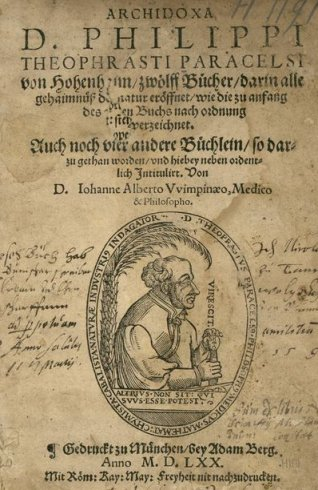
frontispice des Archidoxes de Paracelse, 1622
LE PRINCIPE FONDAMENTAL de la doctrine médicale de Paracelse est la prescription de remèdes spécifiques propres à combattre chaaae maladie en particulier. Si je n'ai aucun doute sur l'efficacité de la diététique, et sur celle d'une médecine préventive dirigée par des principes d'hygiène bien démontrés, je n'en considère pas moins le principe des remèdes spécifiques comme parfaitement vrai, et comme ouvrant une voie nouvelle à l'art de guérir, quand il s'agit, du moins, de combattre des affections causées à un être vivant par une matière venue du dehors dans son intérieur; que cette matière s'appelle un miasme, un poison, un venin, un virus, ou qu'elle-même soit organisée. Je fais cette déclaration afin qu'on sache bien que mon intention n'est pas d'exalter outre mesure le mérite de Paracelse dans ce que je vais dire d'un principe vrai, à mon sens, qu'il a cherché à répandre au moyen de nombreux écrits. La médecine de Paracelse est le produit d'observations faites avant lui, et non un résultat de ses propres découvertes; mais ces observations étaient éparses, isolées, et à lui revient le mérite de les avoir subordonnées au principe des remèdes spécifiques; c'est ainsi qu'il a formé un corps de doctrine médicale, si cette expression m'est permise en pareille matière, lorsque je suis le premier à reconnaître tout ce qu'il y a d'obscur, d'incomplet, de contradictoire, d'erroné même, dans l'ensemble des écrits de Paracelse. En parlant plus haut de Thémison de Laodicée, j'ai dit que je me serais abstenu de le citer, s'il n'avait pas distingué les maladies en AIGUËS et en CHRONIQUES, et cette citation m'est nécessaire pour expliquer à un certain point la différence de la médecine hippocratique d'avec celle de Paracelse. Lorsque Hippocrate traite de la diététique, c'est surtout la maladie chronique qu'il a en vue ; tandis que, si l'on recherche les affections que Paracelse s'applique surtout à traiter, on trouve évidemment qu'elles appartiennent aux maladies aiguës; et, en réfléchissant, on sent qu'avec la soif de renommée qui le dévorait il devait être bien plus empressé à traiter celles-ci que les autres. Effectivement la guérison d'une maladie aiguë ne frappe-t-elle pas la foule plus que ne le fait la guérison d'une maladie chronique prolongée, et, parce que la première maladie semble toujours désespérée, l'insuccès ne compromet point autant la réputation du médecin, que l'insuccès dans le cas où un malade succombe à un traitement auquel on reconnaît que le temps de la réflexion n'a point manqué à celui qui l'a prescrit. C'est donc la pratique de la médecine héroïque que Paracelse a préférée à toute autre; et cette préférence explique son ardeur à rechercher les remèdes les plus énergiques, son application à lire les livres des Isaac les Hollandais [cf. Traité du Sel attribué à Sendivogius, le second Cosmopolite] et de Basile Valentin [1, 2, 3, 4], où se trouvent exposées un grand nombre de préparations métalliques des plus actives pour combattre les maladies; enfin il ne faut pas oublier qu'au temps de Paracelse la maladie syphilitique [le fait que la syphilis soit cité dans les écrits « valentiniens » a permis de mettre en évidence que les traités attribués à Basile Valentin n'ont pu être rédigés par le moine de l'abbaye d'Erfurht, cf. Char triomphal de l'antimoine] était nouvelle en Allemagne, et que déjà l'efficacité des préparations de mercure était connue en Italie de quelques personnes. Mais ce serait une erreur de croire que les remèdes dont Paracelse usait provenaient exclusivement du règne minéral; car souvent il administrait l'opium, et c'est la raison pourquoi j'ai toujours préféré, contrairement à beaucoup d'auteurs, qualifier de chimique plutôt que de métallique la médecine de Paracelse [il est assez remarquable de constater que la médecine moderne, en un sens, est beaucoup plus métallique que chimique, pour remployer cette expression désuète...]. Paracelse puisa dans les livres que je viens de citer sa théorie des trois principes de toutes choses : le soufre, le mercure et le sel; le sel remplace l'arsenic, admis comme un des trois principes des métaux par Geber et par la plupart des successeurs immédiats de l'alchimiste arabe [il est donc faux, à proprement parler, de dire que Paracelse est l'inventeur du principe SEL ; il était déjà cité par Geber comme l'ARSENIC ; les Modernes en ont fait le principe CORPS. Colonna s'y attarde dans son Abrégé de la Doctrine de Paracelse - Editions de Massanne, 2003]. Il me semble très probable qu'il arriva un moment où l'étude des corps conduisit à voir que ni les quatre éléments, ni les trois principes immédiats des métaux, ne représentaient un corps sapide soluble dans l'eau; et que cette considération conduisit à imaginer le sel pour représenter les corps sapides et solubles dans l'eau. Quoi qu'il en soit, Paracelse, en l'adoptant, lui accorda une influence à la fois si étendue et si considérable, qu'un grand nombre d'auteurs disent que Paracelse en a parlé le premier, ce qui est faux. Tout ce qui précède a trait à la pratique médicale de Paracelse; il me reste à montrer les sources de sa doctrine et comment il établit le principe des remèdes spécifiques. C'est, à ma connaissance, ce que personne n'a fait encore. Le nombre des écrits de Paracelse, ses longs voyages, une pratique médicale incessante, des leçons multipliées, une vie qui ne dépassa pas quarante-huit années, expliquent sans doute, sans grande réflexion, que le temps lui manqua pour exécuter des travaux de longue haleine dans le laboratoire. Dès lors, en prenant la chimie pour base de sa doctrine
médicale, il fut obligé de recourir aux autres pour construire son édifice; et c'est en effet dans les livres d'Arnauld de Villeneuve [1, 2], de Raymond Lulle [1, 2], et surtout de Rupescissa [cf. Idée alchimique, III et 1], qu'il puisa l'idée première de la quintessence, base de sa doctrine; et cette idée, interprétée comme je vais le faire, expliquera, j'espère, clairement la théorie médicale de Paracelse. Rien de plus facile à comprendre que l'idée de quintessence, si l'on réfléchit à la réduction du vin en produit spiritueux et en un résidu aqueux, lorsqu'on l'a soumis à l'action de la chaleur dans un appareil distillatoire. En effet, le vin possède deux propriétés organoleptiques remarquables : tonique et fortifiant, pris en quantité convenable [on admet à présent que le vin, pris en quantité mesurée, exerce un effet de prévention de certains accidents cardio-vasculaires, notamment en prévention primaire des infarctus du myocarde. L'effet semble dose dépendant, ce qui est nouveau], il cause l'ivresse s'il est pris en excès. Que l'on examine maintenant le produit spiritueux et le résidu aqueux, en lesquels la distillation l'a réduit, et l'on trouvera au premier les deux propriétés organoleptiques caractéristiques du vin ; et on les trouvera à un degré d'autant plus prononcé, que le produit volatil sera moins aqueux, ou, ce qui revient au même, plus riche en alcool; de sorte que ce produit sera bien plus fort, à volume égal, que le vin d'où il provient. D'une autre part, comme le résidu aqueux n'a aucune des deux propriétés organoleptiques que je signale, la distillation est évidemment un moyen chimique de concentrer les propriétés caractéristiques du vin sous un très-petit volume. Or c'est cette concentration qui a fait dire que l'eau-de-vie est la quintessence du vin. Une fois cette conclusion admise, l'idée de retirer la quintessence de toute chose a laquelle on attribuait quelque propriété remarquable a pris le caractère de la généralité; et c'est en la considérant de ce point de vue que Paracelse fut conduit à en faire la base de sa doctrine. Avant d'aller plus loin, je ne puis trop insister sur cette disposition de l'esprit humain, à l'égard de tout objet concret qu'il examine, de ne prêter son attention qu'à une seule ou quelques-unes seulement des propriétés de cet objet à l'exclusion des autres. En procédant ainsi, il donne presque toujours une existence concrète à une propriété ou à quelques propriétés seulement; et, fatalement, il arrive à l'erreur, en prenant une partie pour un tout. Une abstraction, qui est bien un fait réel quand elle a été exactement définie comme attribut de l'objet concret à laquelle elle appartient essentiellement, sort de la classe des vérités lorsqu'on vient à lui attribuer une existence indépendante de cet objet et constituant un être concret tout à fait différent de ce même objet. C'est, en un mot, réaliser, au point de vue de l'erreur, des abstractions en leur donnant un corps [Voir le tableau dans le Journal des Savants d'avril 1864, p. 239]. Une remarque indispensable encore avant d'exposer la doctrine de Paracelse est de montrer que la quintessence n'est point une dans sa manière de voir; qu'elle n'est ni un élément [Je dis élément à l'instar de l'air, parce que Paracelse a confondu le mot élément, corps simple, avec le mot principe, qui peut avoir ce sens, mais qui s'applique encore à un corps composé que l'on qualifie de prochain ou d'immédiat - les alchimistes, pour parler de leurs éléments, parlent de principes principiés, cf. Artephius.], à l'instar du feu, de l'air, de l'eau et de la terre; ni un mixte unique, en d'autres termes, comme nous le dirions aujourd'hui, une espèce unique de composé défini. Il est peu de mots dont on ait tant abusé en philosophie et dont on abuse tant encore aujourd'hui que du mot unité. En répétant l'expression célèbre la variété dans l'unité, on se sert d'une phrase dont le sens était parfaitement exact dans l'esprit du célèbre auteur qui la donnait comme conclusion d'un raisonnement aussi clair que précis. Mais prétendez-vous en faire un principe, une règle, un axiome, pour en déduire comme conséquence la preuve d'une opinion que vous jugez nouvelle ? C'est alors que vous tombez dans l'erreur. Par exemple, en histoire naturelle , les partisans de l'unité de composition organique en ont fait usage comme de l'expression PRÉCISE de leur opinion. Est-ce la vérité ? Je ne le pense pas; car, évidemment, ceux qui professent l'opinion contraire, en faisant usage de l'expression règne ANIMAL, comprennent que le mot animal présente une idée très générale d'attributs, de qualités communes à tout être animal. Or, comme il existe un très grand nombre de formes diverses d'animaux, l'expression de la variété dans l'unité n'est pas moins exacte dans leur bouche que dans celle des partisans de l'opinion contraire. La différence vraie des deux opinions est de savoir si la variété porte sur des formes indéfiniment variables ou sur des formes variées dans des espèces définies. Les partisans de Paracelse, qui n'attachent d'importance dans les travaux scientifiques qu'aux expressions dont le sens est une généralité conduisant à une unité, n'ont pas manqué de signaler l'élévation des vues du médecin suisse dans sa conception de la quintessence. J'ai fait voir que cette expression, envisagée au point de vue de l'unité et à celui de la pluralité, se trouve dans des écrits antérieurs à Paracelse; qu'en conséquence il l'a empruntée; et j'ajoute que, dans sa doctrine, toute quintessence est spécifique; conséquemment, suivant elle, quintessence, pris dans le sens général, est un substantif abstrait et non concret. [dans le domaine de l'alchimie, nous réservons le mot quintessence pour exprimer un état de la matière fait de chaux métalliques dissoutes dans un fondant] Cette remarque a d'autant plus d'importance, qu'elle s'applique aux mots archées [cf. Chevreul critique de Hoefer, II], ferments altérables, dont la part est si grande dans le système de Van Helmont, un des médecins célèbres qui se sont le plus appliqués à l'étude des écrits de Paracelse. Paracelse admet :A. L'existence des quatre éléments : le feu, l'air, l'eau et la terre;
B. L'existence des trois principes immédiats des chimistes hollandais et de Basile Valentin : le soufre, le mercure et le sel; [mais ces principes ont une existence bien antérieure : il s'agit de sprincipes principiés que l'on a évoqués supra.]
C. L'existence de deux autres principes immédiats : le phlegme et le caput mortuum. [le phlegme est l'eau simplement incluse dans une substance ; il ne s'agit pas de l'eau dite de constitution. Quant au caput, il s'agit en général d'hepar sulfuris. Cf. Colonna, op. cit.] Ceux-ci sont passifs et les trois autres actifs.Mais une opinion qu'il importe d'expliquer, c'est que les trois principes actifs ne sont pas, pour Paracelse, des espèces chimiques, mais bien trois genres, renfermant autant d'espèces de soufre, autant d'espèces de mercure, autant d'espèces de sel, que l'on compte d'espèces différentes de corps composés de soufre, de mercure et de sel. Paracelse est donc encore ici bien éloigné des idées d'unité que beaucoup de gens lui ont prêtées. La conséquence est donc que le soufre du plomb diffère du soufre du fer, du soufre de l'étain; qu'il en est de même du mercure et du sel des mêmes métaux. [si l'on fait l'hypothèse que le Soufre contracte des rapports avec les oxydes, on peut montrer que les Soufres des métaux ne sont pas semblables, certains étant plus électro-négatifs que d'autres, etc. Toutefois, il ne semble pas que Paracelse comprenait ainsi les différents SOUFRES ; et que sa conception soit absolument erronée...] Ne cherchons point à faire concorder ces opinions avec les idées alchimiques. Contentons -nous de voir comment Paracelse en a développé les conséquences. En définitive, pour Paracelse, les quatre éléments, le feu, l'air, l'eau et la terre, et les cinq genres de principes immédiats qu'ils constituaient, les soufres, les mercures, les sels, les flegmes et les caput mortuum, formaient tous les corps tangibles, c'est-à-dire les corps que nos organes nous rendent sensibles. [dans cette optique, le SOUFRE correspond à une chaux métallique ; le MERCURE, à cette chaux dissoute et fluide comme de l'eau ; le SEL représente une matrice silicato-alumineuse] Mais la doctrine de Paracelse ne s'arrête point à cette conclusion sur la composition des corps tangibles; elle n'est compréhensible qu'à la condition de se rappeler ce que j'ai dit de la doctrine de Galien (p. 150 et 151) relativement aux quatre Qualités. Il est remarquable que Paracelse, cet adversaire passionné de Galien, comme lui abstrait des propriétés du concret pour en constituer des êtres imaginaires, auxquels il va attribuer des qualités sur lesquelles reposeront les fondements, les principes de sa doctrine médicale. Mais il est juste d'ajouter que les alchimistes avaient adopté cette manière de voir pour la composition des métaux, soit de leur composition élémentaire, le feu, l'air, l'eau et la terre, soit de leur composition immédiate, le soufre, le mercure [Philosophie naturelle des métaux, par Bernard le Trévisan. (Bibliothèque des philosophes [chimiques], 1ère édition, T.1, p. 132 et 133 surtout.)]. C'est ainsi que du monde visible nous allons passer au MONDE INVISIBLE. Paracelse admet les quatre dualités, le chaud, le froid, l'humide et le sec. Elles sont invisibles et représentées par la matière la plus subtile des quatre éléments et par la matière pure de chacun d'eux; et, si le feu, l'air, l'eau et la terre sont visibles et tangibles, c'est que chacun de ces éléments renferme des portions de chacun des trois autres. Cette distinction des quatre Qualités est la justification de la remarque que j'ai faite il y a longtemps, à savoir que les quatre éléments des anciens représentaient les quatre états d'agrégation de la matière admis par les modernes : l'état de fluide impondérable, les états pondérables ,fluide élastique, liquide et solide; et cette idée est conforme à l'opinion de Paracelse, que le feu est la matière la plus subtile et la plus mobile; que l'air est un peu moins subtil, un peu moins mobile et un peu moins actif que lui; que l'eau est moins subtile que l'air, et que la terre, moins subtile que l'eau, est grossière. Si l'on considère les trois principes immédiats actifs, dépouillés de leur flegme et de leur caput mortuum respectifs, c'est-à-dire si on les considère à l'état de pureté (comme principes génériques), on définira :
- Le soufre, un mixte où la chaleur prédomine; [chaux métallique dissoute]
- Le mercure, un mixte où l'humidité fluante prédomine; [fondant alcalin]
- Le sel, un mixte où la sécheresse prédomine. [matrice faite de silice et/ou d'alumine. Mais iic, il faut faire attention que les alchimistes parlent souvent du « sel d'union » pour leur Mercure.]Voyons comment Paracelse comprend la Quintessence, ou plutôt les quintessences, puisqu'il existe, selon lui, autant de quintessences que de mixtes distincts de tous autres. Une quintessence est le résultat des quatre qualités élémentaires, mélangées d'une certaine manière et en de certaines proportions. Ce sont les trois principes prochains actifs, un certain soufre, un certain mercure, un certain sel, qui constituent la quintessence, ou encore l'élément prédestiné d'un mixte. Toute quintessence, tout élément prédestiné, est uni aux deux principes inactifs, le flegme et la tête morte. [le phlegme n'est que de l'eau retenue par accident ; la tête morte est souvent un résidu très utile comme le foie de soufre ou l'Arcanum duplicatum] Voilà, suivant Paracelse, la composition d'un mixte tangible. Le flegme et la tête morte constituent le corps ou l'habitation de l'élément prédestiné; ils n'ont aucune des vertus d'un mixte. C'est par l'alchimie qu'on sépare la quintessence, l'élément prédestiné du corps, ou, comme on le dit encore, le pur de l'impur [nous avons défini la quintessence des Anciens comme un état dissous de la matière, labile, uniquement distinctible sous le pouvoir du feu et qu'ils ne pouvaient nommer d'aucune manière. Rappelons que c'est ainsi que Tertullien, à en croire Bossuet, dit que le cadavre se transforme en « ce je ne sais quoi qui n'a plus de nom dans aucune langue. » - cf. Sermon sur la Mort, Garnier-Flammarion, 1970 ]. Si Paracelse a dit que le FLEGME et le CAPUT MORTUUM sont comme la maison dans laquelle habite la quintessence, ou comme une boîte qui la renfermerait, son idée développée la lui a fait comparer à la couleur d'une teinture qui a pénétré toutes les parties du drap qu'elle colore. Cette comparaison établit, entre la quintessence, d'une part, et, d'une autre part, le flegme et le caput mortuum, une relation plus intime, plus chimique, que la première comparaison, qui n'établit qu'une relation absolument mécanique. Une fois l'idée d'une quintessence admise dans toute matière complexe et tangible où elle se trouve contenue elle-même dans une matière inerte, à savoir le corps proprement dit absolument passif, on se représente la quintessence comme la seule partie active de la matière tangible, et on arrive par la pensée à se la représenter comme une âme, en se livrant à une double considération portant d'abord sur la simplification de la matière et ensuite sur sa raréfaction ou subtilisation. [ce principe allégorique a été repris dans la doctrine alchimique] La simplification procède en prenant la partie pour le tout, en réalisant quelque propriété au point de vue de l'erreur, en en faisant un substantif abstrait que l'on considère ensuite à l'égal d'un être concret. La subtilisation, tout à fait d'accord avec la simplification, s'opère au moyen de la chaleur et conformément au raisonnement que j'ai exposé en parlant de la distillation qui réduit le vin en eau-de-vie et en résidu aqueux représenté par le flegme et le caput mortuum. L'idée de quintessence se généralise encore sans difficulté, en considérant des plantes aromatiques dont on sépare par l'atténuation des parties, par la distillation, l'arôme auquel on donne le nom d'huile volatile, puisque le produit renferme, condensée sous un faible volume, toute la partie aromatique qui se trouvait excessivement disséminée dans des parties tout à fait inodores de la plante; de plus, la qualification d'essentielle donnée à cette huile volatile est la preuve incontestable de ce que j'avance. Mais, si l'idée de quintessence se comprend aisément lorsqu'on l'applique à la distillation du vin et même à celle des plantes aromatiques, il en est autrement quand on l'étend aux substances fixes en général, et, en particulier, à la plupart des substances animales et surtout aux minéraux. La moindre réflexion en donne le motif. Lorsqu'une propriété, une qualité, ce que la langue de l'ancienne thérapeutique appelait une vertu, était reconnue pour résider dans une espèce chimique non volatile ou, en d'autres termes, fixe au feu, la pensée d'extraire par la distillation la quintessence résidant dans cette espèce chimique venait échouer devant le fait, peu importe que la quintessence fût altérable ou non altérable par le feu. Voilà la critique fondée que l'on eût été en droit d'adresser à Paracelse, si, dans le premier livre des Archidoxa, il ne se fût pas placé lui-même explicitement en dehors de toute discussion scientifique, d'abord en déclarant indignes la plupart des médecins de son temps, parce qu'ils étaient épris de la passion de l'argent plus que du désir de guérir leurs malades [Paracelse déclare que comme peu de gens sont dignes d'apprendre des choses si sublimes,il les écrira d'une manière que le vulgaire n'y entendra rien et que seuls ceux de son école y comprendront quelque chose. Et pour mettre ces secrets en plus grande sûreté, il dit qu'il ne publiera point le dixième livre qui est en quelque manière la clef des neuf autres, Colonna, op. cit., p. 58 -]; puis en déclarant qu'il recourt avec intention à un langage obscur, incompréhensible au vulgaire, mais intelligible pour ceux qui sont pénétrés de ses doctrines. En cela Paracelse, qui se prétendait adepte, suivait l'exemple de tous les alchimistes auxquels on demandait une indication précise des opérations propres à la confection de la pierre philosophale, et qui répondaient :
« Certainement, nous savons les exécuter avec succès; mais, si nous les décrivions fidèlement et clairement, qu'arriverait-il ? C'est que les méchants, les impies, seraient possesseurs de moyens d'accomplir les projets les plus criminels contre les hommes et contre Dieu. »
De là donc l'obscurité calculée de leurs écrits, qui s'adressent non au vulgaire, mais à des initiés, à des hommes déjà livrés à l'alchimie sous la direction de maîtres capables d'éclaircir les ténèbres, à des élèves dont l'honnêteté, la candeur, les penchants au bien des hommes, au respect de Dieu, leur sont connus, à la suite d'épreuves dont eux, adeptes d'Hermès, sont juges. Dans la position où Paracelse s'était placé, on devait se contenter de ce qu'il avait avancé sur l'impossibilité d'obtenir la quintessence d'un homme, parce que, selon lui, si Dieu eût voulu le contraire, l'homme aurait été immortel ; sur la possibilité d'obtenir, à l'usage de la médecine, les essences de la chair des animaux, du sang et même de l'urine; et, dans cette position encore, on ne pouvait lui demander la preuve que la quintessence de l'émeraude était un jus vert, ainsi qu'il le prétendait. Lorsqu'on a lu le deuxième et le troisième livre des Archidoxa ; dont l'objet est de définir la quintessence, et d'exposer les moyens de séparer les éléments des mixtes, lorsqu'on a vu, dans le quatrième livre sur les quintessences des métaux et des pierres, l'insistance de l'auteur pour montrer leur perfection déduite de leur inaltérabilité, et justifier dès lors leur emploi en médecine, à la condition expresse que leurs quintessences respectives auront été absolument séparées des corrosifs indispensables à leur préparation; on ne serait pas fondé à reprocher à Paracelse d'être en contradiction avec lui-même dans le dixième livre des Archidoxa, où il donne des procédés dans lesquels on obtenait la quintessence des métaux non point en les volatilisant, conformément à la manière dont il avait défini les quintessences, mais en chassant par le feu les principes impurs des quintessences, de sorte que celles-ci restaient pures au fond des creusets. Cependant la contradiction n'en était pas moins réelle entre ies préparations des quintessences métalliques et celle qu'il avait donnée des quintessences volatiles. [il reste que Paracelse oeuvrait par la voie sèche, dans le fait que relate Chevreul. La quintessence était encore appelée : quintessence des Éléments, Huile de Saturne, Mercure Teingeant, Sang du Dragon, Médecine universelle, Mercure Philosophique, Mercure Hermétique, vrai Or Potable, Sang du Lion Rouge, Aliment Carné, Eau des deux champions, Humide Radical des métaux, Dissolvant Universel, Sang des Martyrs, etc. Pernety s'est fait une spécialité de ce genre d'énumérations. On remarquera que presque toutes ces expressions s 'appliquent au Mercure dans son état fluide et correspondent à ce que nous avons désigné plus haut comme notre hypothèse sur la nature de la quintessence. Les champions ne sont autre que ceux dont parle Fulcanelli dans le Mystère des Cathédrales, cf. Gobineau de Montluisant. Les Martyrs évoquent l'allégorie du Massacre des Innocents, chère à Nicolas Flamel.]
ARTICLE 2. Application des idées générales de Paracelse à sa doctrine médicale.
Je vais parler maintenant de la médecine de Paracelse fondée sur l'idée qu'il se faisait de la quintessence des choses. Toute chose a sa quintessence, et cette quintessence possède les vertus de cette chose. Si ces vertus sont utiles à la santé de l'homme, il existe tout avantage a obtenir la quintessence de cette chose en en séparant le flegme et le caput mortuum, principes dénués de toute vertu, et dont la corrupti-
bilité en rend fort dangereuse l'introduction dans l'économie animale. Par la raison qu'il existe des remèdes spécifiques, il y a des quintessences spécifiques, conséquence incontestable du raisonnement de Paracelse. Selon lui, il existe un nombre considérable d'essences spécifiques. [nous donnons en vis-à-vis des propositions de Paracelse les traitements modernes curatifs ou préventifs qui sont à prendre presque comme des substantifs concrets et non abstraits au sens où le comprend Chevreul ]« Les unes guérissent les maux du foie ; [vaccination contre l'hépatite B - interférons combinés avec anti-viraux contre l'hépatite B et C]
« D'autres, ceux de la rate; [envisagée comme faisant partie du système lymphatique : chimiothérapie et radiothérapie curatives dans la maladie de Hodgkin]
« D'autres, ceux de la tête. [anti épileptiques ; anti dépresseurs ; anxiolytiques ; tranquillisants ; neuroleptiques ; etc.]
« D'autres n'agissent que sur le sang; [érythropoïétine recombinante ; facteurs de croissance des globules blancs ; chimiothérapies ]
« D'autres, que sur la bile jaune; [questrans]
« D'autres, que sur les humeurs en les évacuant. [terme générique, trop vague : diurétiques]
« D'autres agissent sur les esprits vitaux ; [terme obsolète ; les médicaments dits de confort, vitaminothérapie, etc. ]
« D'autres, sur la chair; [thérapeutique des dermatoses : eczéma, psoriasis ; porphyries cutanées]
« D'autres, sur les os ou sur la moelle; [traitement de l'ostéoporose par les biphosphonates de dernière génération ; traitement des leucémies de l'enfant et thérapies géniques de certaines leucémies chroniques de l'adulte]
« D'autres, sur les cartilages; [traitement de l'arthrose par des chondroprotecteurs. Notez que dans cette énumération, les articulations ne sont pas, à proprement parler, nommées : sinon, il faudrait inclure les médicaments inclus dans les rhumatismes inflammatoires chroniques où nous trouvons encore... les sels d'or, cf. or potable in voie humide]
« D'autres, sur les artères. [mesures hygiéno-diététiques, antidiabétiques, anti hypertenseurs, traitement des hyperlipidémies]
« D'autres guérissent la fièvre, mais non l'épilepsie, l'apoplexie. [antibiotiques, anti épileptiques, mesures précédentes, cf. artères]
« Celles qui sont soporifiques ne sont point attractives, et celles-ci ne sont pas consolidatives ou soporifiques comme celles qui ont ces propriétés. [décontracturants, myorelaxants, cf. maux de la tête]
« Il y en a d'autres qui renouvellent, restaurent, c'est-à-dire qui transmuent le sang et la chair; quelques-unes conservent seulement et font jouir d'une vie longue, et, si l'on est jeune, conservent en jeunesse; [cf. polémique sur les bienfaits de la DHEA]
« quelques autres agissent corporellement, et quelques-unes par une manière d'influence astrale; et, en un mot, leurs vertus sont si différentes, qu'il est comme impossible de les écrire toutes, y ayant des essences de telles vertus qui feront paraître un homme de cent ans comme s'il n'en avait que vingt. [on peut voir dans la radiothérapie une analogie de l'action à distance ; dans la chimiothérapie, les substances qui agissent « corporellement »]D'où proviennent le plus grand nombre des maladies ? De la corruption du sang ou des matières contenues dans les viscères, répond Paracelse. D'où vient cette corruption ? De l'altération des ferments intérieurs, et de cette altération peut résulter un véritable empoisonnement, répond encore Paracelse. Le sang étant essentiel à la vie, Paracelse condamne la saignée comme dangereuse, puisqu'elle élimine du corps le liquide qui est indispensable à la santé. [les saignées sont encore pratiquées dans des maladies comme l'hémochromatose, résultant d'une surcharge en fer de l'organisme ; dans les polyglobulies] En outre, Paracelse s'élève contre les purgatifs, parce qu'ils ont le grave inconvénient d'expulser du corps des matières qui ne sont pas moins nécessaires à la vie que ne l'est le sang. [les purgatifs sont des médicaments essentiels dont il ne faut pas abuser : carences nutritionnelles ou déperditions ioniques, etc.] Quels sont les remèdes véritablement efficaces ? Paracelse répond : La quintessence relative à la maladie qu'on veut combattre, parce que cette quintessence change en bien ce qui est vicieux dans les intestins et surtout dans le sang; et il est aisé de comprendre la raison pourquoi Paracelse prescrit l'emploi de la quintessence de préférence au mixte où cette quintessence se trouve associée au flegme et au caput mortuum, car la quintessence, plus subtile que le mixte, pénètre dans toutes les parties du corps du malade, et, par sa nature incorruptible, elle agit d'autant plus sur les ferments altérés, causes du mal, qu'elle peut avoir assez d'énergie pour les changer en sa propre nature, c'est-à-dire en corps favorables au bien-être du corps. [on est obligé de voir ici comme une anticipation de l'homéopathie ; rappelons que les essais thérapeutiques actuels ne mettent pas en évidence de différence statistiquement significative - et a fortiori cliniquement signifiante - entre un médicament homéopathique et un placebo] Théorie essentiellement alchimique, puisque l'idée de la transmutation apparaît dans tout son jour, mais ce n'est pas celle du vil métal en métal précieux, c'est la transmutation d'une matière nuisible à la vie en une matière qui la favorise ! [on peut en rapprocher, de nos jours, des traitements réputés spécifiques d'une maladie : par exemple, la colchicine dans le traitement de la crise de goutte] L'action thérapeutique de la quintessence est donc bien supérieure à celle du mixte, dont le flegme et le caput mortuum diminuent l'activité de la première; en outre, la nature corruptible du flegme et du caput mortuum a le grave inconvénient d'aider plutôt que de prévenir l'altération du sang et des matières contenues dans les viscères, et cette altération peut aller jusqu'à produire des poisons !
Je pourrais borner l'exposé de la doctrine de Paracelse à ce qui précède, cependant on prendra une idée encore plus juste et plus exacte de cette doctrine et du mode dont son auteur la mettait en pratique, en disant quelques mots des arcanes, des magistères, des spécifiques et des élixirs de Paracelse. [c'est au sixième Livre des Magistères et au Livre septième des Spécifiques que l'on trouve le sujet dans les Archidoxes] Ces préparations ne diffèrent point des quintessences; cependant des noms particuliers les en distinguent, et la manière dont l'auteur les définit montre comment, une fois lancé dans la voie de l'abstraction, en s'éloignant de plus en plus du concret on s'éloigne de plus en plus du vrai : en effet, Paracelse, après avoir imaginé que chaque chose a sa quintessence, admettait qu'en faisant passer à l'état d'arcane une quintessence ou plusieurs, on en gradue la force, on l'exalte au plus haut degré de perfection, comme il convient pour atteindre le but que se propose celui qui la prescrit; c'est donc un motif de dire quelques mots de ces préparations distinctes par le nom des quintessences.Arcanes, magistères, mystères de l'art. Livre V et VI des Archidoxes.
S'il semblait, d'après la manière dont Paracelse a envisagé les quintessences, qu'on ne pourrait rien concevoir qui leur fût supérieur comme remèdes, ce serait une erreur. Ainsi que je viens de le dire, du moment où l'idée qu'on se fait de la matière se concentre sur une seule de ses propriétés, que la pensée l'abstrait de la matière concrète à laquelle on l'attribue pour considérer cette propriété comme un être à part, l'esprit peut l'exalter de plus en plus de manière que sa vertu dépasse celle de la quintessence elle-même, et c'est là effectivement ce qu'exprime la définition des arcanes, des magistères, des mystères de l'art,
« lesquels, quoique quelquefois ils ne paraissent pas en forme de quintessence, cependant leur vertu non-seulement n'est pas moindre, mais elle est supérieure. »
Paracelse, en ne citant que quatre arcanes dans ses Archidoxa : la première matière, le mercure de vie, la pierre philosophale et la teinture, dit :
« Quoique ces arcanes soient plutôt choses angéliques et divines qu'humaines...»
Voici les qualités que Paracelse leur attribue :
- La première matière opère non-seulement sur les corps vivants, mais aussi sur les morts, et, pour ainsi dire, au-dessus de la nature. Le mercure de vie n'est pas proprement une quintessence, mais un arcane, d'autant qu'il contient un grand nombre de vertus qui préservent, restaurent et régénèrent. La pierre philosophale teint le corps, le soulage de toutes sortes d'infirmités, et, agit aussi sur les métaux, les élevant à la perfection et pureté de l'or. [nous tombons là dans l'ornière propre à l'alchimie chimérique : celle des transmutations] La teinture fait la même chose et même plus efficacement, car, comme elle teint l'argent en or et le transmue en métal parfait, de même cette teinture transmue la matière qui fait la maladie en santé, la cuisant, la digérant au plus haut degré de perfection.
Spécifiques. Livre VII des Archidoxes.
Les spécifiques de Paracelse ne différaient point essentiellement des préparations que l'on faisait avant lui. Ainsi ses partisans ont parlé des miracles qu'il avait opérés au moyen du spécifique qu'il appelait anodin, et qu'il composait avec de l'opium de Thèbes, des sucs d'orange et de citron, du cinnamome, du girofle, du musc, de l'ambre, du crocus, du jus de corail, du magistère de perles et de la quintessence d'or ! Ce spécifique, composé de toutes matières connues avant Paracelse et employées en thérapeutique plus ou moins longtemps déjà avant lui, ne témoigne-t-il pas de la misère du novateur charlatan, administrant des remèdes qu'il prétend nouveaux, dont il se garde bien d'indiquer la composition, et qui, en définitive, ne diffèrent pas de ceux que prescrivaient des médecins qu'il traitait d'ignorants et d'empoisonneurs ?
Élixirs. Livre VIII des Archidoxes.
Composés de plusieurs essences, ils étaient particulièrement destinés à conserver la santé, en raison de la vertu antiputride que Paracelse leur reconnaissait. Il les comparait aux ingrédients balsamiques dont les Égyptiens se servaient pour conserver les corps. La base des élixirs était généralement une préparation métallique d'or, de mercure, d'antimoine, etc. [on mesure toute la toxicité de ces préparations à base d'or, de mercure ou d'antimoine... Cf. voie humide et Char Triomphal de l'antimoine -]
Remèdes externes. Livre VIII des Archidoxes.
Ces remèdes concernaient particulièrement les blessures, les ulcères et les taches de la peau. Paracelse les donne comme supplément de ses livres de chirurgie.
En définitive, Paracelse a eu le mérite :
- 1° De comprendre parfaitement l'importance des remèdes spécifiques;
- 2° De chercher à en concentrer l'énergie dans la plus faible quantité possible de matière, en recourant à des procédés chimiques, les seuls capables d'isoler des corps que l'affinité chimique peut tenir unis à d'autres.Mais Paracelse s'est trompé en se représentant la partie active des remèdes, qu'il a appelée quintessence, comme devant être la partie la plus raréfiée de ces remèdes; cependant, s'il eût été pénétré de l'amour du vrai, ou plus sévère dans ses observations et ses raisonnements, la préparation de certaines quintessences minérales fixes au feu lui eût démontré l'erreur de sa conception première de la quintessence.
E. CHEVREUL.DEUXIÈME ARTICLE [Voir pour le premier article, le cahier de mars, p. 145].
§ IV. Idées de Porta relatives à la matière médicale et à la thérapeutique. — Examen de son livre de PHYTOGNOMONICA.
En parlant du macrocosme et du microcosme [Journal des Savants, 1853, février, page 122], je me suis appliqué à montrer comment de cette phrase de la Genèse
« Dieu créa l'homme selon son image; c'est à l'image de Dieu qu'il le créa, il les créa mâle et femelle » [Genèse, ch. I, v. 37 (Cahen)]
on a pu passer à l'idée du macrocosme et du microcosme; et comment de ces rapports, une fois établis, on a été conduit à faire correspondre les astres avec les organes principaux du corps de l'homme [cf. notre illustration de page d'index, tirée des Très riches Heures du Duc de Berry ; cf. Philosophie Naturelle Restituée de Jean d'Espagnet], ainsi que nous le représente un monument égyptien du temps de Ramsès II, dont nous devons la connaissance à Champollion le jeune; et de là enfin la correspondance de ces idées avec celle des signatures, images que certaines productions naturelles, particulièrement des plantes, offrent à la vue, et que l'on considérait comme des indices présentés par Dieu même aux yeux de l'homme dans l'intention formelle que celui-ci pût profiter de ces productions pour satisfaire à quelqu'un de ses besoins. Les signatures, ainsi envisagées, vont nous donner une matière médicale dont la base diffère fort de celle de Paracelse, qui repose à la fois et sur l'idée de la quintessence et sur la pratique de procédés chimiques propres à séparer celle-ci du corps grossier auquel elle est unie. J. B. Porta [1, 2, 3, 4,] publia, en 1583, sa Phytognomonica, qui ne comprend pas moins de 551 pages in-8°. L'ouvrage a cette analogie avec la doctrine médicale de Paracelse, que les plantes y sont envisagées surtout relativement aux services qu'elles peuvent rendre, comme remèdes spécifiques des organes malades du corps de l'homme; mais là s'arrête l'analogie. La chimie étant tout à fait étrangère à l'œuvre de Porta, les plantes y sont envisagées au point de vue de leurs attributs extérieurs, comme les étudie un naturaliste dont la tâche se borne à la simple observation des choses qui tombent immédiatement sous nos sens. Et en effet les relations des plantes, ou plutôt de leurs parties, avec les affections des organes qu'on veut guérir, consistent en de simples analogies de formes, d'usages, de couleurs, analogies qu'à la rigueur on fait rentrer dans les signatures.
L'objet de la Phytognomonica (juton, plante, gnwmwn, indice) est la découverte des vertus des plantes d'après l'observation de signes qu'elles présentent. Elle repose sur le principe que pose Porta, à savoir l'existence d'un rapport intime entre les parties de la plante et ses vertus. D'où suit la conséquence que l'extérieur de la plante, par sa forme, ses linéaments, sa couleur, son odeur, etc. fait connaître ses vertus, et c'est de l'observation de ces signes que les sauvages ont appris à tirer parti des plantes pour leurs besoins. Porta attache la plus grande importance à la distinction des plantes qu'il appelle échauffantes d'avec les plantes qu'il appelle rafraîchissantes. Une conséquence encore du principe de Porta est la conservation de la forme dans les plantes médicinales. Aussi tout ce qui peut la changer ou la modifier change et modifie leurs propriétés. De là l'étude que fait le savant napolitain des influences sur la végétation, des eaux douées, des eaux salées, du sol eu égard à toutes ses propriétés, à l'altitude, au climat, etc. de là la différence entre une plante sauvage et une plante cultivée. Les plantes dont les racines, les feuilles, les fruits, ont la forme d'un cœur, sont spécifiques pour les maux de cœur. Les plantes qui, comme la pulmonaire, présentent des taches douées de quelque ressemblance avec les poumons, sont spécifiques pour les maladies de cet organe. Les plantes vésiculeuses, comme le baguenaudier, l'alkékenge, sont bonnes dans les maladies de la vessie. Après avoir passé en revue les plantes ou celles de leurs parties douées de quelques points de ressemblance avec les membres de l'homme, ses viscères et ses organes, avec les couleurs des fluides contenus dans des vaisseaux, des vésicules, etc. telles que la couleur du sang, la couleur jaune de la bile, la couleur noire de l'atrabile, etc. Porta déduit, de la ressemblance des choses comparées, l'usage de la plante ou d'une de ses parties comme remède de la maladie de l'organe affecté.EXEMPLES :
- Les plantes dont le suc est jaune purgent de la bile.
- Les plantes dont le suc est rouge augmentent la quantité du sang, elles le purgent, elles sont vulnéraires. Il en est, comme la garance, qui sont emménagogues.
- Les plantes capillaires et les animaux chevelus doivent être employés dans les cas d'alopécie. De là l'usage du polytric et de la graisse d'ours, car tout le monde sait que cet animal est très-velu.Porta cherche les ressemblances que peuvent avoir des plantes avec des animaux, et de cette ressemblance il déduit des remèdes comme le montrent les exemples suivants : trois espèces d'aconits, dont les racines ressemblent au crabe marin et au scorpion, sont propres à guérir de la piqûre de ces animaux. Les plantes dont les racines ont la forme de serpents et de vers sont vermifuges et d'un bon usage contre la morsure des serpents. Les plantes à fleurs papilionacées ou semblables à des mouches, à des abeilles, etc. favorisent la fécondité. Des analogies de figures qu'il trouve, d'une part, entre des plantes et des animaux, et, d'une autre part, entre les symptômes de maladies qui attaquent l'homme, il déduit l'usage de ces plantes et de ces animaux pour combattre ces maladies.
EXEMPLES :
- Les arbres et les animaux d'une longue existence servent à prolonger la vie de l'homme.
- Les arbres et les animaux gras donnent de l'embonpoint.
- Les plantes et les animaux, écailleux sont d'un bon usage dans les maladies de la peau.Porta ne se borne pas à induire des remèdes de la ressemblance de la forme, de la couleur des plantes avec des organes malades, il en déduit , en outre, une ressemblance qu'il trouve entre le mode de naissance, de croissance, de reproduction, enfin entre des dispositions qu'il leur attribue de s'aimer, de s'attirer ou de se repousser.
EXEMPLES :
- Les plantes stériles rendent les hommes stériles.
- Les plantes abondantes en graines et les animaux riches en liqueur séminale sont prolifiques.Enfin Porta, non content d'avoir indiqué des remèdes de nature végétale, d'après des ressemblances de forme et des ressemblances de mœurs, se livre encore à des conjectures pour accroître le nombre des matières qui composent sa matière médicale.
EXEMPLES :
- Les plantes vineuses et les animaux qui aiment le vin causent l'ivresse.
- Les plantes aqueuses et les animaux qui ne boivent que de l'eau servent de remèdes contre l'ivresse.
- Les animaux muets causent la taciturnilé.
- Les animaux colères disposent à l'irascibilité, comme les animaux doux à la douceur.Le huitième livre, le dernier de la Phytognomonica de Porta, traite des rapports des plantes avec les astres et les minéraux, d'après la considération de leurs couleurs.
EXEMPLES :
- Les plantes à fleurs jaunes, comme les métaux et les pierres précieuses de cette couleur, tiennent de la vertu du soleil. [cf. Lapidaires Grecs, R. Halleux et J. Schampf, Les Belles Lettres, 1984]
- Les plantes à fleurs rouges et les pierres précieuses de même couleur participent, en médecine, de l'influence de la planète Mars [cf. humide radical métallique].On voit que Porta a envisagé son sujet de la manière la plus générale; mais, reconnaissons-le, sans discussion des opinions avancées dans l'ouvrage; au reste, c'est sa manière de procéder : tous les livres qui portent son nom témoignent plus de l'érudition de l'auteur que de l'originalité de son esprit et de la rigueur de son raisonnement. Certes je suis loin de nier qu'il n'ait observé, même qu'il n'ait fait des expériences de physique et de chimie, mais les résultats en sont confondus avec des faits que l'on connaissait avant lui, et malheureusement Porta n'avait pas l'habitude de citer les sources auxquelles il recourait. En cela il suivait l'exemple de ses contemporains et de ses prédécesseurs; car ce n'est pas seulement dans le temps où nous vivons que beaucoup d'auteurs omettent de citer les livres où ils ont puisé. Nous avons rendu justice à Porta comme érudit et savant, au courant des connaissances de son temps, mais nous n'avons pu reconnaître en lui cet esprit philosophique dont l'attention, portée sur des sujets négligés de ses prédécesseurs, faisait sortir de ses études des vérités nouvelles propres à découvrir de nouveaux horizons, à ouvrir de nouvelles voies à l'esprit humain. Bien plus, imbu des erreurs de son temps, il avait subi l'influence des idées astrologiques comme Paracelse et Van Helmont; il croyait à la production des plantes sans l'intervention des semences; il n'avait aucune idée sur la stabilité des formes des corps vivants dans les temps où nous les observons; et, sans réflexion, il cite la prétendue histoire d'une jeune fille, nourrie du venin des serpents, dont la morsure était aussi dangereuse que celle d'un reptile.
§ V. Idées générales de Van Helmont sur la composition des corps, comparées avec les idées générales de Paracelse.
Je pourrais, à la rigueur, me dispenser de parler de Van Helmont [cf. Chevreul, critique de Hoefer, II], parce que sa thérapeutique ne me suggère aucune observation, cependant, eu égard à l'étude qu'il fit des écrits de Paracelse, a la grande estime que le médecin suisse lui avait inspirée, aux idées qu'il lui emprunta pour les développer, et en considérant, malgré cela, l'extrême différence de sa manière d'envisager la nature de la matière, d'avec celle dont Paracelse l'envisageait, une lacune pourrait m'être reprochée si je m'abstenais absolument de parler de Van Helmont. Nous avons vu comment Paracelse, en partant de l'observation des propriétés organoleptiques que possèdent des matières employées en médecine, avait séparé ce qu'il appelait le flegme et le caput mortuum de ce qu'il appelait la quintessence, la seule partie de ces matières à laquelle il attribuât la propriété d'agir sur l'économie animale d'une manière favorable à la santé. Pour lui, la quintessence isolée était bien matérielle, mais cependant moins qu'elle ne l'était avant d'avoir été séparée du flegme et du caput mortuum. En outre, Paracelse admettait une ARCHÉE (archeas), être immatériel, qui veillait, dans l'intérieur du corps vivant, à ce que les organes accomplissent leurs fonctions respectives. En s'emparant de l'idée de Paracelse, Van Helmont ajouta à son importance par la grande extension qu'il lui donna. Selon lui, tous les corps solides et liquides que nous voyons et que nous touchons, quelque différents qu'ils nous paraissent, quelque grande que soit l'opposition que nous remarquons entre leurs propriétés, ont tous pour élément pondérable l'EAU. La cause de leurs différences mutuelles réside dans l'espèce d'archée qui est conjointe à l'eau; c'est donc de cette espèce d'archée, être impondérable, que chaque corps que nous distinguons des autres tire ses propriétés caractéristiques. Chaque espèce d'archée comprend un nombre indéfini d'individus semblables, et l'ensemble des archées diverses comprend un nombre d'espèces distinctes les unes des autres, égal à celui des corps que nous
distinguons chacun par un nom spécifique. Si chaque espèce d'archée n'est pas intelligente, elle jouit au moins d'une sorte d'instinct, qui la porte à agir sur l'eau à laquelle elle se conjoint, de manière à lui imprimer les propriétés par lesquelles l'espèce de corps ainsi produite se distingue des espèces des autres corps. [l'archée des Anciens n'est autre que le code génétique des Modernes] L'eau est absolument passive dans toutes ses conjonctions. Van Helmont admettait encore, dans les corps vivants, l'existence d'archées chargées de veiller à l'exécution des fonctions des organes nécessaires à la vie. L'air était bien un élément pour Van Helmont, mais il lui attribuait une manière d'être fort différente de celle que nous lui reconnaissons comme fluide parfaitement élastique; car, au lieu de cette élasticité parfaite, en vertu de laquelle l'air comprimé diminue de volume et revient à son volume premier dès que la compression a cessé, Van Helmont considérait l'air comme absolument passif, et dénué, conséquemment, de toute élasticité : il ne se condense ou se dilate, prétend-il, qu'en vertu du magnale, créature neutre intermédiaire entre la substance et l'accident, qui interrompt la continuité de ses parties. Le magnale n'était pas le vide absolu, mais l'espace qu'il occupait était dénué d'air, et, en vertu de son activité, il pouvait se resserrer et se dilater. Quand il se resserrait, disait-il, l'air semble, se dilater, et, quand il se dilate, l'air semble se condenser. Certes une telle manière de voir paraîtra bien extraordinaire à tous ceux qui n'ont pas lu Van Helmont ou les articles que j'ai consacrés, dans ce journal [Journal des Savants, 1850, p. 74, 136.], à l'exposé de sa doctrine. Si tous les mixtes résultent de la conjonction d'une archée spécifique avec l'eau, évidemment Van Helmont ne peut admettre l'existence de l'air dans aucun mixte, car, en l'admettant, il compterait deux éléments, l'eau et l'air, susceptibles de constituer des corps complexes. De là encore la conséquence que, dans la combustion, l'air ne pouvait s'unir à quoi que ce soit de matériel. Que pouvait donc être la combustion dans les idées de Van Helmont ? Une chose étrange, une opération où l'air n'intervenait que d'une manière absolument passive. Voici l'explication de la combustion d'une chandelle brûlant sous une cloche de verre renversée et posée sur le fond d'un vase à rebord contenant de l'eau, de manière à isoler l'air de la cloche de l'atmosphère extérieure. L'eau s'élevait peu à peu dans cette cloche, enfin la flamme s'éteignait, et cela arrivait, disait Van Helmont, lorsque la capacité du magnale, étant remplie des vapeurs du suif brûlant, elle était incapable d'en recevoir d'autre. En outre, ces vapeurs exerçaient une pression sur les parois du magnale, lesquelles, en s'éloignant les unes des autres, comprimaient l'air en en diminuant le volume. Enfin, insistons sur le fait que, pour Van Helmont, l'air atmosphérique n'était point ce qu'il appelait un gaz. En effet, l'air peut être coercé dans un vaisseau, comme le prouve l'expérience précédente, tandis qu'un gaz ne peut l'être : de là le sens d'esprit sauvage attribué au mot gaz.
C'est par le magnale que l'influence des astres se faisait sentir aux corps terrestres : il la supposait plus grande en été qu'en hiver, parce que la capacité du magnale est plus grande dans la saison chaude que dans la saison froide, prétendait-il. En résumé, un gaz ne peut être coercé ou renfermé dans un vase où l'air peut l'être : voilà la différence. Quand Van Helmont, avec cette manière de voir, a assimilé le produit gazeux de la combustion du charbon avec les gaz des eaux minérales de Spa, de la grotte du Chein, de la fermentation, et qu'il a signalé l'inflammabilité d'un autre gaz, il a fait preuve d'un esprit observateur et généralisateur, mais l'histoire de la science doit aller au delà de ces conclusions, poursuivre son examen et chercher à savoir ce que devenait, pour Van Helmont, le produit gazeux de la combustion du charbon. C'est alors qu'apparaît une opinion absolument inconciliable avec les connaissances actuelles les plus incontestables. Le gaz produit par la combustion du charbon gagne le magnale et de là s'élève dans les régions supérieures de l'atmosphère, où il est frappé par le froid; alors l'eau qui en constitue la partie pondérable se sépare de l'archée avec laquelle elle faisait une production séminale et retombe sur la terre sous forme de pluie ou de neige. Les opinions de Van Helmont ainsi développées, que penser de ceux qui avancent que Van Helmont, ayant constaté la diminution du volume de l'air par la combustion, n'avait qu'un pas à faire pour en reconnaître la composition chimique ? Car ne perdons pas de vue qu'il n'a parlé d'aucun mixte formé d'air, et que, dans son explication de la combustion, tout est purement mécanique : l'air absolument passif n'agit pas, le magnale seul reçoit, dans l'espace qu'il occupe, le produit gazeux du suif, et la combustion cesse du moment où le magnale est incapable d'en recevoir de nouveau. Van Helmont ne présente-t-il pas un exemple frappant de cette disposition de l'esprit humain si fatale à l'étude de la vérité, quand il veut créer un monde absolument différent de celui où il vit ? N'abuse-t-il pas de la raison, en prétendant que tous les corps que nous touchons, que nous voyons, ne renferment pas d'autre matière pondérable que l'eau, et que les innombrables différences par lesquelles ils se distinguent de l'eau résident dans les êtres imaginaires qu'il a nommés archées, êtres qui échappent à nos sens, de sorte que, pour Van Helmont, tout ce monde matériel se réduit à un seul élément, qui, par sa conjonction avec les diverses archées, constitue les différents corps qu'il appelle productions séminales ? Existe-t-il une preuve plus forte de la disposition de l'esprit humain à réaliser de simples abstractions en des êtres distincts et à donner à ces êtres imaginaires une activité capable d'imprimer à la matière réduite à la passivité absolue toutes les modifications, toutes les propriétés que l'observation des naturalistes et celles des physiciens et des chimistes ont fait connaître ?RÉSUMÉ DES PARAGRAPHES 2 , 3 , 4 ET 5.
Résumons les faits généraux de ce qui précède avant de parler de l'application de la science moderne à la médecine.
Les Arabes ont appliqué les procédés chimiques à la préparation des remèdes.
Paracelse, le premier, a généralisé cette application en en faisant le principe d'une thérapeutique fondée sur les remèdes spécifiques. Les mixtes employés comme remèdes étaient, selon lui, formés :
- 1° D'une partie active, quintessence, équivalente à un certain mercure, à un certain soufre et à un certain sel, suivant l'espèce de la quintessence ;
- 2° D'une partie inactive équivalente de flegme et caput mortuum.Des procédés chimiques seuls étaient capables d'isoler la quintessence de la partie inactive. La gloire de Paracelse est d'avoir fait la base de sa thérapeutique des remèdes spécifiques. Mais il a commis l'erreur de croire que la quintessence devait être volatile, raréfiée, qu'en conséquence il fallait recourir à la volatilisation pour isoler la quintessence de la partie inerte qui lui était unie. L'idée des trois principes : le soufre, le mercure et le sel, l'idée de la quintessence, déduite de la réduction du vin, par distillation, en eau-de-vie et en résidu aqueux dépourvu des propriétés organoleptiques du produit distillé sont antérieures à Paracelse; mais la distinction du flegme et du caput mortuum, qui sont inactifs, d'avec les trois principes, le soufre, le mercure et le sel, qui sont actifs, paraît lui appartenir. Paracelse, en faisant résider la partie active des remèdes dans une matière qui, volatile et raréfiée, semble par là même s'éloigner davantage de la matière inerte, n'est point encore inventeur, car il se conforme, en cela, à la manière de voir des alchimistes.
Mais la pensée d'ôter toute activité, toute force à la matière, est poussée au dernier extrême par Van Helmont, puisqu'il n'admet l'existence que de deux matières: l'eau et l'air: et encore admet-il qu'elles sont absolument passives. L'air n'entre dans la composition d'aucun mixte et doit au magnale de se contracter et de se dilater. L'eau seule constitue là partie pesante de tous les mixtes, et, si, en constituant chacun d'eux, elle présente tant de corps divers, c'est qu'elle obéit à un être impondérable, archée, qui lui est conjoint, et dont l'activité instinctive lui imprime les propriétés propres à chaque espèce d'archée. Les différences des divers corps résident donc exclusivement dans les archées.Tel est l'exemple extrême du spiritualisme appliqué aux sciences naturelles.
Enfin Porta a envisagé la matière médicale sous le rapport de la pure observation, qui est celui du naturaliste, c'est-à-dire à l'exclusion de la chimie appliquée par Paracelse à la préparation des remèdes. En considérant les plantes et les animaux ou quelques-unes de leurs parties au point de vue de la ressemblance de forme, de couleur, de linéaments ou signatures, et des analogies de mœurs, de croissance, de multiplication, etc. avec l'homme affecté d'une maladie ou d'une disposition qu'il s'agit de détruire, de restreindre ou de développer, Porta a donné la plus grande extension possible à son hypothèse d'analogie, mais en la considérant toujours uniquement au point de vue de l'augmentation numérique des substances complexes comprises dans ce qu'on appelle la matière médicale. Il n'y a donc pas de comparaison possible entre les vues de Paracelse et celles de Porta. En effet, la doctrine thérapeutique de Paracelse ne se conçoit bien qu'en prenant en considération la matière médicale d'abord, et la préparation des remèdes ensuite.
- 1° La partie de la médecine appelée matière médicale traite de l'histoire des corps que l'empirisme a fait employer comme remèdes; ils sont d'origine minérale et d'origine organique, et la nature de ceux-ci est bien plus complexe, en général, que ne l'est celle des premiers.
- 2° La préparation des remèdes prescrits par Paracelse repose sur le principe d'en exalter l'énergie au maximum en en réduisant le poids au minimum, à l'aide de procédés chimiques, employés afin d'obtenir la quintessence spéciale de chaque remède, la seule partie active de la substance médicale soumise à la préparation.Or Porta ne s'est point occupé de cette préparation, et n'a envisagé la matière médicale qu'au point de vue d'augmenter le nombre des substances d'origine organique qu'on peut y ranger d'après les rapports divers de forme, de dessin, de couleur, etc. et d'analogie de mœurs, etc. Paracelse s'est donc placé au point de vue chimique surtout, tandis que Porta s'est placé au point de vue du naturaliste : tous les deux ont admis l'influence des astres.
E. CHEVREUL.